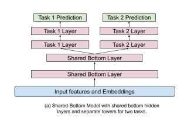

This is a collection of my notes which I refer to on a regular basis. Hope it is also helpful for others stumbling by.
I think of these notes as mountaineering pegs. Often at the time of studying a particular paper or topic, the concepts are clear. Over time, however, only a vague impression remains, and I can no longer tussle with the issues. So these notes serve as pegs that I hope to use to re-scale an old hill, or at least scale it with less effort than starting from scratch.
Generally, I highlight main points like so, and put in-line code or numbers like so.
Built with mdBook.
Current Focus
2025 Goals
-
GNN-based approach for search and recommendation
- Use past sequential history of items as user representation
- Transformer-based reranking
- Transformer-based user encoding for ANN retrieval
-
Multi-task, multi-purpose embeddings
- For retrieval and reranking
- Across various services (jobs, courses, skills)
Research
-
Optimizing LLM explanations based on implicit feedback
- How to optimize an LLM to provide better recommendation explanations by fine-tuning on implicit feedback?
-
Replacing BM25
- How to design a search system that matches BM25 performance at cold start and gradually improves with more data, without dropping below BM25 performance?
LightGBM Memory
TLDR: Solutions for memory issues during training of a LightGBM model:
- Cast numeric values into
np.float32to save data space - Keep
num_leaves <= 100(or some reasonable number) - If feature dimension is large (e.g.
M >= 1000), trycolsample_bytree = 0.1, although this might not help too much if the bottleneck is during bin histogram construction (rather than the actual training) - If number of rows and features are both large (e.g.
N >= 1_000_000andM >= 1000, i.e.>= 4 GB) then the data itself is taking up a lot of memory. It would be worthwhile to put the data on disk and uselgb.Datasetby providing the file path as the data argument instead. Then, we should settwo_round=Truefor the train method params. The explanation for two round is rather unclear, but it should help with memory whenDatasetis loading from disk (rather than from anumpy.arrayin memory). For this option, I had some trouble getting it to work with categorical columns.
For more details can refer to the experiments below.
Experiments
I often run into memory issues running LightGBM. So here are some experiments to measure memory usage and understand how hyperparameters can affect memory usage.
The function of interest is the fit method for the learn to rank task.
import lightGBM as lgb
def f():
model = lgb.LGBMRanker(**params, objective="lambdarank")
model.fit(
X=data,
y=y,
group=groups,
)
The memory usage is measured using the memory_profiler module, which checks the memory usage at .1 second intervals. The maximum is then taken to represent the maximum memory usage of the fit function. We also take note of the size of the data itself (using data.nbytes) and subtract that away to get closer to the LightGBM memory usage. Do note that this memory profiling is not very rigorous, so the results are best for relative comparison within each experiment rather than across experiments.
from memory_profiler import memory_usage
def run(params):
mem_usage = memory_usage(f)
return max(mem_usage) / 1000 # GB
We set the default parameters as follows and generate the data this way. For the experiments below, the default parameters are used unless specified otherwise.
DEFAULT_PARAMS = {
"N": 200000, # number of instances
"M": 500, # feature dimension
"n_estimators": 100,
"num_leaves": 100,
"histogram_pool_size": -1,
}
data = np.random.randn(DEFAULT_PARAMS["N"], DEFAULT_PARAMS["M"])
groups = [20] * int(N / 20) # assume each session has 20 rows
y = np.random.randint(2, size=N) # randomly choose 0 or 1
Large num_leaves can get very memory intensive. We should not need too many leaves, so generally using num_leaves <= 100 and increasing the number of estimators seems sensible to Gme.
- num_leaves:
10, Maximum memory usage: 2.28 GB - 0.80 GB =1.48 GB - num_leaves:
100, Maximum memory usage: 2.52 GB - 0.80 GB =1.72 GB - num_leaves:
1000, Maximum memory usage: 4.04 GB - 0.80 GB =3.24 GB
Increasing n_estimators doesn't seem to raise memory much, but increases run time because each tree is fitted sequentially on the residual errors, so it cannot be parallelized.
- n_estimators:
10, Maximum memory usage: 2.28 GB - 0.80 GB =1.48 GB - n_estimators:
100, Maximum memory usage: 2.53 GB - 0.80 GB =1.73 GB - n_estimators:
1000, Maximum memory usage: 2.69 GB - 0.80 GB =1.89 GB
Increasing N increases memory sublinearly. It seems that the data size itself will be more of a problem than the increase in LightGBM memory usage as N increases. For extremely large N, we can also set the subsample parameter to use only a fraction of the training instances for each step (i.e. stochastic rather than full gradient descent). By default subsample=1.0.
- N:
1,000, Maximum memory usage: 0.38 GB - 0.00 GB =0.38 GB - N:
10,000, Maximum memory usage: 0.45 GB - 0.04 GB =0.41 GB - N:
100,000, Maximum memory usage: 1.46 GB - 0.40 GB =1.06 GB - N:
1,000,000, Maximum memory usage: 6.12 GB - 4.00 GB =2.12 GB - N:
2,000,000, Maximum memory usage: 10.48 GB - 8.00 GB =2.48 GB
In contrast to N, memory usage is quite sensitive to M, seems to increase linearly when M gets large. M=10,000 blows up my memory. I suppose this could be mitigated by setting colsample_bytree or colsample_bynode to sample a smaller subset.
- M:
100, Maximum memory usage: 2.08 GB - 0.16 GB =1.92 GB - M:
1000, Maximum memory usage: 4.92 GB - 1.60 GB =3.32 GB - M:
2000, Maximum memory usage: 9.69 GB - 3.20 GB =6.49 GB - M:
3000, Maximum memory usage: 14.35 GB - 4.80 GB =9.55 GB
To deal with the high memory usage of large M, we can set colsample_bytree which samples a subset of columns before training each tree. This will help to mitigate the memory usage. For this experiment, we set M=2000 to simulate data with high number of dimensions.
colsample_bytree: 0.1, Maximum memory usage: 8.60 GB - 3.20 GB =5.40 GBcolsample_bytree: 0.2, Maximum memory usage: 9.58 GB - 3.20 GB =6.38 GBcolsample_bytree: 0.4, Maximum memory usage: 10.06 GB - 3.20 GB =6.86 GBcolsample_bytree: 0.6, Maximum memory usage: 10.07 GB - 3.20 GB =6.87 GBcolsample_bytree: 0.8, Maximum memory usage: 10.46 GB - 3.20 GB =7.26 GB
In contrast, setting colsample_bynode does not help memory usage at all. Not too sure why, but I suppose since multiple nodes for the same tree can be split at the same time, the full feature set still has to be kept in memory.
colsample_bynode: 0.1, Maximum memory usage: 10.49 GB - 3.20 GB =7.29 GBcolsample_bynode: 0.2, Maximum memory usage: 10.49 GB - 3.20 GB =7.29 GBcolsample_bynode: 0.4, Maximum memory usage: 10.49 GB - 3.20 GB =7.29 GBcolsample_bynode: 0.6, Maximum memory usage: 10.49 GB - 3.20 GB =7.29 GBcolsample_bynode: 0.8, Maximum memory usage: 10.48 GB - 3.20 GB =7.28 GB
Tweaking boosting and data_sample_strategy don't seem to affect memory usage too much. Using dart seems to require a bit more memory than the traditional gbdt.
data_sample_strategy: bagging,boosting: gbdt, Maximum memory usage: 8.90 GB - 3.20 GB =5.70 GBdata_sample_strategy: goss,boosting: gbdt, Maximum memory usage: 9.58 GB - 3.20 GB =6.38 GBdata_sample_strategy: bagging,boosting: dart, Maximum memory usage: 9.81 GB - 3.20 GB =6.61 GBdata_sample_strategy: goss,boosting: dart, Maximum memory usage: 9.80 GB - 3.20 GB =6.60 GB
Another bottleneck we can tackle is to realize that LightGBM is a two-stage algorithm. In the first stage, LightGBM uses the full dataset to construct bins for each numeric variable (controlled by the max_bins argument) based on the optimal splits. In the second stage, these discretized bins are then used to map and split the numeric variables during the actual training process to contruct trees. From my understanding, the first stage cannot be chunked as it requires the full dataset, but the second stage can be chunked (as per any stochastic gradient descent algorithm) where a fraction of the dataset is loaded at each time. Hence, the real bottleneck appears to be the first stage, when the bins are constructed.
According to this thread, we can separate the memory usage between the two stages by using lgb.Dataset. First, we initialize the Dataset object and make sure to set free_raw_data=True (this tells it to free the original data array after the binning is done). Then, we trigger the actual dataset construction using dataset.construct(). Thereafter, we are free to delete the original data array to free up memory for the actual training. The following code illustrates this concept.
dataset = lgb.Dataset(data=data, label=y, group=groups, free_raw_data=True)
del data
dataset.construct()
lgb.train(params=params, train_set=dataset)
TF-IDF
Term Frequency - Inverse Document Frequency is a well known method for representing a document as a bag of words. For a given corpus , we compute the IDF value for each word by taking , with denoting the number of documents in containing the word . The document is represented by a vector of length corresponding to the number of unique words in . Each element of the vector will be a tf-idf value for the word, i.e. , where represents the term frequency of the word in document . Sometimes, we may l1 or l2 normalize the tf-idf vector so that the dot product between document vectors represents the cosine similarity between them.
Bayesian Smoothing
We may want to apply some bayesian smoothing to the terms to avoid spurious matches. For example, suppose that a rare word appears only in documents and in the entire corpus just by random chance. The will be a large value, and hence documents and will have a high cosine similarity just because of this rare word.
For the specific setting I am considering, we can deal with this problem using bayesian smoothing. The setting is as follows:
- Each document represents a job, and each job is tagged to an occupation
- An occupation can have one or more jobs tagged to it
- We wish to represent each occupation as a TF-IDF vector of words
To apply bayesian smoothing to this scenario, notice that we only need to smooth the term frequencies . Since the IDF values are estimated across the whole corpus, we can assume that those are relatively reliable. And since term frequencies are counts, we can use a poisson random variable to represent them. See reference for a primer on the gamma-poisson bayesian inference model.
Specifically, we assume that is the poisson parameter that dictates the term frequency of in any document belonging to , i.e. . We treat the observed term frequency for each document belonging to as a data sample to update our beliefs about . We start with an uninformative gamma prior for , and obtain the MAP estimate for as below, with denoting the number of documents that belong to occupation .
We can thus use this formula to obtain posterior estimates for each . One possible choice of the prior parameters and is to set to be the mean term frequency for word per document in the entire corpus, and to set . This prior corresponds to following a gamma distribution with mean and variance , which seems to be a reasonable choice that can be overrided by a reasonable amount of data.
The posterior variance, which may also be helpful in quantifying the confidence of this estimate, is:
Finally, after obtaining the posterior estimates for each , we can just use them as our term frequencies and multiply them by the IDF values as per normal. We can also apply l1 or l2 normalization thereafter to the tf-idf vectors. This method should produce tf-idf vectors that are more robust to the original problem of spurious matches.
For illustration, for a very rare word , will be a low value close to 0 (say 0.01). Suppose we were to observe number of new documents, each containing one occurrence of word . Then the posterior estimate of will update as follows:
| n | |
|---|---|
| 1 | 0.005 |
| 2 | 0.337 |
| 3 | 0.503 |
| 4 | 0.602 |
| 20 | 0.905 |
As desired, the estimate for starts off at a very small value and gradually approaches the true value . This will help mitigate the effect of spurious matches. If we desire for the update to match the data more quickly, we can simply scale and down by some factor, e.g. now and . Then we have:
| n | |
|---|---|
| 1 | 0.001 |
| 2 | 0.455 |
| 3 | 0.626 |
| 4 | 0.715 |
| 20 | 0.941 |
As a final detail, note that the update formula can result in negative estimates if and . The small negative value is probably not a big problem for our purposes, but we could also resolve it by setting the negative values to zero if desired.
Cross Encoders
SentenceTransformers
Collaborative Filtering
Collaborative filtering is typically done with implicit feedback in the RecSys setting. In this setting, interactions are often very sparse. Most of the time, only positive signals are recorded, but a non-interaction could either mean (i) user dislikes the item or (ii) the user was not exposed to the item. Hence, we cannot use algorithms like SVD which assume no interactions as irrelevance.
A useful repository is https://github.com/recommenders-team/recommenders.
A generic and fairly common architecture for the collaborative filtering model is to embed each user and item into separate fixed size vectors, and use the cosine similarity between the vectors to represent a score. This score is fed into a cross entropy loss against the labelled relevance of user to item to train the embeddings.
Setup
Let and denote the dimensional embedding vector for user and item . Let the similarity function be which is typically , and distance function which is typically . Then some common loss functions may be denoted as below.
Pointwise Losses are typically low-performing. For a given (u, i) pair, pointwise losses assume the presence of a 0, 1 label for relevance, and tries to predict it. The typical pointwise loss is Binary Cross Entropy, which may be expressed as:
Pairwise Losses assume the presence of training triplets (u, i, j) which correspond to user, positive item and negative item. A typical pairwise loss is Bayesian Personalized Ranking, as follows:
Weighted Matrix Factorization
This describes the Cornac implementation of WMF. The code:
Let describe a rating matrix of users and items. For simplicity, we may restrict . Given a user embedding matrix and item embedding matrix , WMF computes the similarity score as the dot product .
The general loss function is:
The idea is to simply take the squared error from the true ratings matrix as our loss, but apply a lower weightage to elements in the rating matrix where the rating is zero (as these are usually unobserved / implicit negatives that we are less confident about). Usually b is set to 0.01. Regularization is performed on the user and item embedding matrices, with as hyperparameters to adjust the strength of regularization.
For cornac, this loss is adapted to the mini batch setting. Specifically, the algorithm is:
- Draw a mini batch (default:
B = 128) of items but use all the users - Compute the model predictions
- Compute squared error
- Multiply matrix of weights (either
1for positive ratings orbfor negative ratings) element-wise with
Note that Adam optimizer is used, and gradients are clipped between [-5, 5].
Bilateral Variational Autoencoder (BiVAE)
Recommenders BiVAE Deep Dive BiVAE Paper
A working implementation of BiVAE is available on Cornac.
A variational autoencoder improves over traditional linear matrix factorization methods by using non-linearity and a probabilistic formulation. Given a user, the autoencoder encodes the data representing the entity into a vector in some latent space. A decoder then takes the vector in the latent space and decodes it into something close to the original data.
The difference between VAE and a regular autoencoder is that it doesn't learn a fixed vector representation, but rather a probability distribution in the latent space. This allows it to model noisy, sparse interaction data better.
Splitting
recommenders uses a few different types of data splitting:
- Stratified spltting.
Evaluation
Evaluation is a non-trivial topic for recsys, and different approaches measure different things. Suppose we have a dataset of user-item interactions with a timestamp.
Random splitting simply takes a random split of say 75% for train and 25% for test. The problems with this approach:
- No guarantee of overlap in users across train and test. If a user does not appear in the train set, it is not possible to recommend items for him/her in the test set.
- Chronological overlap between train and test set, leading to data leakage issues.
Stratified splitting addresses the user overlap issue by ensuring that the number of rows per user in the train and test set are approximately 75% and 25% of the number of rows in the original data respectively. This ensures that we have sufficient training and test data for each user, so that the collaborative filtering algorithm has a fair chance of recommending items for each user.
However, stratified splitting still involves randomly assigning rows for each user into the train and test set, which does not address the chronological overlap issue. Temporal stratified splitting addresses this issue by assigning the 75% and 25% of train and test data based on chronological order. In other words, the oldest 75% of data for each user is assigned to the train set.
The extreme version of temporal stratified splitting is leave last out splitting, in which all but the latest row for each user is put into the train set. This is suitable for settings where the task is to predict the very next action which the user will take (e.g. which song will the user listen to next).
Note that temporal stratified splitting may potentially introduce temporal overlap between the train and test sets across users. That is, the train set period for user A may potentially overlap with the test set period for user B. Hence, if there are strong concerns with temporal effects in the dataset, we may need to be mindful of this.
Global temporal splitting addresses this issue by assigning the oldest 75% of data across all users to the train set. This addresses the data leakage issue and more closely resembles actual production setting. However, there is no guarantee on the amount of train/test data for each user. Hence we may need to drop rows where there exists test data for user A but no corresponding train data due to the global temporal cutoff.
AB Testing
References
-
General:
-
On Bayesian AB Testing:
Examples
These summaries are based on reading PostHog's article on AB testing and studying the ones of interest further.
AB Testing at Airbnb
AB Testing is crucial because the outside world often has a larger effect on metrics than product changes. Factors like seasonality, economy can cause metrics to fluctuate greatly, hence a controlled experiment is necessary to control for external factors and isolate the effects of the product change.
Airbnb has a complex booking flow of search -> contact -> accept -> book. While they track the AB impact of each stage, the main metric of interest is the search to book metric.
One pitfall is stopping the AB Test too early. Airbnb noticed that their AB tests tend to follow a pattern of hitting significance early on but returning to neutral when the test has run its full course. This is a phenomenon known as peeking, which is to repeatedly examine an ongoing AB test. It makes it much more likely to find a significant effect when there isn't, since we are doing a statistical test each time we peek. For Airbnb, they hypothesize that this is also a phenomenon caused by the long lead time it takes from search -> book, such that early converters have a disproportionately large influence at the beginning of the experiment.
The natural solution to this problem is to conduct power analysis and determine the desired sample size prior to the experiment. However, Airbnb runs multiple AB tests at the same time, hence they required an automatic way to track ongoing AB tests and report when significance has been reached. Their solution back then was to create a dynamic p-value graph. The idea is that on day 1 of the experiment, we would require a very low p-value to declare success. As time goes on and more samples are collected, we can gradually increase the p-value until it hits 5%. The shape of this graph is unique to their platform and they did extensive simulations to create it, so this solution is not very generalizable.
Another pitfall was assuming that the system is working. After running an AB test for shifting from more words to more pictures, the initial result was neutral. However, they investigated and found that most browsers had a significant positive effect except for Internet Explorer. It turned out that the change had some breaking effect on older IE browsers. After fixing that, the overall result became positive. Hence some investigation is warranted when the AB test results are unintuitive. However, one needs to be cautious of multiple-testing when investigating breakdowns, since we are conducting multiple statistical tests.
Airbnb has a strong AB testing culture - only 8% of AB tests are successful (see Ron Kohavi's LinkedIn Post).
AB Testing at Monzo
Monzo has a big AB testing culture - they ran 21 experiments in 6 months. Monzo has a bottom-up AB testing culture where anyone can write a proposal on Notion. Some of the best ideas come from the customer operations staff working on the frontlines. A proposal comprises the following sections:
- What problem are you trying to solve?
- Why should we solve it?
- How should we solve it (optional)?
- What is the ideal way to solve this problem (optional)?
Many proposals end up becoming AB experiments. Monzo prefers launching pellets rather than cannonballs. This means that each experiment comprises small changes, is quick to build, and helps the team learn quickly.
AB Testing at Convoy
Convoy argues that bayesian AB testing is more efficient than frequentist AB testing and allows them to push out product changes faster while still controlling risk.
The argument against frequentist AB testing is as follows. Under traditional AB testing, we define a null hypothesis using the control group (call it A), and declare a treatment (call it B) as successful if the treatment value has a significant p-value, i.e. it falls outside of the range of reasonable values under the null. Based on power analysis and an expected effect size, we predetermine the necessary sample size to achieve sufficient power, and once this sample size is reached, we have a binary success or failure result based on the p-value.
Convoy argues that this approach is safe but inefficient. This is because prior to the sample size being reached, we do not have a principled way of saying anything about the effectiveness of the treatment, even if it is performing better. Furthermore, frequentist AB testing gives us a binary result, but it does not quantify the size of the difference. Specifically, an insignificant test where E(A)=10%, E(B)=11% is quite different from E(A)=15%, E(B)=10%. For the former case, one can argue for launching B even if the p-value did not hit significance, whereas for the latter we should definitely not launch.
Bayesian analysis comes in to make the above intuition concrete. Suppose we are interested in the clickthrough rate (CTR) of variant A vs B. Bayesian analysis provides a distribution of the average CTR for each variant A, B at any point of the AB test, based on the results that it has seen thus far. These posterior distributions reflect both the mean of the data (how far apart is from ) and the variance of the data (how spread out the distributions are), allowing us to quantify how much we stand to gain if we were to pick either variant A or B at this point in time.
Concretely, they define a loss function as follows. Let and be the unobserved true CTR for variants A and B respectively, and let the variable denote which variant we decide to choose. Then our loss for choosing each variant can be expressed as:
In other words, the loss above expresses how much we stand to lose by picking the unfortunately wrong variant based on incomplete evidence at this point in time. Of course, we do not know the true values of and , so we need to estimate the loss using our posterior distributions which we computed from data. We then compute the expected loss based on the posterior distributions , as such:
Here, is the joint posterior distribution, which I believe we can obtain by multiplying the two independent posterior distributions , together. We can also perform random draws from the posterior distributions to estimate this statistic. Finally, we make a decision by choosing the variant that dips below a certain loss threshold, which is usually a very small value.
The appeal of the bayesian approach is two-fold:
- It allows us to make faster decisions. Suppose an experiment is wildly successful, and it is clear within a day that variant B is better. Bayesian analysis will be able to reveal this result, whereas frequentist analysis will tell us to wait longer (since we estimated the effect size to be smaller).
- It allows us to control risk. Since we are making decisions based on minimizing risk (supposing we had picked the poorer variant), we may be sure that even if we are wrong, it will not severely degrade our product. So supposing that there is no significant engineering cost between variant A and B, we can more rapidly roll out new iterations with the assurance that on average our product will be improving.
Power Analysis
Reference: Probing into Minimum Sample Size by Mintao Wei
How to determine the minimum sample size required to achieve a certain significance level and power desired?
The following table helps us understand how type I and type II errors come into play:
| Null Hypothesis: A is True | Alternate Hypothesis: B is True | |
|---|---|---|
| Reject A | Type I Error | Good statistical power |
| Accept A | Good significance level | Type II Error |
Type I Error refers to rejecting the null hypothesis when it is actually true, e.g. when we think that an AA test has significant difference. In short, it means we were too eager to deploy a poor variant. This should happen with probability , which is the significance level which we set (typically 5%). We have a better handle on type I error because the baseline conversion rate is typically known prior to an experiment.
Type II Error refers to failing to reject the null hypothesis when the alternate is actually true, i.e. we failed to get a significant effect on an improvement that is known to be better. In short, we were too conservative and failed to deploy a winning variant. In order to reason about type II error, we need to make a guess on what is the distribution of test variant B. Typically, this is done by assuming a minimum effect we wish to detect, and setting , and re-using the standard deviation from A. With these assumptions in place, we use to determine the type II error that should only occur with probability (typically 20%). Note that since is the minimum effect we wish to detect, if the actual effect turned out to be larger, the type II error can only be smaller than our desired amount, which is ok.
Now we can derive the formula for the minimum sample size required to achieve the desired levels of type I and type II error respectively.
Let us define the baseline conversion rate as , and the minimum relative detectable effect rate as . Consequently, the minimum detectable delta is . Let the desired power level be , and the desired significance level as . Assume the scenario where we are running an AA or AB test with two variants of sample size each.
Firstly, we write down the distribution of the sample mean difference supposing we knew the true population means and standard deviations. Let and . Note that may have arbitrary distributions, e.g. they could measure proportions, revenue etc.
Under the central limit theorem, the sample means will be distributed like so with samples: , . Importantly, the difference of the sample means will have the distribution below. Note that we add the variances together because for any two independent random variables .
Now we can start working from the desired levels to the minimum sample size. We need to ensure that both objectives below are achieved with our sample size :
- Assuming null hypothesis to be true, ensure that type I error .
- Assuming alternate hypothesis to be true, ensure that type II error .
Let us define some notation first.
- Let denote the critical value under the standard normal distribution such that . This is basically the
scipy.stats.norm.ppffunction, e.g. . - We also want to denote the critical value under the distribution of the sample mean difference under the null or alternate hypothesis (these are non-standard normal distributions). Let these be and respectively.
 |
|---|
| Illustration for Power Analysis Derivation |
For objective 1, assuming the null hypothesis and using equation (1) above, we have . Since is a two-tailed probability and we want the critical region on the right-side, let . E.g. implies . Then:
Note that equation (2) above tells us the critical value such that we will reject the null hypothesis if the sample mean of is greater than this value. To satisfy objective 2, we must thus ensure that the probability of rejecting the null hypothesis is at least . In other words, we want . Assuming the alternate hypothesis and again using equation (1), we have . So then:
For the purpose of getting a minimum , we assume . Then using this and squaring both sides with some rearranging gives us:
Which gives us the required minimum sample size equation. If we assume , as is often assumed because we do not know the variance of the treatment, then it simplifies to the following form (as seen in Ron Kohavi's paper).
Bernoulli Events
The equation (3) above for the minimum sample size requires us to know the standard deviation under the null and alternate hypotheses. Usually, the standard deviation under the null is computed from historical data, and it is assumed that . However, if the event we are interested in may be represented as a bernoulli random variable (e.g. an impression is shown and user either clicks or does not click with some probability), the equation may be simplified.
Specifically, the variance of a bernoulli random variable with probability is . Thus, if , then , and likewise for .
So we can use and and substitute these into equation (3). We will then be able to have a minimum sample size formula by just specifying , , baseline conversion and minimum relative difference . This is the formula used by Evan Miller's sample size calculator.
Large Language Models
LLMs are generally used in an auto-regressive way, where the user supplies a prompt and the LLM returns a generated response. This framework makes it amenable to a wide range of tasks.
HuggingFace has a great blog post explaining how we can run LLMs on humble hardware. Typically, LLMs have billions of parameters. The following rules of thumb helps us know how much memory we need to load the LLM into memory. For a model with X billion parameters:
- Loading in
float32requires4X GBof VRAM - Loading in
bfloat16requires2X GBof VRAM - Loading in
int8requiresX GBof VRAM
Hence we see that we can load a ~7 billion parameters model with around 14GB of VRAM if loaded in bfloat16, which makes it feasible to run on GPUs like Tesla T4 with 16GB of VRAM. This can be done when loading the model with from_pretrained(..., torch_dtype=torch.bfloat16). Most models are trained in bfloat16 anyway, so it makes sense to load them at that precision.
Current popular open source LLM of that size includes mosaicml/mpt-7b, which can be easily downloaded and used using huggingface.
Quantization
It turns out that we can lower the precision of models even further than 16 bits if we use a quantization method (see e.g. Dettmers 2022, this paper is the basis for the package bitsandbytes used for quantization). The general idea is akin to encoding - we encode each number from a higher precision into a "codeword" in the lower precision (i.e. quantization). Numbers that are close to one another in the higher precision may get mapped to the same "codeword". When we want to use the encoded value, we look up the value in the higher precision that it maps to (i.e. de-quantization).
When applying this to quantizing a neural network, the steps involved are:
- Quantize all model weights to target precision (e.g.
int8) - Pass the input vector at
bfloat16 - At each layer, dequantize the weights and perform matmul in
bfloat16 - Quantize the weights again for storage
Hence while quantization lowers the memory footprint of the model, it may increase inference time. To use quantization, we need to do the following (also make sure bitsandbytes is pip installed). We can also pass load_in_4bit=True for 4bit quantization. More info on quantization usage is available at HuggingFace. An important note is that a GPU is required for quantization, at least in the bitsandbytes package.
model = AutoModelForCausalLM.from_pretrained(..., load_in_8bit=True)
Flash Attention
The self-attention mechanism (Dao 2022) is at the heart of the transformer performance but is also a major bottleneck in terms of memory and computational cost. One of the most successful optimizations for the attention mechanism is the Flash Attention paper.
Suppose we have an input sequence of embeddings where , such that . The transformer stores parameters , such that such that . The self-attention matrix is then computed to represent the pairwise interaction between tokens at position ( row) and position ( column). The row-wise softmax is taken to convert these into probabilities and finally the output is .
Typically, is much larger than the hidden dimensions , as can be 2,048 or larger. Hence the matrix is the bottleneck for memory and computation. The flash attention proposes to do this computation in a block-wise manner to reduce the memory usage. Furthermore, the algorithm also speeds up the computation compared to naive attention because the block-wise implementation minimizes the number of read-write operations between the faster SRAM and slower HBM.
More details can be found in the notebook at Dao 2022 - FlashAttention. We can utilize flash attention like so:
%pip install optimum
model.to_bettertransformer()
Note that this is only supported for models that have implemented flash attention, e.g. gpt-neox, bloom etc.
Flash Attention is now support natively within Pytorch as torch.nn.functional.scaled_dot_product_attention (see blog). The usage is like below. We need transformers>=4.36 and torch>=2.1.1 to use it.
from optimum.bettertransformer import BetterTransformer
from transformers import AutoModelForCausalLM
model = AutoModelForCausalLM.from_pretrained("gpt2-large", torch_dtype=torch.float16)
model = BetterTransformer.transform(model, keep_original_model=False)
Position Representation
Recent innovations in position encoding has led to accuracy improvements for long input sequences. The initial attention papers used absolute position embeddings. Given an input sequence of embeddings , absolute position embeddings are generated by the model. These position embeddings are added to the input sequence , thereby allowing to model to use these position cues.
It turns out that fixed positional embeddings are not ideal because they require the model to learn a fixed, unique representation of each position . This does not represent language well, because the word in position i in one sentence does not necessarily serve the same purpose as a word in the same position in another sentence. Rather, it is the relative distance between words that we want to encode in the model. Furthermore, training absolute position embeddings makes it difficult for our model to generalize to texts with longer sequences than what it was trained with.
Recent papers advocate for relative positional embeddings, with the following differences:
- Relative position encoding rather than absolute position encoding
- The encoding of relative position is done most naturally within the self-attention matrix, since that is where the relative degree of interaction between tokens at different positions is encoded
- The encoding should be such that tokens further apart have a lower value in the self-attention matrix and tokens closer together have a higher value
Rotational Position Embeddings (RoPE) (Su 2021) proposes rotating the query and key vectors by an angle proportional to the relative distance between the two positions. Specifically , where is a rotational matrix that performs the rotation.
Attention with Linear Biases (ALiBi) (Press 2022) proposes an even simpler method. It simply subtracts from row and column of the self-attention matrix, where is a fixed scalar (specific to each attention head). Intuitively, it penalizes the attention proportional to the distance between the tokens. The study shows that this method outperforms RoPE as we extrapolate to longer sequences, and is conceptually simpler.
Key-Value Cache
Most LLMs work in an auto-regressive manner, i.e. we provide an input sequence, generate the next token with the LLM, then append this token to the input sequence for the next iteration. Most LLMs are also trained with the causal language modelling objective and mask the upper triangle of the self-attention matrix, so that each query token can only interact with key token and value token if . This setup encourages us to cache results from previous time steps, since a lot of computation is repeated.
The following is based on how I imagine this to work, after reading Cameron R. Wolfe's LinkedIn post. During training, we compute the projections , where is the maximum sequence length and is the hidden dimension. The final output actually provides a -dimension representation of the model's prediction at each of the positions.
For next token generation, we can add a projection head, say , where represents the size of the vocabulary, such that can represent the activations at each of the positions for the next token. Specifically, represents the predictions of position given input tokens , represents the predictions of position given input tokens , and so on. These activations will then be fed into some cross-entropy loss such that activations at the correct token for each position gets rewarded. This allows us to do efficient training, since we simultaneously provide losses for the prediction at each of the positions to the model for backpropagation.
However, when we are doing inference generation, we only need to predict for the final position of the input sequence (suppose it is position ), i.e. we are only interested in and . Hence for starters, we only need instead of the entire matrix, since only that row comes into play. However, we still need the entire and matrices, since we want to interact with all tokens in the input sequence. This is where the KV cache comes in - we cache the existing and matrices, so that we only need to project the final token of the input sequence and at each step and append it to the existing cached and . We can then compute .
As one can imagine, this saves a lot of computation, but also increases memory costs. Kwon 2023 - PagedAttention shows that serving a 13B model on NVIDIA A100 with 40GB of memory:
- of memory is model parameters
- is the KV cache
- A small amount of memory is used ephemerally for activation
The usage of KV cache is like so:
model = AutoModelForCausalLM.from_pretrained(...)
model.generate(..., use_cache=True)
How to fine-tune an LLM
- trl RL example
- Fine tune a 20B GPT model on text generation on IMDB dataset (loaded in 8 bit)
- Since step 1 used PEFT, we need to merge the adapter weights with the base model
- Finally, use RLHF to generate positive movie reviews. They used a BERT IMDB sentiment classifer to generate rewards
- DataCamp example
- Using
SFTTrainerfrom thetrllibrary to do supervised fine-tuning
- Using
- PEFT - based on LORA - PEFT is built by hugginface to support LORA.
Fine-tuning
LLMs are typically trained with next-token prediction task on large amounts of text in an unsupervised manner. Some of the behaviour in these texts are not desirable to imitate. For example, while Github is full of code repositories with common programming mistakes, we do not want the LLM to replicate such behaviour. Hence, a process of alignment is necessary to encourage the model to produce desired responses.
There are typically two stages to this fine-tuning: Supervised Fine-Tuning and Reinforcement Learning from Human Feedback.
Supervised Fine-Tuning (SFT). In this stage, pairs of (prompt, desired response) are provided to the LLM. The desired responses are often called "demonstrations" by human annotators. Some form of cross-entropy loss is then used to update the LLM to encourage it to generate the desired response. This is a straightforward approach that is similar to the next-token prediction task (except we are predicting the desired response given the prompt). In the InstructGPT paper, the authors show that an SFT-aligned 1.3B model (using ~13k training data) generates human-preferred outputs compared to a 175B GPT model, showing the importance of SFT.
The problem with SFT is that it trains the model to provide a very specific response to a particular prompt, which makes it hard for the model to generalize. It also fails to express the natural ambiguity of responses for an open-ended prompt (e.g. write a poem about AI). Hence, unless we can collect quality responses for a very wide variety of prompts, SFT is limited in its ability to generalize.
Reinforcement Learning from Human Feedback (RLHF). This is where RLHF comes in: given triplets of (prompt, preferred response, not preferred response), we train the model to generate the preferred response in a more generalizable way.
More recently, a method called Direct Preference Optimization is used to solve this problem without needing to do reinforcement learning. More on that here.
Useful Models
There are too many models on Huggingface, so I try to keep track of useful ones here. Generally the open_llm_leaderboard is a good place to start.
| Model Name | # Params (Billions) | openllm score | Comments |
|---|---|---|---|
| SOLAR-10.7B-Instruct-v1.0 | 10.7B | 74.2 | This model was trained using Supervised Finetuning (SFT) and Direct Preference Optimization (DPO) for single-turn chat. Seems to be derived from Llama. Verified that the outputs are sensible. |
Testing SOLAR-10.7B
Here are some results from testing out SOLAR-10.7B-Instruct-v1.0 on Google Colab, with a T4 GPU. First we install packages and load the model. Note that we are quantizing it to 4bits to save memory, and specifying the compute type of torch.float16 as that is the tensor type that this model was trained in. Using torch.float32 (which is the default) will incur unnecessary conversion cost and slow down inference.
%pip install transformers~=4.36 torch~=2.1.1 bitsandbytes accelerate optimum
from transformers import AutoModelForCausalLM, AutoTokenizer, BitsAndBytesConfig
import torch
quantization_config = BitsAndBytesConfig(
load_in_4bit=True,
bnb_4bit_compute_dtype=torch.float16
)
MODEL_NAME = "Upstage/SOLAR-10.7B-Instruct-v1.0"
tokenizer = AutoTokenizer.from_pretrained(MODEL_NAME)
model = AutoModelForCausalLM.from_pretrained(
MODEL_NAME,
device_map="auto",
quantization_config=quantization_config,
)
We define a generate function.
def generate(prompt: str, max_length: int = 2048):
conversation = [{'role': 'user', 'content': prompt}]
prompt = tokenizer.apply_chat_template(conversation, tokenize=False, add_generation_prompt=True)
inputs = tokenizer(prompt, return_tensors="pt").to(model.device)
outputs = model.generate(**inputs, use_cache=True, max_length=max_length)
output_text = tokenizer.decode(outputs[0])
return output_text
And now we can test it out on a few prompts.
Prompt: Can you explain web3 to a 5 year old? Response: Web3 is like a special world on the internet that lets people share and use things in a new and more open way. Imagine a playground where everyone can add their own swings, slides, and sandboxes without needing permission from a big boss. This makes it easier for people to work together and create new fun things online. (Inference time: 8s)
Prompt: Can a firefighter transit into the finance industry? Response: While it may not be a typical career transition, it is possible for a firefighter to transition into the finance industry. To make a successful move, the firefighter would need to acquire the necessary skills and qualifications relevant to the finance sector. This could involve pursuing additional education or training in finance, accounting, or business administration. Networking, gaining relevant work experience, and showcasing transferable skills from the firefighting profession can also help in making the transition.\n\nSome transferable skills from firefighting to finance could include strong problem-solving abilities, teamwork, decision-making under pressure, and the ability to manage risk. However, it's essential to note that the finance industry has its unique requirements, and the firefighter would need to demonstrate a strong commitment to learning and adapting to the new environment. (Inference time: 19s)
Seems to be pretty decent performance at a somewhat reasonable inference time out of the box.
Gemma Models
References:
Google released open source small models under the Gemma label. It comes in two sizes: 2B and 7B parameters, each with base (pretrained) and instruction-tuned versions. All have a context length of 8k tokens. Gemma integration is supported with transformers==4.38. Note that user consent is needed to access Gemma models, so one needs to create a HuggingFace account and create an access token.
Sample Code
# Use model_name="google/gemma-7b-it"
def load(model_name: str):
tokenizer = AutoTokenizer.from_pretrained(model_name, token=TOKEN)
model = AutoModelForCausalLM.from_pretrained(
model_name,
quantization_config=BitsAndBytesConfig(
load_in_4bit=True,
bnb_4bit_compute_dtype=torch.bfloat16,
bnb_4bit_use_double_quant=True, # nested quantization
bnb_4bit_quant_type="nf4", # normalized quantization
),
token=TOKEN,
)
return model, tokenizer
Inference Speed
Tested out the inference speed of the model using the following prompt: Can you recommend good alternative occupations for a occupation_name? Please be concise.
An example is as follows, for an occupation counsellor:
Sure, here are some alternative occupations for a counsellor:
* **Social worker:** Similar to counselling, social workers help individuals and families facing various challenges.
* **Community organizer:** Organizes and leads community initiatives to address social issues.
* **Teacher:** Can be a good fit for those who enjoy working with children and adolescents.
* **Human resource manager:** HR managers handle employee relations and conflicts.
* **Public relations specialist:** Helps organizations communicate effectively with the public.
The inference speed is about 8-10 seconds with 4-bit quantization.
Gemma-2b
Testing out google/gemma-2b-it shows that it has poorer performance but faster inference speed at 2 billion parameters. Here is an example of the results for the same prompt.
* **Life coach**
* **Coach in education**
* **Career coach**
* **Executive coach**
* **Leadership coach**
* **Management consultant**
* **Business development consultant**
* **Financial advisor**
* **Investment banker**
The inference speed is as follows:
- Single:
3s - Batch of
4:14s - Batch of
8:16s - Batch of
16:20s - Batch of
32: OOM on T4 GPU
Phi-2
Mobius Labs fine-tuned the phi-2 model from Microsoft which seems promising, and released it under mobiuslabsgmbh/aanaphi2-v0.1. The output seems better than gemma-2b-it.
1. Social worker
2. Mental health therapist
3. School counselor
4. Employee assistance program (EAP) specialist
5. Rehabilitation counselor
6. Family therapist
7. Substance abuse counselor
8. Career counselor
9. Trauma-focused therapist
10. Child and adolescent therapist
These occupations involve working with individuals, families, and communities to promote mental health and well-being, and may provide similar skills and experiences to those of a counsellor.
Flash attention, torch.compile, quantization.
Encoder vs Decoder
There are broadly two categories of LLMs: Encoder-Decoder architecture (typified by BERT) and Decoder only architecture (typified by GPT-2 series). There are some innate differences between the two that affect the type of application each is well suited for.
Encoder-Decoder Architecture
The Encoder-Decoder architecture was proposed in the original Attention is All You Need paper by Vaswani et al. As the name suggests, there is a separate encoder and decoder module. The design choice of two distinct modules is easier to understand when we consider that the original paper was designed for the machine translation task, such that the inputs may be in English and the outputs may be in French.
On the encoder-side, the encoder module sees the full input sequence and encodes it into an numeric encoding representation matrix of size (seq_len, embed_dim). There is no input masking required because we assume we see the full English text before we begin translation. This encoding representation is passed to the decoder module as context.
On the decoder-side, we cannot allow the decoder module to see the full output sequence during training, since that would cause data leakage and the model to collapse. Note that the decoder simultaneously (in one forward pass) predicts a token for each position in the output sequence during training. Hence to avoid data leakage, causal masking is applied such that for each position being predicted, the decoder module is only allowed to "see" tokens in previous positions.
Note that this can be implemented simply by masking the attention matrix in each self-attention block in a triangular manner. The feedforward layers only map information from position i to position i, so there is no need to adjust that.
 |
|---|
| BERT Encoder Decoder Architecture (From Attention is All You Need) |
The decoder module itself creates a representation of the output sequence (with causal masking) of size (seq_len, embed_dim). Now for the tricky part of merging the encoder and decoder representations. Naively, we can simply concatenate the two to form a representation of (seq_len x 2, embed_dim), and add further self-attention blocks (with appropriate causal masking). However, this would increase the number of parameters of the model.
The paper instead chose to take the Q matrix from the decoder and the K, V matrices from the encoder. Since the attention mechanism is , this allows every token on the decoder representation to attend to every token on the encoder representation. The result is a weighted combination of the V vectors taken from the encoder representation which is eventually used to generate the tokens for each decoder position.
Here we can already observe some inductive biases baked into the encoder-decoder architecture. These comments are inspired by / taken from Hyung Won Chung's lecture:
- There is a clear distinction between the tokens on the encoder-side and the decoder-side, such that tokens on either side cannot directly attend to each other until the final block when the mixing happens. This may be suitable for the translation task but not for generic chat completion, where it is quite arbitary which point in the conversation we determine as the encoding and which point we determine as the decoding.
- The
Vmatrix is taken entirely from the encoder-side, which may again limit the expressiveness of the model (what if there are important tokens on the decoder-side that would be useful to taken theVvalues from?). One may argue that in translation, the tokens on the encoder-side capture the full meaning of the sentence to be translated, so it is comprehensive. But the same is not true of generic chat completions. - The separation of an encoder and decoder module suggests that there is significant difference between the tokens on the encoder-side and decoder-side. Again, this inductive bias
Contextualized Recommendations
Contextualized recommendations is an emerging use case from LLMs. The idea is that we use a traditional search and recommender system to generate recommendations, and use an LLM to craft an explanation for why each recommendation is relevant to the user in a very personalized way. Multiple companies have reported that this has driven engagement and clicks up significantly.
Spotify
Contextualized recommendations through personalized narratives using LLMs
Traditionally, spotify users use just the cover art to decide whether to engage with a new music recommendation. Spotify wants to include a short one-liner to explain why a particular item might resonate with users. For example, Dead Rabbitts latest single is a metalcore adrenaline rush! or Relive U2's iconic 1993 Dublin concert with ZOO TV Live EP.
Spotify highlights some challenges they faced:
- Ensuring a consistent generation style and tone
- Avoiding harmful or inappropriate outputs
- Mitigating hallucinations and inaccuracies
- Understanding user preferences to deliver tailored meaningful explanations
Initial tests with zero-shot / few-shot Llama did not work too well. They adopted a human-in-the-loop approach:
- Expert editors provide "golden examples" for instruction fine-tuning
- Provide ongoing feedback to address errors in LLM output
- Artist attribution errors
- Tone inconsistencies
- Factual inaccuracies
The AB tests showed that explanations containing meaningful details about the artist or music led to significantly higher user engagement.
For LLM fine-tuning, they found that Llama 3.1 8B worked well and could be trained with multiple adapters for 10 different tasks. Throughout the training process, they used MMLU benchmark as a guardrail to ensure that the model's overall ability remained intact. Spotify uses vLLM for inference.
LinkedIn provides AI features for premium users. When users click on a job, they can ask questions like "Am I a good fit for the job?". The LLM will respond with a short bullet-pointed explanation on:
- Whether the user is a good fit
- Details from the user's profile that make them a good fit
- Areas that the users are missing
Miscellaneous Notes
A collection of miscellaneous, useful notes.
f-strings
To surround a text with a symbol (say =) to a fixed length:
>>> text = "Title"
>>> print(f"{text:=^20}")
=======Title========
Vim
Command to interactively change each 'foo' to 'bar'. :%s triggers the substitute global command, followed by the search and replace phrases respectively. Finally g means replace all occurrences and c means with confirmation. Note that :s will only do the same for one line.
:%s/foo/bar/gc
Find Files
To find files anywhere on the system with the filename python using bash, use:
find . -name python
We can add * before and/or after the filename to allow other characters before or after our keyword:
find . -name *python*
To search not just in the filename but also in the full path (e.g. we only want to search in Desktop), we can do:
find . -wholename "*Desktop*python*"
Note that if we want to locate executable binaries, another useful command is whereis:
whereis cat
---
cat: /usr/bin/cat /usr/share/man/man1/cat.1.gz
Numpy Indexing
Suppose we have a 2D array X and would like to take a slice of certain rows and columns. We might try, for e.g., to take the first two rows of X and the 3rd/4th column of X, i.e. we expect to get a 2 by 2 matrix.
import numpy as np
X = np.random.randn(5, 5)
X[[0, 1], [2, 3]]
Unfortunately, this will return an array of items array(X[0, 2], X[1, 3]), which is not what we want. Instead, a slightly inefficient but clear way is to slice each axis separately. It is not optimal because the first slice creates a temporary array view before the second slice is applied.
X[[0, 1], :][:, [2, 3]]
Finally, the recommended way seems to be to use np.ix_. Doing np.ix_([0, 1], [2, 3]) creates a tuple of two elements.
idx = np.ix_([0, 1], [2, 3])
idx
>> (array([[0],
[1]]),
>> array([[2, 3]]))
Indexing the original array with this output X[idx] will then give us what we want.
asyncio
asyncio is a single-threaded framework that does not use multi-threading or multi-processing to speed up tasks. Instead, a coordinator (or event loop) passes control from a time-consuming blocking function (e.g. time.sleep or an I/O operation) to other functions to run. This passing of control occurs with the await keyword. When the blocking function is completed, it notifies the coordinator and control returns to where the blocking function left off.
asyncio does not speed up CPU-bound tasks, due to its single-threaded design. It only works when the function being awaited is an I/O operation that is supported by asyncio. This includes stuff like:
- HTTP (supported through
aiohttp) - DB calls (e.g.
aioredis)
asyncio is preferred for such tasks (e.g. making multiple I/O calls and doing something when they all return) over multi-processing because of its single-thread design, making it easier to debug.
relatedness
In the context of information retrieval, Trey Grainger in AI-Powered Search suggests a relatedness measure to connect arbitrary entities together. Suppose we have a collection of jobs and each job is tagged with a set of skills. Suppose we wish to retrieve relevant skills to an arbitrary free text query .
The relatedness idea is to define a foreground of documents, e.g. based on a retrieval of documents using query which are related to the query, and to compare the attributes of the foreground against the background, i.e. all documents.
Mathematically, we can think of the foreground documents as a sample, and the background documents as the population. The strength of the relationship between each skill to the query may then be defined as the z-statistic of the one-sample z-test of proportions of the occurrence of skill in the foreground sample compared against the background population. A significantly greater occurrence in the sample compared to the population suggests a strong relationship between and , and vice versa. Specifically:
Where:
- is the sample proportion.
- is the number of documents in the foreground corresponding to query and contains skill .
- is the total number of documents in the foreground corresponding to query . It is also the number of samples .
- is the probability of skill t appearing across all documents.
By performing a retrieval and ranking skills based on the z-statistic, we can compute a relationship between any arbitrary query and attribute of the documents (on the fly, if necessary). This functionality is implemented in solr.
Package Versioning
SemVer is the versioning standard for Python packages. For a package version of e.g. 1.2.3:
- The first number
1is the major version. We update it when we make major API changes. A major of0indicates that the package is under initial development and anything may change. - The second number
2is the minor version. We update it when we add functionality in a backward compatible manner. - The third number
3is the patch version. We update it when we patch bugs in a backward compatible manner.
Poetry is a useful tool to manage package dependencies in a Python library. In the pyproject.toml file, we specify package dependencies in the following manner:
[tool.poetry.dependencies]
python = ">=3.8,<3.11"
requests = "^2.26.0"
pytz = "~2022.1"
The caret requirement (e.g. requests = "^2.26.0") means that SemVer compatible changes are allowed, i.e. an update is allowed if the version number does not modify the left-most non-zero digit. E.g.:
^1.2.3means that1.3.0is allowed but not2.0.0^0.2.4means that0.2.5is allowed but not0.3.0
The tilde requirement is somewhat stricter. It specifies a minimal version but allows room to upgrade depending on how many digits are supplied. If major.minor.patch or major.minor is supplied, only patch-level changes are allowed. If major is supplied, minor and patch level changes are allowed.
~1.2.3means that1.2.7is allowed but not1.3.0~1.2means that1.2.7is allowed but not1.3.0~1means that1.3.0is allowed but not2.0.0
The poetry versioning specification depends on developer updating the library versions in a disciplined way. It allows us to provide some flexibility in package versioning while avoiding updating a dependent package to a version that breaks our code. Having more flexibility in specifying package dependencies reduces the risk of dependencies version conflicting.
Parallelism in Python
References: realpython, superfastpython
The Python Global Interpreter Lock (GIL) is a lock that allows only one thread to run at a time. The reason for this design feature in Python is because the Python interpreter is not thread-safe, meaning that if the GIL did not exist, the Python interpreter could introduce race conditions and other fatal errors due to multiple threads modifying memory at the same time. The GIL also allowed other non-thread-safe C programs to be easily integrated into the Python ecosystem, which contributed to Python's success as a language.
The GIL also improves performance for single-threaded programs, as it only requires a single lock to be managed (not sure how this works). There have been attempts to remove the GIL from Python but none have been successful because they would degrade single-threaded performance.
For many C extensions (e.g. numpy), multi-threading is still possible because these extensions are allowed to manually release the GIL (as long as they restore things back to normal when the functions return). This allows us to still use multi-threading for CPU-intensive functions with the GIL around. Similarly for Rust, we can release the GIL to achieve parallelism.
Alternatively, we can use multiprocessing to create multiple processes (instead of threads). Each process contains its own Python interpreter (and GIL) and hence can run truly in parallel. The downside is that the overhead of creating and managing processes is much more than that for threads, meaning that the benefits of multiprocessing are much dampened compared to multi-threading.
Memory Profiling
It is often useful to profile the memory usage of our script. In python, we can use memory_profiler to check the memory usage of our program line by line.
from memory_profiler import profile
import sys
@profile(stream=sys.stdout)
def f():
a = [1] * (10**6)
b = [2] * (2 * 10**7)
del b
if __name__ == "__main__":
f()
This will print the following useful information to stdout. Note that even before we did anything, there is background memory usage of 17MiB.
Filename: memory_profiling.py
Line # Mem usage Increment Occurrences Line Contents
=============================================================
5 17.1 MiB 17.1 MiB 1 @profile(stream=sys.stdout)
6 def f():
7 24.5 MiB 7.5 MiB 1 a = [1] * (10**6)
8 177.2 MiB 152.6 MiB 1 b = [2] * (2 * 10**7)
9 24.8 MiB -152.4 MiB 1 del b
We might also want to track memory usage of a function over time. We can use memory_usage instead for that.
import time
from memory_profiler import memory_usage
def g(a, n: int = 100):
time.sleep(1)
b = [a] * n
time.sleep(1)
del b
time.sleep(1)
if __name__ == "__main__":
usage = memory_usage((g, (1,), {"n": int(1e7)}), interval=0.5)
print(usage)
This will give us an array like so, showing the spike in memory in the middle of g.
[17.375, 17.5234375, 17.5234375, 19.34765625, 93.59765625, 93.59765625, 17.53125, 17.53125, 17.53125]
CUDA
PyTorch may sometimes throw errors if the installed torch version does not match the installed CUDA version. To address this, we need to first check the CUDA version using the nvcc command:
/usr/local/cuda/bin/nvcc --version
---
nvcc: NVIDIA (R) Cuda compiler driver
Copyright (c) 2005-2022 NVIDIA Corporation
Built on Wed_Jun__8_16:49:14_PDT_2022
Cuda compilation tools, release 11.7, V11.7.99
Build cuda_11.7.r11.7/compiler.31442593_0
Then install the correct version of torch:
pip install -U torch torchvision torchaudio --index-url https://download.pytorch.org/whl/cu118
List Comprehension
When doing nested list comprehensions in python, the later loop becomes nested as the inner loop. So this:
l = [i * j for i in range(4) for j in range(5)]
Is equivalent to:
l = []
for i in range(4):
for j in range(5):
l.append(i*j)
This also explains why flattening a list of lists is of the following form:
list_of_lists = [[0, 1, 2], [3, 4, 5], [6, 7, 8]]
flattened = [item for sublist in list_of_lists for item in sublist]
When we translate it into a nested for loop, we can see that the inner loop should indeed be placed at the end:
flattened = []
for sublist in list_of_lists:
for item in sublist:
flattened.append(item)
Bradley-Terry Model
Based on wikipedia. The Bradley-Terry model (1952) is a probability model that allows us to infer scores for individual objects based on a dataset of pairwise comparisons between them. Specifically, it estimates the probability that (i.e. is preferred to ) as:
Where is a positive real-valued score assigned to object (not necessarily a probability). Typically, is parametrized as an exponential score , and the goal is to learn the parameters from pairwise comparisons. This results in:
Parameter Estimation
Parameter estimation is typically done using maximum likelihood. Starting with a set of pairwise comparisons between individual objects, let be the number of times object beats object . Then the likelihood of a given set of parameters ( denotes number of objects) is as follows:
This likelihood function can then be minimized by differentiating wrt and solved by setting to zero.
BT Model as a Sigmoid Function
We can also express the likelihood as a function of the difference in scores . Recall that the sigmoid function is . Then:
The derivation for the second line above is found at /Identities/sigmoid. This re-parametrization shows that the BT-model is really modelling the preference as a difference in scores and then running that through the sigmoid function to convert it into a probability. This means that we are basically running a pairwise logistic regression.
Setting up WSL
We may need to uninstall and re-install WSL (Windows Subsystem for Linux) from time to time. Here is the step-by-step.
- Tear down and delete all files.
wsl --unregister Ubuntu-22.04 - Re-install wsl.
wsl --install Ubuntu-22.04 - Set up keychain to auto-find ssh-agent (from Windows) and add keys
- Copy
.sshfolder from Windows to wsl~/.ssh - Add to
~/.bashrcthe following:eval $(keychain --eval --agents ssh id_rsa)
- Copy
- Install Docker
- Add users to docker to allow vscode access
- https://docs.docker.com/engine/install/linux-postinstall/
- Essentials (get C linker)
sudo apt install build-essential
- Install rust
- https://www.rust-lang.org/tools/install
- Install mdbook
cargo install mdbook mdbook-katex
To Read
- https://netflixtechblog.com/improve-your-next-experiment-by-learning-better-proxy-metrics-from-past-experiments-64c786c2a3ac
- https://netflixtechblog.com/sequential-a-b-testing-keeps-the-world-streaming-netflix-part-1-continuous-data-cba6c7ed49df
- https://arxiv.org/abs/2407.02464
- https://arxiv.org/abs/2305.12102
- https://arxiv.org/abs/1709.03933
- https://arxiv.org/abs/2101.08769
- https://arxiv.org/abs/1205.2618 # BPR
- https://arxiv.org/abs/2312.08520 # InfoNCE+
- https://arxiv.org/abs/2308.06091 # MAWU
- https://arxiv.org/abs/2109.12613 # CCL
- https://arxiv.org/abs/2201.02327 # SSM
- https://arxiv.org/abs/2206.12811 # DirectAU
- KG-BERT
- XR-Transformer
- SetFit
- Lora vs Fine tuning
- Better Generalization with semantic IDs
- Mutual Information Neural Estimation
- Contrastive Learning with Hard Negatives
- Decoupled Contrastive Learning
- Improving Graph Collaborative Filtering with Neighborhood-enriched Contrastive Learning
- Semi-Supervised Classification with Graph Convolutional Networks
- Ranking Distillation
- PinnerFormer
- BERT4Rec
- Retrieval as Attention
- Generate Rather than Retrieve
- PLM in Baidu Search
- Emebdding Based Retrieval in Facebook Search
- Self Attentive Sequential Recommendation
- Is BERT4Rec really better than SASRec?
- Transformers4Rec
- Pretrained Transformers for Text Ranking: BERT and Beyond
- Turning Dross Into Gold Loss: is BERT4Rec really better than SASRec?
- Modularized Transfomer-based Ranking Framework
- Pre-trained Language Model for Web-scale Retrieval in Baidu Search
- Related Pins at Pinterest: The Evolution of a Real-World Recommender System
- Improving Pinterest Search Relevance Using Large Language Models
- Pixie: A System for Recommending 3+ Billion Items to 200+ Million Users in Real-Time
Packages
KeyBERT, KeyLLM
References:
KeyBERT and KeyLLM are packages to perform unsupervised keyword extraction from text. KeyBERT relies on BERT-based models, and the main idea is to extract n-gram phrases which have high semantic similarity to the overall document embedding. Some additional features are:
- Allow user to specify phrase length for extraction
- Add diversification via MMR to get diverse phrases
KeyLLM taps on LLMs to enhance the keyword extraction. Basically, it creates a prompt to ask an LLM to extract keywords from a document. It integrates with KeyBERT such that we can use KeyBERT to cluster documents, and only run KeyLLM on one document per cluster to save costs. It can also use KeyBERT to suggest candidates and use the LLM to verify.
Pytorch Lightning
The following pseudo code captures almost everything we need to know about pytorch lightning. Taken from here.
def fit(self):
configure_callbacks()
if local_rank == 0:
prepare_data()
setup("fit")
configure_model()
configure_optimizers()
on_fit_start()
# the sanity check runs here
on_train_start()
for epoch in epochs:
fit_loop()
on_train_end()
on_fit_end()
teardown("fit")
def fit_loop():
torch.set_grad_enabled(True)
on_train_epoch_start()
for batch in train_dataloader():
on_train_batch_start()
on_before_batch_transfer()
transfer_batch_to_device()
on_after_batch_transfer()
out = training_step()
on_before_zero_grad()
optimizer_zero_grad()
on_before_backward()
backward()
on_after_backward()
on_before_optimizer_step()
configure_gradient_clipping()
optimizer_step()
on_train_batch_end(out, batch, batch_idx)
if should_check_val:
val_loop()
on_train_epoch_end()
def val_loop():
on_validation_model_eval() # calls `model.eval()`
torch.set_grad_enabled(False)
on_validation_start()
on_validation_epoch_start()
for batch_idx, batch in enumerate(val_dataloader()):
on_validation_batch_start(batch, batch_idx)
batch = on_before_batch_transfer(batch)
batch = transfer_batch_to_device(batch)
batch = on_after_batch_transfer(batch)
out = validation_step(batch, batch_idx)
on_validation_batch_end(out, batch, batch_idx)
on_validation_epoch_end()
on_validation_end()
# set up for train
on_validation_model_train() # calls `model.train()`
torch.set_grad_enabled(True)
Skills
This documents LinkedIn's approach to constructing a knowledge graph around skills.
November 2022 - Building LinkedIn's Skills Graph to Power a Skills-First World
An important model for LinkedIn is the skills graph - it maps 39k skills over 26 languages and over 347k aliases. The components of their structured skills graph:
39knodes, each of which is a skill- Each skill has multiple aliases
- Skills are connected via edges which specify a hierarchical relationship. (e.g.
Marketingis aparentofDemand Generationwhich is a parent ofEmail Marketing)
Skills Usage. Skills are automatically extracted from job postings and member histories. Job postings are allowed to tag up to 10 skills. Users can see something like 4/10 skills match your profile to help them determine job fit.
The skills graph is constructed both using ML and manual review by taxonomists.
March 2023 - Building and maintaining the skills taxonomy that powers LinkedIn's Skills Graph
This article is more about how the Skills Graph is constructed.
Each skill node includes the following foundational details (e.g. Machine Learning):
- Description of the skill:
the study of computer algorithms... - Aliases:
ML, ... - Skills type:
HardorSoft - Skill ID
Each skill is represented by a node in the graph and nodes are linked via edges called knowledge lineages. Skills can relate for various reasons. Edges are directed and represent a parent-child relationship (e.g. Software Development -> Back-end Software Development -> Python)
Each node can have multiple parents and/or children.
- Multiple parents example: Both
Back-end Software DevelopmentandMobile Software Developmentare parents ofJava - Multiple children example:
Supply Chain Managementhas childrenSupply Chain Engineering,Logistics ManagementandDigital Supply Chain
The hierarchical relationship allows us to enrich skills understanding, since if a person knows a particular skill, we may infer that he knows something about all the parent nodes and perhaps some of the "sibling" nodes.
LinkedIn has certain quality guardrails on the structured skills, one of which is discouraging ambiguity. For example, an ambiguous skill like Networking may be mapped to skills like Computer Networking or Professional Networking. This type of ambigious relationship is not allowed, and LinkedIn either removes such edges or disallows such a node. The meaning of a phrase is determined by analyzing how the skill is used predominantly in LinkedIn. In cases where a phrase can have divergent meanings, the skill is disambiguated by expanding the phrase. For example, Cadence is disambiguated to Cadence Software and Boundary to Boundary Line.
Architecture. The components to their ecosystem are as follows:
- Human Curated KG. Presumably, this is a purely human-curated KG where all nodes and edges are taken as true, and constantly curated by human taxonomists.
- AI-generated KG. This is generated using ML models which use the human curated KG as training and validation data. The model behind this is KGBERT, which will be briefly covered below.
- Serving. Both the AI-generated KG and human-generated KG are made available to all LinkedIn services via a REST API for online serving and also on HDFS to power offline inference.
KGBERT is a model for automatic edge prediction, which can generate the AI-generated KG from the human curated one. The basic idea is that the human curated KG is used to generate training and validation data in the following form:
[CLS] Tensorflow [SEP] Machine Learning [SEP] -> label: child - parent
Two skills are concatenated to form the context. The skill is represented at random by its title, description or title + description. The context is fed into a BERT model and a linear + softmax layer is attached to the [CLS] token to generate a softmax probability over 3 options:
- Parent -> Child
- Child -> Parent
- No relation
The positive labels are taken from edges in the human curated graph. The negative labels are generated by some heuristics:
- Skill pairs from different industries
- Niece / Nephew pairs e.g.
TensorflowvsCognitive Computing - Sibling pairs with the same parent e.g.
TensorflowvsPytorch - Loosely related pairs that are 3 or more steps apart
The nice thing about this architecture is the clean separation of the human curated graph from the AI-generated one. The human-in-the-loop setup allows humans to review the AI-generated graph and add new edges to the human curated graph, which in turn improves the AI-generated graph. This seems superior over mixing both AI-generated edges and human-curated edges in the same graph.
December 2023 - Extracting skills from content to fuel the LinkedIn Skills Graph
This post takes a deeper look into how skills are extracted from data by LinkedIn from various contexts, such as job listings or member profiles.
Note that skills can be mentioned either directly or indirectly (e.g. you are expected to know how to apply different techniques to extract information from data and communicate insights through meaningful visualizations). Hence, a simple span extraction approach will not be exhaustive in extracting skills. On the other hand, not constraining the problem to span extraction could lead to false positive errors, so our model has to be very accurate.
| An overview of the skills extraction architecture |
At a high level, the steps are:
- The Skill Segmenter organizes the raw text into structured input, e.g. a resume is split into the
qualification,career historyetc. sections - The next step aims to generate a candidate list of skills from the context:
- 2a. The Text Skill Tagger is a trie-based model that simply finds matches in the text that exactly match a node in the Skills Taxonomy. This puts the burden on the Skills Taxonomy to have all the aliases that cover every possible utterance of the skill. However, this model is very fast
- 2b. The Semantic Tagger aims to overcome the coverage issues above and uses BERT semantic match to surface more candidates
- 2c. The skills from 2a. and 2b. are expanded into more skills using the Skills Graph. It seems like they add immediate parents, children and siblings of each skill.
- Each skill candidate is scored against the context to generate a confidence score. This section has a Shared Model and Domain-specific Model.
- The Shared Model contains a
context-encoder, which encodes the text surrounding the skill into an embedding, and aentity-encoder, which encodes surrounding skills, the job title, etc. All these embeddings are fed as context into the next stage. The Shared Model assumes that the relationship between the context surrounding each skill and the skill itself is constant across the different domains and thus benefit from a shared module. Their AB tests confirm this hypothesis and show that such multi-task training does increase lift in online metrics. - Each domain (job posting, member profile, course) has its own scoring model. The embeddings from the Shared Model and each skill candidate are fed into the Domain-specific Model, which is presumably a form of cross encoder that generate a confidence score for each skill candidate. Finally, some threshold is applied and a final list of skills is generated.
- The Shared Model contains a
LinkedIn needs to generate skill extractions within 100ms for a high volume of edits. Hence, they used knowledge distillation to distil the BERT model down 80% in parameters.
As we can see, the LinkedIn architecture is fairly complex and context specific. A natural question for smaller players is how we can tap on LLMs today to simplify parts of this architecture to achieve comparable performance.
Hash Collisions
Bloom embeddings is one way of handling large number of user / item IDs. Instead of assigning each unique ID to a unique embedding, we may perform hashing to assign each unique ID to one or multiple bins. The embeddings at these positions are then taken and typically summed to get the final representation of each user / item.
One natural question arises: given n number of unique values and m number of bins, what is the expected number of bins to have 2 or more values assigned to it? This collision is especially a problem if we only represent each unique value with one embedding (i.e. num_hashes = 1). In practice, we would usually have at least 2 or more hashes to avoid this problem.
We may approach the problem by observing that each item is hashed uniformly and has a chance of landing in a particular bin. The hashing is also independent, i.e. it is not affected by the hashing for any other item.
This means that the expected number of items assigned to a particular bin may be modeled as a distribution, since we have n trials and a fixed probability of "success" of 1/m.
- The probability we desire is
- The PMF is , so:
So we may put the above together to obtain . It then remains to get the expected number of colliding bins by , by using the linearity of expectation.
For example, given , the expected number of colliding bins is 1,210 (out of 1 million bins), which is not insignificant.
Now note that since is large and is small, may be well approximated by . Recall that the Poisson PMF is . So:
Using this approximation, we get the expected number of colliding bins as 1,209, which is a very good approximation. Hence the formula we want is:
Identities
Sigmoid
Sigmoid Relationship to Bradley-Terry Model
Suppose we have scores for objects and . Under the Bradley-Terry model, we can express the preference probability as follows:
Where is the sigmoid function.
Statistics
Adding / Subtracting RVs
Let be two independent random variables. Then .
First, show that where . Proof:
Reference: https://apcentral.collegeboard.org/courses/ap-statistics/classroom-resources/why-variances-add-and-why-it-matters
Summaries of individual papers that I have taken a deeper look into.
Weinberger 2009 - Hashing for Multitask Learning
Weinberger 2009 - Feature Hashing for Large Scale Multitask Learning
This paper proposes a method to represent a large feature set in a smaller space by using hashing. It shows analytically that with a sufficiently large hash dimension :
- The inner product between instances is preserved, i.e. doing a dot product between instances in the hashed dimension approximates the true dot product in the original dimension
- The same applies to learning a weight vector to generate predictions in the hashed space: the error of approximation goes to zero as increases
Setup
Consider having data points , where can be very large (e.g. millions). This setting is easily realized when we use, for example, word bi-grams and tri-grams as term-frequency features to perform some kind of text classification task. Such a large feature vector is unwieldy, and also inefficient since the feature vector is very sparse for a given text.
The hashing trick maps the high dimensional input vector to a smaller dimension feature space with the notation , such that .
We start with the following definitions:
- Let be a hash function
- Let be a hash function
Note that while the definitions map from an input integer, we may apply them to texts as well, since any finite-length text may be assigned to a unique integer. This is typically done in practice by applying some hash algorithm to a given string, and then using the modulo function to restrict it to the desired range.
With this, and given two vectors , we define the hash feature map:
Where is an index in the hashed dimension space, and is an index in the input dimension space. We get a hash collision if more than one term is hashed into a given position . For brevity, we may just write .
Analysis
With this setup, the paper aims to prove analytically that hashing in this manner preserves the characteristics of the original space. In other words, we can significantly reduce the dimension of our features but achieve the same predictive effect as the original space by doing the hashing trick. This also means that the detrimental effect of hash collisions is minimal with a sufficiently large .
We won't trace through all the results, just the important and simple ones.
Lemma 2 The hash kernel is unbiased, i.e. .
Proof. The proof simply starts by expanding the inner product in the hashed space as follows:
Where is an indicator variable which takes if (i.e. they are hashed to the same position) and otherwise.
To see that this expansion is true, consider a position in the hashed space, e.g. . The value at position looks something like the following. We just need to move the summands to the left and use the variable to denote the common hash positions where and interact (if i and j are hashed to different positions, they clearly do not interact in an inner product).
Now note that we can decompose the expectation over into its independent constituents, i.e. and respectively (since the two hashes are independent):
Now we just need to observe that the hashed values are independent from all other terms in general, but also independent from each other whenever (provided our hash function is pairwise independent). Thus when , the summand is:
These are clearly because . So the original summation reduces to:
Not only is the hashed inner product unbiased, it also has a variance that scales down in . The proof does a similar but more tedious expansion as the above, and assumes that have l2-norm of . This suggests that the hashed inner product will be concentrated within of the true value.
These results are sufficient to justify use of the hashed inner product space in practice. That is, we can perform recommendations in the hashed space with sufficiently large (we can tune that using validation error) to make the large feature space tractable. The paper goes on to prove more detailed bounds on the error and norm which are of less practical significance.
Multi-task Learning
The authors argue that this method is especially useful in the multi-task learning setting. Consider an email spam classification task where the vocab space is and the user space is . The parameter space is thus , i.e. we wish to learn a user-specific weight vector for each user , which allows us to personalize the spam filter for each user (different users have slightly differing definitions of what is spam).
The authors suggest the following approach:
- Use the hashing trick to hash each term into the hashed space. e.g.
datais passed into a global hash function and assigned to a position - Each user gets his/her own hash function . This may be implemented by using the same hash function but appending the
user_idlike so:user1_data, which hashes the same term into a new position. - We may thus represent each instance by , capturing both a global element (some terms are universally spam-indicative) and a personalized element (some terms are specifically indicative for a user)
- Finally, we learn a weight parameter by training it in the hashed space
Empirically, for their task of , , they found that performance starts to saturate with . This is a very small fraction of the total space , showing the effectiveness of their method. Nevertheless, we should note that 4 million is still a rather large space.
Rendle 2009 - Bayesian Personalized Ranking
BPR: Bayesian Personalized Ranking from Implicit Feedback
This is one of the most cited papers for collaborative filtering. It proposes a pairwise learning algorithm for item recommendation from implicit feedback that remains one of the most performant to date. It is pitched as a rival method to Weighted Matrix Factorization, the other strong model of the day. BPR argues that it is superior to WMF because it explicitly optimizes for ranking.
Setup
Let , denote the set of all users and items respectively. We have access to an implicit feedback data . The task is to produce each user with a personalized ranking . Note that denotes the cartesian product of with itself, so it represents the set of all ordered pairs of elements of . The ordering is a subset of these pairs where a preference relationship is indicated by the model. For convenience we also denote:
In implicit feedback systems, only positive interactions between user and item and observed. The typical approach is to put the interactions in a matrix and fill in unobserved entries with . A model is then fitted to this model. The paper makes an interesting observation that this problem is ill-defined, since a perfectly expressive model that fits the training data perfectly will fail to make any prediction at all, since all unobserved entries will be given a score of . Hence regularization methods are employed to avoid such overfitting.
The idea of BPR is to avoid making judgment on the pairwise preference between two items with the same score. That is, if items and are both interacted by user , we cannot judge if one is preferred over the other. Also, if and are both unobserved interactions, we cannot make such judgement either. Thus the training data is denoted by the following.
Note that this definition means that , since cannot be positive for if it was included as a negative.
BPR Loss
The bayesian formulation for finding a ranking is to find the model parameters that maximize the following probability:
We assume that:
- All users act independently of each other
- The ordering of each pair of items for a given user is independent of the ordering of every other pair
Then, we can write the likelihood across all users as: Where is the indicator function for the preference relationship. In other words, the likelihood of the overall ordering is the product of the likelihood of each triplet. For each triplet, the likelihood is given by the model's prediction for given label or .
Note that the above term is only not equals to if or . Also, since we observed above that and vice versa, only one of the two terms will come into play for each entry. The above formula can be simplified to:
Note: Not too sure about the above step, would have thought that the term should also come into play when .
Model
Now we can model the preference probability using a model as: Where denotes a BPR-agnostic model that generates a predicted real-valued score for the triplet . Note that is the sigmoid function.
To complete the bayesian modelling, a prior distribution is introduced over the model parameters. For simplicity, we let take the form of a multivariate normal distribution with zero-mean and all covariances zero, with equal variance for each parameter (i.e. ):
The maximum posterior estimator for is thus given by the following:
Note that in the last step, the log prior is translated into L2 regularization. This is apparently well studied and I will explore the derivation at a later time. A possible resource is Yuki Shizuya - Understanding L1 and L2 regularization with analytical and probabilistic views.
The paper suggests using SGD updates (i.e. batch size of 1) by randomly sampling triplets with replacement from . This converges much faster than doing user-wise SGD.
Finally, we've assumed is model-agnostic up to now. For matrix factorization, the authors suggest the following form. In other words, we compute the prediction for each user, item pair (usually via dot product of embeddings, but can be anything) and take the difference.
Cornac Implementation
Cornac has a Cython implementation of BPR that is fast (but not memory scalable when number of user and items is large). num_threads can be increased for faster parallel processing (Cython overrides the GIL).
At initialization:
- User embedding
Uof shapen_users, kis drawn randomly from a standard uniform distribution wherekis the embedding dimension - Then, we take . I suppose this leads to small, centered values which leads to stable initial training. Normalizing by
kensures that the dot product between vectors does not explode. - Item embedding of shape
n_items, kis initialized similarly - Optional bias vector of shape
n_itemsis initialized to the zero vector
Note that train_set.X is a scipy.sparse.csr_matrix, which has 3 main vectors:
data: values of non-zero entriesindices: column indices of the non-zero valuesindptr: index pointers to the start of each row indataandindices
The vector user_ids is constructed from the csr_matrix. It is of the same length as X.indices and represents the row indices of the non-zero values. Thus we have both row and column indices of the non-zero values.
The main training loop samples a (u, i, j) triplet randomly each turn. It does so by the following steps:
- A random index
ibetween0andlen(user_ids)is generated - The
user_idanditem_i_idare obtained by indexinguser_ids[i]andX.indices[i]respectively - Now a random index
jbetween0andn_itemsis generated - The
item_j_idis obtained by indexingneg_item_ids[j]whereneg_item_ids = np.arange(n_items) - A check is performed on the sparse matrix that
item_j_idis not a positive item foruser_id. If so, we skip this triplet. - Pointers to the start of the relevant
u, i, jembeddings are then obtained - Note that
1epoch compriseslen(user_ids)number of triplets
The Cython code then computes and manually applies the SGD updates derived in the paper. Will omit since we do not need to manually compute the updates if using autograd.
Note: This implementation of BPR assumes binary relevance (an item is interacted or not). It does not allow for finer-grained preference relationships (e.g. a floating point rating score to rank items), which in theory BPR does support.
From RankNET LambdaRank LambdaMART
This is an overview paper that explains the model behind LambdaMART, a technique used to learn Gradient Boosted Trees that optimize for NDCG on recommendation-type of datasets.
RankNET
RankNET is a generic framework for training a learn to rank model. Given a differentiable model that produces a score from an n-dimensional input vector, RankNET is able to train such that for a given query session with items and corresponding features , learns to predict the relationship for any two items in the query session when is a better recommendation than . The differentiable model is typically a neural network or boosted trees.
RankNET uses revealed pair-wise preferences within each query session to train . Specifically, suppose we have a data for one query session as follows:
| query | item | clicked |
|---|---|---|
| qid1 | a | 0 |
| qid1 | b | 1 |
| qid1 | c | 0 |
We can transform this data into a pairwise dataset as follows, where denotes the preference relationship between and which we inferred from the click data. Note that the pairwise comparisons are only made within the same query session (e.g. qid1), as it reflects a given user's preferences in the context of a query and the items impressed to him/her in that session.
| query | |||
|---|---|---|---|
| qid1 | a | b | -1 |
| qid1 | a | c | 0 |
| qid1 | b | a | 1 |
| qid1 | b | c | 0 |
The pairwise setting is now more amenable to modelling (compared to directly optimizing for a good ranking), since we can now treat the task as a classification problem. For each row of the pairwise dataset, we only need to model the probability that is preferred (or not) to . This can be formalized using a cross entropy loss comparing the predicted preference of our model to the revealed preference in the dataset.
First, we model the predicted probability from the model. Given row of the pairwise dataset and and respectively, we model the predicted probability that is preferred to (using to denote a preference relationship) by passing the score difference between the predicted scores and for items j and k respectively through a sigmoid function, like so:
Now let us denote the revealed probability that is preferred to as such that:
- if we prefer item j to item k
- if we have no preference between the two items
- if we prefer item k to item j
The cross entropy loss of our model can then be expressed as:
For convenience, let us denote (and conversely, ), which translates into the following:
- if we prefer item j to item k
- if we have no preference between the two items
- if we prefer item k to item j
Let us also define the convenience variable . The cross entropy loss then simplifies to:
Note that in line 2 of the above, we use the useful identity that and . In line 3, the first and last term of line 2 cancel out to simply return .
Having written out the loss function, we now need to differentiate the loss with respect to the model scores and parameters to obtain the gradient descent formula used to train the RankNET model. Differentiating wrt and gives:
Note that the first line of the above uses the result . We obtain line 2 by multiplying the right term by in both the numerator and denominator. We obtain line 3 by observing that is a function of , such that and likewise . The symmetry of the derivative wrt and will be important for the next section on factorizing RankNET to speed it up.
Finally, we use the gradient to update individual parameters of the model . In the below, denotes the number of data points in the pairwise dataset. This update procedure rounds up the discussion on RankNET and is sufficient for training a generic differentiable model from ranking data.
Factorizing RankNET
Schroff 2015 - FaceNET
Schroff 2015 - FaceNet: A Unified Embedding for Face Recognition and Clustering
This paper proposes the Triplet Loss for learning a face recognition system.
The task is that given a large number of person identities with a number of images associated with each person, to learn a model representation for an image in euclidean space, such that images belonging to the same person are close by and images for different persons are far away. This paper was impactful because it improved the SOTA on face verification by a large margin.
At this point, representation learning often trained a CNN classification model to classify images to a known identity. A bottleneck layer of relatively low dimensionality in the middle of the network is chosen as the representation of an image. In contrast to this indirect method, this paper directly optimizes the representation using contrastive learning.
Setup
Let the embedding of image be represented by , and constrain . Now for a given person i, we want the anchor image to be closer to other images of the same person (positive) than images of any other person (negative), with some margin . That is, we desire a model such that:
Where denotes the set of all possible triplets in the dataset. The authors note that most triplets would easily satisfy the desired constraint, hence we need some way to picking good triplets to optimize the learning process.
The loss we desire to minimize is thus as below. The intuition is that we want the anchor-positive distance to be small but the anchor-negative distance to be small.
With this loss function, we see that we have 3 types of triplets:
- Easy triplets where . These will contribute 0 loss since will be a negative value, and the positive operator makes the loss 0. This makes sense because the model already categorizes these triplets well and there is nothing more to learn from these examples.
- Semi-hard triplets where . These will contribute a small loss, since . These are triplets where the positive is already closer to the anchor than the negative (which is good), but the distance is still within the margin so we want to make the distance greater. In other words, .
- Hard triplets where . These will contribute a large loss. These are triplets where the negative is closer to the anchor than the negative.
Triplet Selection
As with most contrastive learning methods, the authors observe that the selection of triplets is important for learning well. In an ideal world, we would want to select the hardest negatives for each anchor, i.e.:
However, this is undesirable because:
- We may end up mostly selecting mislabelled instances or corrupted images
- It is computationally infeasible to search across the whole corpus
- Trying to learn hard negatives at the start of training may cause learning to collapse
Hence, the authors propose:
-
Mini batch negatives. Instead of finding the hardest negatives across the entire corpus, they mine for the hardest negatives in the mini-batch. This improves computational efficiency and mitigates the mislabelled/corrupted data issue.
-
Curriculum Learning. At the start of training, the authors select easier triplets, and gradually increase the difficulty as training goes along. Presumably, this is done by thresholding negatives based on and starting from high to low .
-
Semi-hard negatives. The authors mention that it is helpful to limit negatives to , but it is unclear whether they always do this or only at the start of training. The intuition is to cap the difficulty of the triplets, as triplets that are too difficult may actually hinder learning due to corrupted data or mislabelling.
Note: In a later paper Lee 2020 - Large Scale Video Representation Learning via Relational Graph Clustering, it implies that FaceNET uses semi-hard negatives throughout the entire training process, which makes sense given that the paper warns against using hard negatives. In light of this, I would presume FaceNET searches for the hardest semi-hard negatives in each mini batch as negatives for each triplet.
Application to Semantic Search
The triplet loss may be applied directly to semantic search. However, it is important to note that the paper assumes that for each person, all others-labelled instances are negatives. This is a suitable assumption for face recognition as each image can only belong to one person, but it is not true for semantic search, where a document may be relevant for multiple queries. Hence, the mislabelling issue when mining hard negatives is amplified for semantic search. I imagine that the selection of accurate negatives for semantic search would require more verification and filtering.
Covington 2016 - Deep NNs for Youtube Recs
Deep Neural Networks for YouTube Recommendations
This is an old paper that documents YouTube's recommender system, but quite foundational in the Recsys world. This paper also occurs at a time when there was a migration of models into deep learning methods, and Tensorflow was open sourced in the year before.
Retrieval
As with most recommender systems, there is a candidate generation and ranking step. The candidate generation surfaces "hundreds" of videos. The predecessor to this work is a matrix factorization approach trained under rank loss (assuming it is BPR). This work may be thought of as generalizing the MF approach to non-linear transformations of arbitrary features.
The paper views recommendation as an extreme multiclass classification problem, where the aim is to predict the probability that the video watch at time is video . In the below, is the corpus of videos, is a specific user and is a specific context. Also are high dimensional embeddings representing user and item respectively.
It is well known that the above is intractable with millions of classes, so this paper samples negative classes from the background distribution and then corrects for the sampling via importance weighting. This paper samples "several thousands of negatives" for each true label, and then minimizes the softmax loss for the true label against the negatives. Note: it is not specified what is the background distribution, it could either be a uniform distribution over items or the empirical marginalized impression probability of each item over a fixed time period. Also note that the modern approach is to use in-batch negatives for efficiency, as opposed to the purely random negatives approach here.
At serving time, a fast ANN search algorithm is used to find the top scoring items. This paper used a hashing algorithm in Weston 2013 - Label Partitioning for Sublinear Ranking for this, which is probably an outdated approach today.
Retrieval: Features
Each user is represented by features such as:
- Watch history, represented by a variable-length sequence of video IDs. Each video is represented by an embedding, and then the element-wise average is taken such that the whole history is represented by a dense embedding. Note: this is prior to the attention mechanism, the modern approach is to run the sequence through self attention before taking the element-wise average to get a more nuanced representation.
- Search history, represented by a variable-length sequence of search terms, treated similarly to watch history. Note that in the experiments, both watch and search history were capped at
50terms each. - Categorical features such as Geographic location are embedded into a dense vector.
- Simple binary and float features such as gender, log in status are input directly into the network as real values normalized to [0, 1].
The features are all concatenated together to form a long dense vector representing the raw user inputs. e.g. if watch and search history are length , concatenating would give a vector of and so on. The dense vector is passed into a fully connected feed forward network with shrinking layers to get a final fixed size dense vector representing the user. Similar approach is done for items.
| Candidate Retrieval Architecture |
Retrieval: Example Age Feature
Since video popularity typically spikes in the first few days after upload and dies down after, an important feature is the "example age" to capture the "freshness" of an item. Since we typically have a training window of several weeks, failing to account for the age of an item would mean that the model will learn to predict the average watch probability of a video over the entire training period. This is not ideal since it makes the model biased toward older videos (which have had more time for exposure) than newer videos.
The authors correct for this by including the age of the training example as a feature during training. Suppose our training window is 90 days, then this feature would range from 90 (or 1 after normalization) for training examples on the first day of the training window to 0 for training examples on the last day of the training window. At serving time, the value of this feature is set to 0 to reflect the fact that we are making predictions at the very end of the window. The authors show that this approach helps the model learn to predict the time-sensitive effect of popularity for a given item that matches the distribution in the data.
Note: This is different from incorporating the age of the item as a feature during training. I suppose while age of the item can capture the same information, it requires more work at serving time, since we need to set the feature value to the actual age of the item at the time of serving. In contrast, the above approach allows us to just set the feature to 0 which is more elegant.
Retrieval: Surrogate Problem
The paper emphasizes that recommendation involves solving a surrogate problem that is then transferred to live inference. Hence care must be taken to ensure that we do not overfit the surrogate problem which can hurt live metrics. Some insights are:
- Generate training examples from all YouTube video watches, not just from YouTube's recommendations, so that relevant videos can be propagated quickly even if they did not originate on YouTube itself.
- Generate a fixed number of training examples per user, so that very active users do not dominate the loss function. Not sure how this works in practice, presumably a fixed number of examples per user (or just 1?) is sampled for each training epoch. This significantly improved live metrics.
- Withhold information from the classifier. This is a counter-intuitive point that shows us how tricky it is to find a good surrogate problem. Given the structure of YouTube, users can find videos either from homepage recommendations or from searching for a video. In the latter case, if a user searches for say
taylor swift, it is typically followed by user watches oftaylor swiftvideos. However, we do not want to reproduce this behaviour for homepage recommendations, such that a user is always shown search results based on his / her last search query - this would perform very poorly! Hence the representation of search terms using a simple element-wise average (instead of using a sequence model like RNNs) actually leads to better live results. - Predict the next watched video. It is important that training is not performed on random held-out samples, but that the next video is always held out and a "rollback" of features available prior to the video watch is supplied to the classifier. This is because video watching is highly sequential in nature, e.g. episodic videos are watched in sequence and users explore artists starting with the popular videos before moving to niche ones, hence it is important that the surrogate problem captures this behaviour.
Retrieval: Ablation Studies
The paper explored a few settings. At depth 0, the MLP simply transforms the dense input vector in one step to the output dimension of 256, i.e. essentially a linear approach. For depth 1, an in-between ReLU layer of 256 is introduced; for depth 2 in-between ReLU layers of 512 -> 256 is introduced and so on. The performance increases significantly from depth 0 to depth 1 with diminishing benefits as we increase the model size.
In terms of features, it is interesting that incorporating searches is very important for performance.
Watches onlyhas MAP of around 6%Watches + Searcheshas MAP of around 9%Watches + Searches + Example Agehas MAP of around 10%All featureshas MAP of around 11%
Ranking
The difference between ranking and retrieval is that ranking aims to specialize predictions to the specific setting in which impressions are shown. In practice, this means that the ranker has access to many more variables about the video and the user's relationship to the video than the retriever. The general architecture for the ranking model is similar to the retrieval model, with the difference that the impressed video is also included as part of the features and the model simply outputs a logit for prediction.
 |
|---|
| Ranking Architecture |
Ranking: Feature Engineering
Despite the promise of deep learning, this paper found that significant time was still spent engineering features due to the challenge of encoding features for recommender systems. The main challenge for the authors was in representing a sequence of temporal user interactions and how these actions relate to the video being impressed. Note: The modern approach seems to move away from such intense feature engineering. Instead, the past interactions and video being impressed are simply embedded and passed into a self attention mechanism. The model can then learn interaction features in the hidden layers. The downside of the modern approach is paying higher compute cost at inference time, but it may still be worthwhile given the significant engineering effort required for generating and retrieving hundreds of features manually.
The paper highlighted User-item previous interaction features as the most important and impactful. This includes features such as:
-
How many videos from this channel did the user watch before?
-
When was the last time the user watched a video on this topic? These continuous features describing past user interactions on related items are especially powerful
-
Features describing number of past impressions of this (user, item) pair are important for a responsive recommender system. For example, if the user was shown this item many times recently but did not interact with it, the recommender can learn to demote this item so that the user's recommendations can be "refreshed".
Note: For YouTube, they maintain such impression features at up-to-the-second latency because of its importance. For other use cases, a latency of say 15 minutes might still be quite helpful.
-
Feature scores from candidate generation step are also useful
Similar to the retrieval step, categorical features are represented by dense embeddings, with a separate embedding table per categorical feature. The vocabulary for each feature is determined by a single pass over the training data at training time, and the vocabulary size is capped at 1 million based on impression count. Out of vocabulary values during inference time are simply mapped to the zero embedding. Multivalent features (e.g. a sequence of video IDs for watch history) are averaged element-wise before being concatenated.
The paper also found that normalizing continuous features was critical for performance. Specifically, a feature value with empirical distribution will be normalized to , which is the cumulative probability of the empirical distribution up to value . To make it tractable, the authors compute the quantiles of the empirical distribution and do linear interpolation between the quantiles. For e.g. if the empirical distribution of is (1, 2, 8, 10), then 1 will be mapped to 0.25, 2 to 0.5 and so on. Note: this is different from min max normalization, which only uses the min and max value.
Ranking: Predicting Watch Time
The authors found that predicting watch time instead of a binary watch variable gets much better performance at live metrics. This is incorporated into the model in the form of weighted logistic regression. For positive examples (where the user did watch the video), the example is weighted by the amount of time the user spent watching the video. For negative examples (where the user did not watch), the example gets unit weight.
Recommendations as Treatments
Training and evaluation data for recommender systems is subject to selection bias, because the probability of observing a data point depends on (i) users interacting with items which they like and (ii) the recommender system pushing items which they think the user likes. This leads to data Missing Not at Random (MNAR) and leads to biased model training and evaluation.
Consider users interacting with movies. Denote users and movies . Let denote the true rating / interaction matrix between user and item, and the predicted matrix. Let be the observability matrix of whether an interaction was observed, and be the probability of observation, i.e. . Ideally, we want the propensity matrix P to be uniform across all entries, which gives us the Missing Completely at Random (MCAR) condition.
Evaluating only on observed entries is biased
Given a model , we often want to compute evaluation metrics on how well approximates . For example:
The Risk function may then be denoted:
However, cannot be computed because most entries in are missing. Typically, we estimate using only observed entries. This estimator is naive because it simply assumes the propensity matrix is uniform. This assumption is often false in recommender systems because a small set of popular items tend to get impressed a lot. Hence this estimator will favour models that lean towards the popular items compared to models that recommend rarer / new items.
Unbiased estimators
The main idea in this paper is to view this problem as analogous to estimating treatment effects in causal inference. Think of recommending an item as an intervention analogous to treating a patient with a specific drug. The goal is to estimate the outcome of a new recommendation (clicked or not) or new treatment (recovered or not), while most outcomes between u,i pairs are not known.
The key to resolving this bias is to understand the assignment mechanism that generated , namely the propensity matrix . We can then correct for the propensity. We need to assume that , i.e. full support, because otherwise the IPS estimator below is undefined.
IPS Estimator
The main estimator is the Inverse Propensity Score (IPS) estimator. Assuming that the assignment mechanism is known:
We have simply normalized each score by its inverse propensity, so that popular items with a high chance of being shown get their score reduced proportionally (and likewise in the opposite direction for rare items).
We can show that the IPS estimator is unbiased as we take the expectation over the random observability matrix. That is, suppose we are allowed to sample an infinitely large number of observations based on , the average of the IPS estimator over these datasets will be the true risk function. This simply happens because the expected value of is simply the propensity, and if we know the propensity we can just cancel it out.
Comments
- This paper only addresses exposure bias, but not position bias. In other words, it assumes that all impressions are equal, which is valid when a user is shown an ad, but not when a user is shown a list of search results. In the latter case, items in lower positions have a lower probability of being considered by the user, even though both are considered to be observed.
Bateni 2017 - Affinity Clustering
Bateni 2017 - Affinity Clustering: Hierarchical Clustering at Scale
This paper proposes a hierarchical clustering algorithm which they call "affinity clustering". It is essentially Boruvka's algorithm but with slight modifications, and the main contribution of the paper is a distributed algorithm to perform such clustering at scale.
Much of this paper is devoted to theoretical analysis, but my interest here is just in implementing and understanding why the distributed algorithm is correct.
Naive Algorithm
Suppose we have an undirected graph , where is the set of nodes and is the set of undirected edges. The naive algorithm for affinity clustering (closely following Boruvka's algorithm) is as follows:
- Start with every node in its own cluster , where .
- In each round, find the lowest weighted outgoing edge from each cluster and add the edge
- i.e. for each cluster , find
- Note that this step ensures that the number of clusters at least halves, since each cluster is connected to another cluster
- If the number of clusters becomes lower than , we undo the most recent edge added until we get clusters
- At the end of each round, we have the desired number of clusters
- The next round then commences with these obtained clusters
Note that this is essentially Boruvka's algorithm (minus the undo steps), which is guaranteed to find the Minimum Spanning Tree (MST) of the graph . This implies that if we start with , we can run the naive algorithm on the MST and get exactly the same clusters as running it on , because only the edges in come into play when running affinity clustering on . Since the number of nodes in the is (by definition of an MST), we would be able to do this efficiently on a single machine (unless |V| is much larger than a few millions).
Therefore, we just need a distributed algorithm to find the MST of efficiently, and we can perform affinity clustering efficiently.
Efficient MST algorithm
The main algorithm is the distributed MST algorithm (see below). Some notations:
- is the number of edges , is the number of nodes
- measures the average density of the graph, i.e. the average number of edges per node. is taken such that , where implies that and implies that is a fully connected graph.
- is a density parameter controlling the final number of edges remaining before we run MST on a single machine. We can probably set it to or something like that. A higher implies that we can run ReduceEdges for less steps, but we need more memory to run the final round of MST.
 |
|---|
| Distributed MST Algorithm |
The algorithm is really quite simple. The main idea is that we can independently process each subgraph of comprising a random pair of vertex sets in a distributed fashion. Each worker finds the MST of the subgraph assigned to it, and any edge that is in but not in may be removed from the global edge set . In this way, we can whittle down the number of edges in until it is a small set that can fit in memory (i.e. in the order of which is not much larger than the number of nodes). Then we can just run MST one final time on the master node.
So the algorithm really hinges on Lemma 6 in the paper, which tells us that removing edges in this distributed way will still give us the correct MST at the end.
My proof by contradiction. Suppose an edge exists between nodes . Let denote a subgraph containing nodes , and suppose for contradiction that but .
First cut by removing the edge such that are in different partitions (each partition is a set of nodes). Observe that since exists in , it must be the lowest weight edge connecting and , since otherwise we could have replaced with a lower weight edge to complete the MST.
Now consider the subgraph and partition the nodes in according to to form and . Consider the MST of (might be a Minimum Spanning Forest instead, if not all nodes can be connected), and observe that there must exist a path between and in . Now remove any edges that cross and (call this edge set ). Then add back all the edges in that do not connect a path between nodes and .
Now there must exist exactly one edge remaining in that connects a path from to , since (i) a path exists between and in and (ii) there cannot be more than one edge that does so, otherwise there would have been a cycle in . We also know that this edge is not .
But is the minimum weight edge between and , and therefore it must also be the minimum weight edge between and . Hence this other edge could not have been in the MST of . We reach a contradiction.
Thus we are justified in removing edges in this way. This lemma is great because it allows us to independently process each subgraph, and if memory is of concern, we can also batch the number of subgraphs processed at each step according to the number of workers we have.
Lastly, note that is a dynamic parameter in the algorithm that measures the density (i.e. number of edges relative to number of nodes) of the graph at each step. Since we reduce the density of the graph in every step, is stepped down progressively. This also results in being stepped down progressively, where controls the number of subgraphs at each step. We start with a large , which requires less memory since small subgraphs implies that many edges are "chopped off". As the graph becomes less dense, we can afford to lower progressively and remove more edges.
Implementation
I can't seem to find an implementation of this algorithm, but it is probably easy to write a naive version of it using multiprocessing in python. We could store the edges in a sqlite database and distribute a batch of subgraphs at each turn, collect the edges to remove in the master and remove them from the db, and repeat.
Guo 2017 - DeepFM
Guo 2017 is an important innovation for recommender systems. The task tackled in this paper is to predict clickthrough rate (CTR) of recommended items.
The paper argues that it is important to learn implicit interaction signals between user and item features. Suppose we define the
- Recency of an item is an
order-1signal - Item category and timestamp is an
order-2signal, since e.g. demand for food items spikes at meal times - Gender, game category and user age is an
order-3signal, since e.g. male teenagers prefer shooting games
One can see that both low and high order signals are important for modelling CTR, and manual feature engineering is cumbersome to derive all such interaction rules. Hence we would like to have a deep learning model that can model such signals directly from raw user / item features and interaction data. This paper proposes to use Factorization Machines to model low order feature interactions and deep neural network to model high order feature interactions.
Setup
Suppose we have a dataset comprising n instances of tuples , where is an m-fields raw feature record where each field could be categorical or numerical. Each categorical field is represented as a vector of one-hot encoding, and each continuous field is represented as-is. Let denote the vector representation of field j (where dimension of numericals is 1 and dimension of categoricals is the number of categories), and denote the flattened vector of the laid out horizontally.
DeepFM
DeepFM comprises two distinct models: the FM component and the deep component which are simply summed together: . We go into each component below.
The FM component is a factorization machine that captures order-1 and order-2 interactions between the raw features. We first project each feature field to a k dimensional latent vector using a learned embedding matrix (in the paper, the authors set k=10). The latent vector representation of field j is denoted as . We compute the FM output as follows:
The first term represents the order-1 representation of the features as-is. The second term is a pairwise inner product between the embedding representations of each feature field, which represents order-2 interactions between the features.
The deep component tries to capture higher-order interactions between feature fields. This is done simply by laying out the embedding vectors horizontally, such that we form a flat input vector of size k \times m, and we call this . This fixed size vector is then fed into a multi-layer perceptron (or dense neural network) to finally return a sigmoid output. The standard forward equation for layer of the MLP is denoted below. Note that the embedding layer is shared between the deep and FM networks, allowing the deep component to benefit from the faster learning of the FM component.
In the paper, the MLP is of the form 400->400->400. Dropout is set to 0.5.
Implementation
Huawei has an implementation of DeepFM (amongst other models) in pytorch.
Hamilton 2017 - GraphSAGE
This paper presents a framework to efficiently generate node embeddings, especially for previously unseen nodes. It calls this inductive learning, i.e. the model is able to generalize to new nodes, as opposed to previous frameworks which are transductive and only learn embeddings for seen nodes. For example, matrix factorization methods are transductive because we can only make predictions on a graph with fixed nodes, and need to be retrained when new nodes are added.
GraphSAGE (i.e. Sample and Aggregation) aggregates feature information from the neighbourhood of a node to represent a given node. Feature information can include structural information (e.g. degree of a node) or other content-based information about a node, e.g. description of a job for a job node etc.
Setup
We start with a graph that is provided by data. We have input features . For a user-chosen depth of , we have aggregator functions and weight matrices . We also have a neighbourhood function , which means it maps from a node to a set of nodes in . Note that is the powerset of the set , i.e. the set of all possible subsets of . We wish to generate low-dimensional, dense vector representations of each node .
Forward Propagation
The algorithm for the forward propagation (in words) is as follows:
- We start with hidden representations , i.e. at layer 0, we just use the input features to represent each node
- At depth , we perform a neighbourhood aggregation step at each node :
- The aggregated vector is then passed through a dense layer to get the hidden representation at depth . Note that represents a non-linear activation, such as
ReLU: - We L2-normalize each vector
- We then repeat this process repeatedly for depths
- We then take the last layer:
The intuition behind the forward propagation is that we use the neighbours of to represent it. Importantly, we also include the hidden representation of the current node from the previous depth (analogous to a residual connection). At each depth level , we increasingly pull more information from further reaches of the graph. Note that in the aggregation step, a subset of each node's neighbours are sampled uniformly (as opposed to taking the full neighbour set) to control the complexity of the algorithm.
Loss
To train the weights, we define an unsupervised loss based on how well the embeddings are able to reconstruct the graph. Specifically, we have a loss which:
- Rewards positive pairs for having a high dot product
- Penalizes negative pairs ( being sampled negatives according to the negative sampling distribution )
Alternatively, we can also define a supervised loss based on classification cross entropy loss, with presumably some form of negative sampling. The authors did not elaborate on this.
Aggregation Methods
The authors explored a few ways to define the function to aggregate neighbour embeddings together:
GraphSAGE-mean: The element-wise mean of the neighbour embeddings is takenGraphSAGE-GCN: Same as above, except that the current node's hidden representation from the previous depth is not included. The experiments show that omitting this residual connection actually leads to significant performance degradation.GraphSAGE-LSTM: An LSTM is fitted over the sequence of embeddings. Since there is no inherent order to the neighbours, the authors randomize the ordering for each training sampleGraphSAGE-pool: An additional linear layer is added over the sequence of embeddings, before an element-wisemax-pooloperation is carried out
Generally from the experiments, it seems that GraphSAGE-mean is sufficient.
Ma 2018 - Entire Space Multi-Task Model
Ma 2018 tackles the problem of building a post-click Conversion Rate (CVR) prediction model. Note that CVR is the task of predicting conversions from impressions, whilst click-through rate prediction (CTR) is predicting clicks from impressions.
In a typical recommender system, users follow the sequential process of impression -> click -> conversion, where conversion may refer to making a job application, purchase action etc. Usually, CVR models are built the same way as CTR models: a dataset of clicked impressions is prepared, and the converted items are labelled as relevant. A model is trained on this dataset and then used to make conversion predictions on all impressions. This paper argues that there are two problems with this approach:
- Sample Selection Bias (SSB). The distribution of the training set (comprising only of clicked impressions) differs greatly from the distribution of the testing set (comprising all impressions), and this distribution shift will hurt generalization performance of the trained model.
- Data Sparsity (DS). The dataset for CVR (clicked impressions) is typically much less than the dataset for CTR (all impressions), and the lack of data makes model fitting difficult. The paper estimates that CVR dataset is typically
4%of that of CTR dataset.
Setup
Denote the observed dataset to be , with each sample tuple representing one impression drawn from a distribution with domain . is the feature space, and are label spaces (i.e. 0 or 1). Each feature vector captures all the user attributes, item attributes or user-item interaction for the impression event. The notation represents the sequential nature where a click event must precede a conversion event .
We can denote the various prediction tasks as follows:
- Post-view clickthrough:
- Post-click conversion:
- Post-view click + conversion:
The conventional way of modelling pCVR is to construct a sample from only click impressions, i.e. , where clicked but not converted impressions are treated as negative samples. We can see than . As mentioned above, there are problems with this approach.
ESMM Model
The ESMM model breaks down the pCTCVR task into its constituents, and uses two neural networks to model pCTR and pCVR simultaneously. Based on the diagram, it seems to embed each user field and item field into a fixed-size embedding, where the user field embeddings are summed up element-wise to produce an overall user embedding. The same is done to produce an overall item embedding. The user and item embeddings are then concatenated together, and this combined embedding is fed into a dense layer to finally output a real score representing either pCVR or pCTR. The two scores are then multiplied together to form the final prediction of pCTCVR.
Importantly, the projection (or lookup) layer from raw features to embedding is shared between the two neural networks. This allows the pCVR network in particular to benefit from the richer sample data that the pCTR network enjoys and addresses the data sparsity issue.
 |
|---|
| ESMM Model Architecture (Figure 2 from ESMM Paper) |
Finally, the model is trained with a multi-task objective. Specifically, the losses are computed on the dataset with all impressions. The output pCTR is compared against clicks using a cross-entropy loss, and the output pCTCVR is compared against conversions using a cross-entropy loss. This multi-task loss allows us to exploit the sequential nature of the data generation process, such that only needs to model the delta aspect that leads from a click to a conversion.
The authors show that modelling in this multi-task manner outperforms a setup where two models are trained independently to predict CTR and CVR respectively, and their product is taken to estimate pCTCVR. Unfortunately, we cannot replicate this joint-task learning setup with gradient tree-based models, at least not naively.
Details
The authors set the dimension of each embedding vector to be 18, and each MLP is 360 -> 200 -> 80 -> 2 dimensional. Adam solver is used with .
Kang 2018 - SASRec
Self-Attentive Sequential Recommendation
This paper uses a transformer model with self causal attention to perform recommendations, by representing each user as a sequence of item embeddings and predicting the item interacted at time t+1 by using all the information up to time t.
Background
This paper came out shortly after the transformer (Attention is all you need) was invented. Up to this point, sequential recommendation was performed using Markov Chain methods or RNN-based methods. Since the self-attention mechanism of transformers is well suited to sequential modelling, this paper makes the natural adaptation of self-attention to the recommendation task.
Setup
In the setting of sequential recommendation, we have for each user a sequence of item interactions where each element represents an item. For computation reasons we may choose to truncate to the most recent interactions. For simplicity we may also denote . We have user and item sets . Let us also define:
- as the full item embedding matrix with latent dimension
- as the learned position embedding matrix
For each user, we receive and truncate it to the most recent items. If there are less items, we left-pad the sequence with a constant zero vector. This results in an input embedding matrix for the user.
Analogous to the language modelling task, the targets for each user is simply shifted to the left by one. In other words, the target at time step would be the item interacted with at time step .
Model
Position Embeddings. We start by adding position embeddings to the user representation; absolute position embeddings are used here. Since this is a transformer model, the model has no notion of the item sequences if we do not inject the position embedding, and would not be able to learn that more recent items contain more valuable information about the next item to predict. The authors later show that visualizing the self-attention heatmap reveals that without position embedding, all items are attended to similarly, but with position embedding the attention weights are concentrated near the diagonal, i.e. more recent items are attended to stronger.
Specifically, we simply add the position embedding matrix to the input embedding matrix, such that:
Self attention. The standard scaled dot product attention is used to perform self attention on the input embedding. Specifically:
Where are the projection matrices. We then make sure to mask the softmax attention matrix in a causal manner, so that there can be no interaction between and for all .
Feedforward network. A point-wise two-layer feedforward network is applied to the output of the self attention (i.e. ), like so:
Where and . Note that in the feedforward networks, there remains no interaction between any at different time positions.
Stacking self attention layers. Now we stack the self attention layers and also apply (i) residual connection, (ii) dropout and (iii) LayerNorm each time. This is standard practice in transformers and leads to more stable training.
Where we define the composite function as follows, and is defined similarly.
Note: In modern transformers, the is replaced by the simpler and the function is replaced by the function.
This gives us the full specification for one layer (layer ) of the transformer. Several layers are stacked to provide the full model.
Prediction. After the final layer, we have as our representation. The predicted score at each time step for any item is made according to a simple dot product:
Training Loss
As discussed above, the target for each time step is simply the next item at time step . Specifically, if we define as the target output at time step , we have:
- if is a padding item
- for
Note: Not sure if we need to predict the padding item, or just simply mask the loss at those positions. Similarly for time step , where we do not know the next item to predict after the last item in the sequence.
Finally, the binary cross entropy loss is chosen as the objective function for each time step . Specifically, a random negative item that user has not interacted with is sampled for each time step and used as the negative example. The loss is:
Note: The binary cross entropy loss is chosen here with one sampled negative per time step. A later paper Turning Dross Into Gold Loss: is BERT4Rec really better than SASRec? will show that using softmax cross entropy loss with many sampled negatives will lead to much better performance.
Experiments
For the experiments, two attention layers were used (i.e. ). Item embeddings are shared between the input embedding layer and also used in the prediction layer (for ). The latent dimension is set to .
The ablation studies found that:
- Increasing number of layers saturates at around
- Using multi-head attention did not improve over single head attention
- The absolute position embeddings generally improved performance relative to no position embeddings
Reimers 2019 - Sentence-BERT
Sentence-BERT (or SBERT) was one of the first papers to suggest a way to fine-tune BERT models to generate useful embeddings that can be used for search / retrieval.
Prior to SBERT, BERT models were mainly used for sentence pair regression tasks by passing two sentences into the transformer network and adding a classification head on top to produce a float value. We can call this the cross-encoder approach. In other words, researchers only cared about the final prediction and did not make use of the embeddings, or the final vector representation of the inputs. This approach is suitable for reranking a small number of documents but not for nearest neighbour search in a corpus with millions of documents.
Naively, one can element-wise average the BERT embeddings at the final layer to produce a vector representation of the text. This vector representation can then be used for nearest neighbour search or clustering. However, because BERT was not explicitly trained for this objective, it results in rather bad sentence embeddings, often worse than GloVe embeddings.
Method
The SBERT paper presents 3 different training objectives, all of which perform well on embedding similarity tasks. The choice of objective depends on the dataset:
-
Classification objective. This is for tasks where the objective is to predict a label given two sentences A, B. We pass each sentence into the BERT network and a pooling layer to get two vector representations, and . The pooling layer can be (i) take the
[CLS]token embedding, (ii) take the element-wise mean or (iii) take the element-wise max. We then create a concatenated vector which is fed into a softmax classifer. The network is trained using cross-entropy loss.Note that this siamese approach (where each sentence is passed into the same network) differs a little from the typical cross-encoder approach, where the sentences are concatenated as a string with the
[SEP]token before passed into the network. The latter approach is presumably more powerful because the attention mechanism can attend to all pairwise relationships -
Regression objective. This is for tasks where the objective is to predict a float given two sentences A, B. Given the vectors and , the cosine similarity is simply taken to generate a float between and . The cosine similarity is then compared with the actual float value using mean-squared error to generate a loss.
-
Triplet objective. This is for tasks where each data point is a triplet (anchor sentence , positive sentence , negative sentence ). We then minimize the loss function, where is the margin:
Ablation
- Pooling strategy. Using
[CLS]or mean seems to be largely similar. The authors saw some degradation using max for the regression objective. - Concatenation. For the classification objective, the concatenation strategy makes some difference. In particular, using yields but yields . Thus the element-wise difference is important in yielding useful embeddings, probably because it can be used to push similar sentences together and dissimilar sentences apart. The authors also found that adding element-wise multiplication does not help.
Takeaway
It is interesting that the classification objective, which is close to a cross-encoder framework, is also able to learn useful embeddings by adding the difference operation . This suggests that we can train a cross encoder and simultaneously get useful embeddings for nearest neighbour retrieval at the same time.
Yi 2019 - LogQ Correction for In Batch Sampling
Yi 2019 - Sampling Bias Corrected Neural Modelling for Large Corpus Item Recommendations
This paper proposes a way to perform logQ correction for sampling bias introduced by in-batch negative sampling when training two tower models. The algorithm proposed is a streaming algorithm that estimates item frequencies based updates after seeing each mini batch.
Setup
Let , denote a user and item respectively, where there are users and items. Let and denote user and item embedding functions that map each and to . These functions are typically:
- Some sentence transformer model for texts
- Some hash embedding in the collaborative filtering setting
The output of the model is the inner product of the embeddings, i.e. . The goal is to train the model from a training dataset of user-item interactions, denoted by , where , are the interacting query and item and is the associated reward.
- Typically to denote an interaction
- We can also use to denote some quality weight, e.g. time spent on product
Given a query , we typically model the conditional probability of picking item based on the softmax function. parametrizes the embedding model:
We then design the loss function as a weighted log likelihood of the training interactions:
In Batch Sampling
In practice, the denominator for above is not feasible to compute when the number of items is very large. The common practice is to sample only a subset of items that are drawn in a mini batch. Hence given a mini batch of B pairs and for any , the batch softmax becomes:
Note that each refers to a positive pair. However, the batch softmax above is usually a very biased estimate of the full softmax. This is because our training data usually has a heavy bias toward popular items, hence the likelihood of a popular item being included in the denominator is usually quite skewed.
In other words, our model trained with this biased likelihood function may have a low training loss against popular items in the denominator during training. But when used in retrieval, the model may be assigning high scores to rare items that should be negatives, just that our model did not have a chance to discriminate against them due to the biased sampling during training.
This issues underlies the common phenomenon when training such retrieval embedding models where the reranking performance is good but retrieval performance is very bad. The reason is that reranking is often performed against popular items that the model sees often, but retrieval by definition searches across the whole item catalogue. Hence retrieval is (from this perspective) a harder task than reranking. Special attention must be paid during training to ensure that the model learns to discriminate well against all items in the catalogue, and this logQ correction is one of the methods at our disposal.
In Adaptive Importance Sampling to Accelerate Training of A Neural Probabilistic Language Model, the authors propose the following way to correct the biased batch softmax by correcting each score logit:
Where denotes the probability of sampling an item in a random batch. With this correction, we can denote the batch softmax as:
And finally we have the batch loss function as:
Estimating Sampling Probability in Stream Setting
Notably, the batch loss function does not require holding a fixed set of items in memory to serve as negative candidates, making it suitable for use in a streaming training data setting. Thus, the authors propose a method to estimate the sampling probability in a streaming fashion as well.
The first observation is that it is easier to track the number of steps (or batches) between two consecutive hits of item . e.g. if we only get one item once every 50 batches, then . The proposed algorithm is as follows:
- Initialize Arrays with size
- Let be a hash function from an item ID to
- At batch , sample a batch of items. For each item in the batch:
- At inference time, the sampling probability for item will be .
Other Notes
The authors note that adding l2-normalization to embeddings improves model trainability and leads to better retrieval quality. Also, adding a temperature to each logit helps to sharpen the predictions. In their experiment, the best is usually around 0.05 (i.e. logits get multipled by 20x).
Zhao 2019 - Recommending What to Watch Next
Recommending What Video to Watch Next: A Multitask Ranking System
This paper covers Youtube's recommendation system for what video to watch next, given the current video. The main contributions of this paper are:
- Handling position bias
- Multi-gated Mixture of Experts to handle multi-task objectives
Background
This paper focuses on the ranking task of next video recommendation. There are specific challenges to their setting:
- Multiple signals. For each video recommendation, there are engagement signals such as clicked, duration watched etc., and also user satisfaction signals such as liked, shared etc. Optimizing for these tasks is potentially conflicting, but multi-task learning also has potential to learned shared representations across tasks.
- Position bias. Position bias can degrade recommender performance since it may learn signals irrelevant to relevance. Tackling this issue can lead to online performance gains.
- Large Scale. The industry scale of recommending from billions of videos means that training quality might need to be traded off for efficiency. For this reason, the paper opts for a neural network based point-wise ranking model (as opposed to pair-wise or list-wise training methods like InfoNCE). This is also why the paper focuses on an architecture that can efficiently share parameters between different input feature modalities and prediction tasks.
The candidate generation is performed using multiple retrieval models, each of which captures a different aspect. For example, one algorithm matches topics of the query video, whilst another is based on co-watch statistics. A sequence model similar to Covington 2016 - Deep Neural Networks for YouTube Recommendations is also used. The efficient gramian methods in Krichene 2018 - Efficient Training on Very Large Corpora via Gramian Estimation was also used.
For ranking, a few hundred candidates are retrieved and passed to the ranker. Point-wise ranking loss is chosen for simplicity and scaleability.
Mixture of Experts
It is common for ranking systems to have multiple objectives, due to having multiple implicit feedback signals in a recommender system. There are some approaches to deal with this:
- Explicitly modelling the relationship between the signals. E.g. in ESMM, the conversion probability head is modelled as a multiplication of the click probability with a separate head. In this way, the conversion head only needs to learn the "delta" signals that cause a click to turn into a conversion. However, such an approach only works when the relationship between tasks is known, and is also not very scaleable when the number of tasks increases.
- Shared Bottom Layer. The typical architecture is to have a shared representation layer at the bottom (from the inputs), and then to have a task specific head for each task connected to this shared bottom (see figure below). However, such hard parameter sharing has been shown to sometimes harm the learning when correlation between tasks is low.
|  |
|---|
| Shared Bottom Architecture |
The mixture of experts architecture proposed is covered in Ma 2018 - Modeling Task Relationships in Multi-task Learning with Multi-gate Mixture of Experts. The main idea is that we have several expert layers that branch off from the shared bottom, and we also have a gating head (ending in a softmax) for each expert tower. The representation for each task is thus a unique weighted combination (the weights coming from the gating heads) of the expert layers. This somehow allows the model to "distribute work" to different experts to modularize information for each task. Note that the number of experts can differ from the number of tasks.
Specifically, focusing on task , let us denote:
- as the representation arising from the shared bottom layer
- as the expert where .
- In this paper, is simply a sequence of ReLU layers.
- Here I denote the expert representation as having the same dimension for simplicity but that does not need to be the case.
- is the gating weight for task from the expert
- is the vector form comprising elements for experts
- It is obtained by
- Where is the gating weights for task
- is a final sequence of ReLU layers for task
Starting from the shared bottom representation , for each task we perform:
- Obtain the gating weight vector
- Obtain the weighted representation for task as
- Obtain the final prediction logit for task as
We see that this architecture is quite flexible in supporting an arbitrary number of experts and tasks. In contrast to ESMM, we do not need any knowledge of how the specific tasks relate to each other to specify this network.
The authors mention that in distributed training, there is a danger that the softmax gating network may experience an imbalanced expert distribution problem, where gating networks converge to have zero-utilization on most experts. They experienced this 20% of the time. To mitigate this issue, dropout is performed on the gating networks by setting the softmax weight for each gate to be 0 with probability 10%. The softmax vector is then renormalized to sum to 1 after the dropout. With this approach, they completely eliminated the polarization issue. It is not clear whether this issue happens in single-machine training, but nonetheless the fix seems easy to implement and seems like a low-hanging fruit to do.
Position Bias
A common problem with implicit feedback data is position bias, i.e. the propensity of users to click items in higher positions due to the position rather than the relevance of the item. There are some ways to deal with this:
- Inject the position as an input feature in model training to learn the position bias, and then set this feature to a fixed constant when serving
- Learn the position bias explicitly from offline data or random experiments, then use methods like Inverse Propensity Scoring to regularize or normalize the predictions
The problem with the latter approach is that position bias is dynamic in real world systems, making it cumbersome to separately estimate it. Hence this paper adopts the former approach that is efficient and adapts to training data distribution changes as we train the main model.
This paper treats position bias as a bias term that is added to the prediction logit for each task , before the logit is fed into a final sigmoid to generate a click probability. The position bias term is generated by passing the position feature and other features like device info into a shallow tower. Device info is included because different position bias is observed on different types of devices.
Note: The paper is not clear on how the position and device are represented as features. Naively, I imagine that a small embedding (say of dim 32) is used to encode each position and each device value. Since the position bias is strongest at the top positions, we could cap the number of position embeddings to say 50, and assign all later positions to the final position embedding. Then, we can concatenate the position and device embedding to form an embedding of say dim 64, and feed that into a shallow ReLU layer to generate the position bias logit. Another way is to do element-wise multiplication of the position and device embedding.
Training
The paper does not provide much detail on how exactly training is performed, but they mentioned that point-wise loss was chosen for simplicity. I would imagine the process to be something like:
- Start with positive training examples where some subset of engagement or satisfaction metric were observed (e.g. user watched)
- For each positive training example, sample one or more random negative(s) from items that were shown to the user in that context but user did not click
- Train the model to predict the multi-task outcome for each of these examples in a point-wise manner
Experiments
Online experiments were performed on YouTube. AUC was chosen for classification tasks and squared error for regression tasks.
- The paper found that using the shallow tower for position bias increases AUC by
0.24% - The Mixture of Experts approach is better than the shared bottom approach for the same number of model parameters.
Takeaways
This paper is scant on details on the actual ranker and features used, but makes a good case for the two proposed components of (i) mixture of experts and (ii) shallow tower for position bias.
Lee 2020 - Large Scale Video Representation Learning
Large Scale Video Representation Learning via Relational Graph Clustering
This paper proposes an efficient method to learn video representations from relational graph data (i.e. user item interactions). Specifically, it learns a small-ish embedding model that transforms raw audio-visual features for a given video into a vector representation that is useful for downstream recommendation tasks. This method seems to be in use at YouTube at least until 2023 as it was mentioned in Singh 2023 - Better Generalization with Semantic IDs.
This paper is in the genre of metric learning of similarity metric between videos. Similar to FaceNet, it uses triplet contrastive loss to push related videos together and random videos apart. The contribution of the paper is a hierarchical clustering approach to sample smart negatives which they show to be much more informative for learning than random negatives.
Setup
We start with a raw input representation of a given video , where could be a concatenation of various raw input features or a representation from some off-the-shelf pretrained embedding model. We are also given a relational graph where each node is a video and each edge represents some relationship between two videos. The edge weight can be binary or real numbers. We may obtain such edge relationships from implicit feedback, e.g. how frequently two videos are co-watched, co-clicked, co-searched, etc. The aim is to learn a representation where is much smaller than , such that if they are related and otherwise.
Method
The relational graph is pre-processed with a hierarchical clustering algorithm. A hierarchical algorithm is chosen so that we can sample negatives with varying levels of difficulty later on. The paper uses Affinity Clustering, although it notes that any suitable clustering algorithm works as well. At a high level, affinity clustering at each step chooses the lowest outgoing edge-weight to add from each cluster. Some desirable properties of affinity clustering are (i) tends to produce clusters of similar size, which helps negative sampling to be consistent across clusters and (ii) easily parallelizable.
Once we have the relational graph and clustering , the training proceeds as follows:
- Construct triplets:
- Sample a random
anchorvideo from all videos - Choose a
positivevideo from its neighbours in - Sample a
negativevideo at a desired level from sibling clusters in
- Sample a random
- Compute the distances for each triplet :
- Anchor-positive distance:
- Anchor-negative distance:
- Perform online semi-hard negative mining:
- In each mini-batch, resample negatives to choose the hardest semi-hard negative in the mini-batch for each row
- Recall that a semi-hard negative is where
- So we are choosing negatives such that is as close as possible to without being lower
- Note that this means we need to compute for all anchor-negative pairs in the mini-batch
- Optimize for the following objective:
This is essentially the same procedure as FaceNET, except the smart and dynamic choice of negatives. Also note that since we only train with semi-hard negatives, the inner term , so the operator on the loss can actually be ignored.
Denote the anchor video as A. The smart negative sampling from sibling clusters is defined as:
- At
L0, negatives are chosen from all the descendants of from the affinity tree - At
L1, negatives are chosen from all the descendants of - And so on
Experiments
The embedding network is simply a fully connected MLP with layers of dimension 4,000 and 256 respectively. Each video is preprocessed into an embedding representing raw audio-visual features using techniques like fourier transform, feeding into pre-trained audio-visual ResNets etc. and fed into the MLP to get a resulting embedding.
The relational graph is constructed by adding an edge between a pair of videos if they are frequently co-watched by multiple users. Specifics are not provided but I presume the rule is something like co-watched by at least n user pairs. In other words, the edge rule sounds fairly stringent to minimize the number of false edges. The videos are then split into training and test with a 7:3 split. Each mini-batch comprises 9,600 triplets and the margin is set to 0.5. The learning rate starts at 0.1 and decays by 0.98 for every 300k steps.
The evaluation simulates a cold start scenario, where both the query video and candidate videos are all taken from the unseen test set. For each query video, retrieval is performed using the model (using cosine similarity) on all videos from the test set. The NDCG and MAP are then computed based on whether we successfully retrieved relevant videos for the query video based on the true relational graph .
Findings:
- Smart negatives are significantly better than random negatives. To further prove this point, the authors tracked the % of negatives that remain the same after the hard negative re-sampling step, and showed that a much larger % of smart negatives were retained (10% to 15%) than random negatives (close to 1 /
batch_size). Interestingly, the usage % of smart negatives actually increases steadily as training goes on. This could be because at the start, many smart negatives are too difficult for the model and do not qualify as semi-hard. As the model learns, it is able to handle more smart negatives and the usage % increases. - Online semi-hard negative mining is important. The authors found that using smart negatives without the online mining step does not perform well. This could be because the smart negatives are too difficult for the model at the beginning and the model fails to learn. The authors suggest that an alternative to the online mining step is curriculum learning, where easier negatives are provided at the start and difficulty is increased gradually.
- More difficult negatives work better. The authors tried training at
L0,L1andL2difficulty levels respectively, and found that training atL0consistently does the best. This kind of defeats the point of the hierarchical clustering, but I suppose it depends on the use case and in other settings other difficulty levels may work better.
Takeaways
This paper proposes a scaleable and easy-to-understand method of item representation learning. Obviously, it can be extended to other modalities such as text so long as we find a reasonable way to represent the raw inputs. For text, we can probably directly fine-tune some BERT encoder using the same procedure.
Nevertheless, note that this paper alone would not provide optimal performance if we use the embeddings here directly for retrieval. One big reason is that we are considering an undirected relational graph, so we learn only symmetric relationships, whereas in retrieval item sequence often matters. For example, people often progress from beginner videos to more advanced videos for a particular subject, and this paper would not be able to capture such relationships. Hence the embeddings in this paper have to be fed into another retrieval or ranking model for optimal performance.
He 2020 - LightGCN
He 2020 - LightGCN is a simple and effective Graph Convolution Network for recommendation.
LightGCN is an adaptation of Graph Convolutional Neural Networks (GCN) to the task of recommendations. In a typical Convolutional Neural Network for vision, convolution aggregations (such as linear projections, pooling, average) are applied to a neighbourhood of pixels that are near to one another. The aggregations transform the raw pixel values into a hidden layer of "embedding" values, and the next layer of aggregations is applied to the hidden layer, allowing the CNN to learn more abstract features with each increasing layer. A GCN uses essentially the same idea, except that the definition of neighbourhood of a node A are the neighbouring nodes that are connected by an edge to A. The GCN thus allows us to train node embeddings on all types of graphical data, such as social networks, user-item interactions etc.
Setting
This paper tackles the task of collaborative filtering without features, i.e. making recommendations purely from the user and item id. Also, no negative samples are required - all we need is edges between users and items based on some form of implicit interaction.
Neural Graph Collaborative Filtering (NGCF)
The LightGCN model is essentially a simplification of the NGCF model, so the paper starts here. Btw, there are some overlaps between LightGCN authors and NGCF authors. The setup is as follows:
- Each user and item are embedded from their
id->embedding - Let denote the ID embedding of user and denote the ID embedding of item
NGCF uses the user-item interaction graph (derived from data) to propagate the embeddings as follows:
Some notes about the propagation equations above:
- and denote the embedding of user and item respectively after
klayers of propagation - is a non-linear activation function
- denotes the set of items that interacted with user . For instance, it could be all the items the user purchased within the past 3 months. is the set of users defined in a similar way.
- and are trainable weights
Intuitively for a given user, the equation propagates (i) the user embeddings itself (order-1), (ii) the embeddings of neighbouring items (order-1) and (iii) the hadamard interaction between the user and the neighbouring items (order-2). And likewise for the item embeddings. Note that
Finally, after training the network of layers, we obtain embeddings for each user and item. The embeddings are concatenated as such and where are vectors of dimension . Prediction scores for the match between user and item are then computed via the inner product .
Problem With NGCF
The authors argue that NGCF is unnecessarily complicated because traditionally, the base embedding layer is derived from rich semantic features such as embedding the title of papers etc. This justifies the usage of the activation function and the projection weights etc. to learn a transformation of the semantic features. In contrast, for the collaborative filtering setting, the embeddings are arbitrary numbers tied to each user or item ID. Hence, performing multiple non-linear transformations will not lead to better feature learning.
LightGCN Forward Propagation
In LightGCN, we essentially remove the non-linear activation and weight projections. The propagation equations simplify to the following:
The final representation of each node (whether user or item) is then a weighted sum of its hidden representation across all layers:
Although could be a parameter to be optimized, the authors propose just setting for simplicity.
Noticeably, the forward propagation does not include the self-connection from the previous layer, i.e. the update for does not explicitly include , which other papers like GraphSAGE argue is important. The authors argue that because they use a weighted sum of hidden representations across all layers, this essentially is equivalent to including self-connections, so that is no longer necessary.
Loss
The only trainable parameters of the model are the embeddings at the 0th layer, i.e. . The authors propose using Bayesian Personalized Ranking loss, which is a pairwise loss that encourages the score of a neighbour to be higher than the score of an unobserved, randomly sampled counterpart.
In contrast to NGCF and other GCN approaches, the authors do not use dropout as a regularizer. Instead, they think the L2 regularization on the embedding layer is sufficient, as these are the only parameters in the model. Training of the model is done in a mini-batch manner, where batches of (user, item) tuples are drawn, negative items sampled, and the loss evaluated.
Ablation Studies
The paper has a few ablation findings:
- Symmetric Normalization is important, i.e. it is important in the forward propagation to divide by . Omitting either one leads to performance degradation. Note that in GraphSAGE, the
GraphSAGE-meanvariant essentially does , i.e. it only normalizes by the user degree. I suppose normalizing by the item degree as well penalizes popular items, so it could be useful. - Layer combination is important for robustness as we increase the number of layers, i.e. instead of just taking as the final embeddings, it is useful to take the element-wise mean of the embeddings at each layer. This might be analogous to the impact of including self connections.
Cornac Implementation
Cornac has a torch implementation of LightGCN:
The code relies on the dmlc/dgl package for constructing the bipartite user-item graph which will be used to compute neighbourhoods. The construct_graph function works as follows:
user_indicesanditem_indicesare lists of the same length where each element at indexicontains a pair of user, item that interacted- A
dgl.heterographis constructed with both directions:("user", "user_item", "item")represents user -> item direction("item", "item_user", "user")represents item -> user direction- Hence there are two node types and two edge types in the graph
- Starting with the
user->itemdirection:srcanddstare torch tensors containing the users and items respectively that interacted, both of lengthMdst_degreeis a torch float tensor of lengthMcontaining the number of users interacting with each item indstsrc_degreeis a torch float tensor of lengthMcontaining the number of items interacting with each user insrc
At model initialization, self.feature_dict is initialized with xavier initialization as follows. Note that because we have a heterograph, the nodes are defined as a dictionary of the form node_type: feature_tensor.
self.feature_dict = {
"user": user_embed, # (n_users, embed_dim)
"item": item_embed, # (n_items, embed_dim)
}
The GCNLayer class represents one layer of the message passing network.
References
Lewis 2020 - Retrieval Augmented Generation
Lewis 2020 - Retrieval-Augmented Generation for Knowledge-Intensive NLP Tasks
This paper proposes a way to fine-tune a parametric seq2seq transformers (e.g. GPT) with a non-parametric memory through dense retrieval. The main idea is to extend parametric memory (i.e. the "knowledge" that is stored within the LLM floating point parameters) of the seq2seq model by coupling it with retrieval of documents from a vector database (dubbed non-parametric memory, using Wikipedia articles in the original paper). We can update the non-parametric database's knowledge as the world changes.
The paper argues that this setup is ideal for knowledge-intensive tasks such as open question answering, fact verification etc., where it is impossible to store all knowledge in parametric memory.
Setup
Given an input sequence of tokens , we wish to retrieve contextual documents and use them as additional context when generating target sequence . We have two models:
- Retriever which returns top-k truncated probability distributions over text passages. Truncated probably means that the probability is normalized such that the top-k probabilities sum up to
1for each retrieval. - Generator parametrized by which generates tokens in an auto-regressive manner.
The goal is to train both models end-to-end on a fine-tuning corpus of input sequence / output sequence pairs. The loss objective is to minimize the negative log-likelihood .
Training
The paper proposes two different models to achieve the end-to-end prediction.
- RAG-Sequence. In this setting, we retrieve
kdocuments and keep using them to generate the entire target sequence.
- Note that we are marginalizing (or taking a weighted combination) over the truncated distribution of , implying that we trust each document according to its retrieval probability in the final probability for generating each token.
- The expression just means that we generate the target sequence with an input sequence that is a concatenation of , and .
- The retrieval is done using a BERT encoder using Maximum Inner Product Search (MIPS). To avoid re-indexing, the document vectors are held constant whilst the query encoder is trained in the above end-to-end fashion.
- There is no explicit supervision on what documents are to be retrieved. Intuitively, if a document is useful for generating the correct tokens, the loss objective would encourage to be larger, thus encouraging the retriever to retrieve more relevant documents.
- Another interesting way to think about this setup: suppose the generator just returns the retrieved document (token for token) and
k=1, and the input / output pairs areanchor-positivepairs in a standard retrieval setting. Then we can see that this matches the standard retrieval training objectives but without negative sampling. Thus it seems that the token prediction task is sufficient to generate negative signals for non-useful documents such that explicit negatives are not needed.
- RAG-token. In contrast, RAG-token retrieves
kdocuments at each time step, allowing us to sample new documents according to the needs at each decoding step.
Note that the retrieved context is now which varies at each time step. The change in retrieval at each step seems to add complexity during training.
Ablation
- Increasing number of retrieved documents.
5or10documents are used for retrieval. Ablation shows that performance increases monotonically (albeit diminishingly) forRAG-sequencewith increasing number of retrieved documents. - Learned Retrieval is useful. The authors try freezing the retriever and compare it against the setting of allowing the retriever to learn. They find that generally learned retrieval improves results significantly.
- RAG generates more diverse outputs. They measure the ratio of
distinct tri-grams / total tri-gramsand find that RAG-decoding compared to normal decoding is more diverse.
Gao 2021 - Simple Contrastive Learning of Sentence Embeddings
This paper proposes an unsupervised and supervised approach to fine-tune sentence encoder models to perform semantic textual similarity tasks. The STS tasks refer to a set of tasks taken from SemEval 2012 to 2017 where given two sentences, the model is to output a score between 1-5 and scored based on correlation to human inputted scores.
Task Dataset
Example sentence pair with a score of 4 (taken from SemEval 2016):
- In May 2010, the troops attempted to invade Kabul.
- The US army invaded Kabul on May 7th last year, 2010
Example sentence pair with a score of 3:
- John said he is considered a witness but not a suspect.
- "He is not a suspect anymore." John said.
Unsupervised SimCSE
SimCSE follows the popular framework of contrastive learning using in-batch negatives, where pairs of related sentences are trained to have high similarity whilst having low similarity with other random sentences.
The idea of unsupervised SimCSE is simple: given a collection of sentences , treat each sentence itself as its own positive pair, and use dropout noise to introduce random perturbations such that the self similarity is not trivially perfect.
Specifically, if we denote as the embedding for under dropout mask , then the loss for unsupervised SimCSE for a mini-batch of sentences is:
Note that is the temperature hyperparameter. Importantly, the authors found that setting with cosine similarity performs very poorly (64.0), compared to dot product (85.9). However, carefully tuning can lead to similar performance ( had a score of 86.2).
We may view this procedure as data augmentation, analogous to how random pixel distortions and rotations are applied to images to improve computer vision models. The paper shows that this simple unsupervised method significantly outperforms other data augmentation methods. Note that the authors used the default 10% dropout for BERT models.
Supervised SimCSE
The supervised version follows a similar framework, although the positive pairs are taken from an external dataset. They chose the Natural Language Inference (NLI) datasets, where each example is a triplet of sentences. The premise is denoted , the entailment sentence is denoted and the contradiction sentence is denoted . The loss is then formulated as:
Ablation Studies
- The paper finds that including
contradictionsentences as hard negatives has a small but significant improvement in performance - The paper finds that using the
[CLS]token or averaging embeddings across the first and last layer does not make much difference
Alignment and Uniformity
Wang and Isola 2020 propose two metrics for measuring the effectiveness of an embedding method on a set of documents:
- Alignment. Given a distribution of positive pairs of documents , alignment desires the expected distance between embeddings of each pair to be small:
- Uniformity. Given any two documents drawn from the corpus, uniformity metric should be small (i.e. distance between them is large).
A common problem pointed out in training language models is anisotropy, in which embeddings are pushed into a narrow cone in the vector space, which severely limits their expressiveness. The anisotropy problem is naturally connected to uniformity, which aims at distributing embeddings evenly in the space. The authors argue that contrastive learning as proposed in this paper addresses this problem through some analysis (omitted for now).
Empirically, they show that the alignment metric for SimCSE is comparable to average BERT, but the uniformity measure is significantly lower, leading to much better performance in terms of accuracy.
Weng 2021 - Contrastive Representation Learning
Reference: Weng, Lilian. (May 2021). Contrastive representation learning. Lil’Log. https://lilianweng.github.io/posts/2021-05-31-contrastive.
This page just follows Lilian's notes on contrastive learning.
Contrastive learning seeks to learn representations such that related samples are close together and unrelated samples are far apart. A sample is typically represented by a 1D vector (or embedding). The literature on contrastive learning comes from a wide range of tasks such as semantic retrieval, computer vision, hence we may see the same ideas repeated in slightly different forms.
Dao 2022 - Flash Attention
This paper argues that the attention mechanism is slow because of reading / writing between GPU High Bandwidth Memory and GPU on-chip SRAM. The authors hence create a block-wise attention algorithm that minimizes such IO read / writes and speeds up attention significantly especially when the sequence length is long.
Brief Overview of Attention
Suppose we have an input sequence of embeddings where , such that . Naively, we can compute activations by , where , such that . However, this naive way of encoding our input sequence does not allow interaction between inputs at different positions (say with ). We can see this by observing that the first row of is only affected by the first column of (i.e. first encoding ), and likewise for all the other positions.
Attention addresses this problem by adding an interaction mechanism. Besides , we also create weight parameters . Given an input , we compute as follows:
We then create an interaction matrix , and apply row-wise softmax to get . can be thought of as a pairwise similarity matrix between the encoding at position and position that captures the degree of interaction. For example, in a sentence the economy has been in decline, the value of (assuming 0-index) measuring the interaction between economy and decline might be high.
Finally, we produce the output , which is an activation output from the input sequence that has captured the interactions between tokens at different positions of the input. This simple mechanism has led to significant improvements in language modelling.
GPU Memory Hierarchy
The memory hierarchy is such that read/write speed is super fast on the SRAM but memory is highly limited. Hence, the N x N attention matrix is written/read repeatedly to/from HBM, resulting in IO being a bottleneck. The numbers are as such on an A100 GPU:
- SRAM: 19 TB/s (20 MB RAM)
- HBM: 1.5 TB/s (40 GB RAM)
Naive Attention Algorithm
The naive attention algorithm has many reads and writes to HBM. (ps: Not sure why we cannot persist the intermediate matrices on SRAM and complete the computations, but in any case the naive algorithm requires materializing the matrices on SRAM which will quickly flood it. For example, a sequence length of 2,048 at float32 already takes up 33MB for the matrix).
- Load from HBM, compute , write to HBM
- Read from HBM, compute , write to HBM
- Load from HBM, compute , write to HBM
Flash Attention
The main idea is quite simple: instead of computing the full attention matrix, we use block-wise tiling to compute parts of it at a time. This reduces the memory required for each block and allows the whole computation to be done on SRAM while minimizing the amount of IO read from HBM, leading to faster compute time and lower memory usage on SRAM. The difficulty is in devising a block-wise softmax algorithm that yields the exact same result as computing it all at once.
Consider the naive softmax algorithm on an arbitrary vector .
Note that the maximum value is subtracted for numerical stability to avoid overflow (underflow is ok because ). is the numerator and is the sum of all elements in .
Now, the problem with the naive softmax algorithm in the context of attention is that we need an entire row of ( elements) to perform the row-wise softmax computation. This will not be available if we are performing block-wise computation, since we are splitting row-wise into blocks of . When we compute , blocks of will be materialized in each pass, but not the entire row at a time.
Hence, we need a modified algorithm that allows us to compute chunks of the final output at a time by iterating block-wise through , such that the combination of the new chunk of at each step with the already written intermediate gives the correct result at the end. The key to realizing this algorithm is in decomposing the softmax step, as shown below.
Consider two vectors . We can decompose the softmax of their concatenated vector as follows:
The first line of the above simply notes that the maximum of is the maximum over each of the subvector maximums . The second line notes that we previously multiplied each element of by a factor, say for those in . To get the correct multiplier for the full vector , we need to divide away the previous multiplier and apply the new multiplier, i.e. . The third line notes that the new denominator is the sum over each of the subvector sums, after we apply the correct multiplier from line 2.
The decomposition is simple but powerful. It implies that so long as we keep track of intermediate statistics and , we can compute the softmax of a long vector by splitting into subvectors and operate over each subvector at a time.
Now we are ready for Algorithm 1: Flash Attention of the paper.
Note that we use to denote a zero matrix of size and a zero array of size respectively. For simplicity, we divide into equal -sized blocks but the paper allows different block sizes for and . The equation numbers on the right in parentheses show which equations the lines correspond to above. Equation line 15 is a bit confusing because it combines multiple steps together. The next few paras try to unpack this.
Firstly, note that we are using the operator to denote an element-wise broadcasted multiplication. For a vector and a matrices , observe the associative property , since each element of only affects the corresponding row in the final matrix. This allows us to apply the scaling to either or and the result will be the same.
Next, see that the term is simply the corrected numerator of the softmax dotted with . Dividing this term by gives the output block for this particular pair.
Similarly, the other term is the existing output that has been accumulated from previous steps . Due to the associative property, we can also directly apply the scaling correction to . The are scaling factors according to equations (6), (8) to correct the scaling of previous steps.
Finally, we should understand why there is a + in equation 15. I find it easier to visualize if we set . If we trace the matrix multiplications, we will observe that is only affected by , i.e. it corresponds to only the query token in position . Now, represents the weighted average over all positions of the matrix where the weights are determined by the softmax over the interaction between (representing one token) and all positions on the matrix. This weighted average is why it is a symbol: we are accumulating the weighted sum over into . The only complication is that we are applying the scaling corrections at each step.
Hopefully these explanations provide some intuition to the FlashAttention algorithm, which is quite a simple idea but makes a ton of difference practically. It should be easy to implement this algorithm in numpy if the reader wishes to understand it better.
Zou 2021 - PLM Based Ranking in Baidu Search
Pre-trained Language Model based Ranking in Baidu Search
This paper explains how Baidu fine-tunes pre-trained language models (PLMs) to perform efficient ranking for search. Some interesting aspects:
- A quick sentence extractor to perform query-sensitive summarization of documents on the fly
- Calibrating relevance signals for each query-document pair using click features
Background
The paper highlights some challenges with using PLM-based cross encoder ranking for search:
- Documents tend to be long, making it hard for a ranker to meet the extremely low latency requirements of search. Transformer based models have quadratic time complexity with sequence length, exacerbating the problem.
- PLMs are typically trained on the language modelling task, which does not transfer directly into a query-document pair type of sentence for ranking.
- The score needs to be in a meaningful range to be easily blended with other ranking signals such as freshness, authority etc. Note: This portion might be specific to Baidu as they score documents in the
0-4range.
Problem Formulation
Given a query and a set of retrieved documents , we desire a scoring function , which maximizes some evaluation metric:
Where:
- is an evaluation metric like DCG
- is the set of document scores for this query
- is the set of true labels. For Baidu, is in the range
0-4, corresponding tobad,fair,good,excellent,perfectrespectively.
In learning to rank, we have a set of labelled query document pairs denoted as , where is a set of labelled documents given a query . We minimize the learn to rank loss as a proxy to minimizing the non-differentiable metric :
Where is the loss function and is the normalizing factor.
Query-Weighted Summary Extraction
As mentioned above, documents are typically long and ill-suited for direct inputting into a BERT-based transformer. Thus the authors propose a fast query-sensitive algorithm to select a subset of sentences from each document to serve as the summary. The algorithm is as follows:
- Given a query , document , decay factor and max number of sentences
- Tokenize into a set of words
- Tokenize the document into a set of sentences
- Initialize a vector of word importances as for
- For each sentence :
- Tokenize into a set of words
- Compute
- Choose the sentence with the highest score and add to summary
- Remove from
- Decay used word importances in accordingly, i.e. for all
It is a simple and fast algorithm that chooses sentences with the highest word overlap with the query. Each subsequent sentence aims to capture a different set of words by decaying the weights of words already chosen. Baidu chooses and eventually in their experiments.
Ranking Architecture
The ranking architecture is a simple cross-encoder set up, except that the representation is split up with query, title on one side and the query-sensitive document summary on the other side. This avoids incurring quadratic time complexity on the fully concatenated text. In their experiments, they used 9 representation layers and 3 interaction layers, so that the full attention is only done for 3 layers. Baidu estimates that this setup reduces average time by 30%.
The representation at the [CLS] token is taken and probably attached with a softmax head to perform classification into the 0-4 range.
 |
|---|
| Ranking Architecture |
The model is fine-tuned (the paper calls it pre-training, but I think it's more of a fine-tuning step) using triplet loss on a set of positive and negative pairs. The generation of positive and negative examples is covered below. Specifically, the PLM is fine-tuned to minimize the following loss:
Where refer to the true labelled score of documents respectively, and is the margin.
Relevance Score Calibration
Naively, we can curate using clicks and non-clicks respectively. However, the paper highlights several issues with this approach:
- Many clicks are in fact false positives, as they are caused by noisy clicks such as clickbait and accidental clicks
- There is exposure bias in the ranking system favouring higher position items
- Clicks do not necessarily imply relevance
Thankfully, there are many other signals accompanying each q, d pair, assuming that sufficient traffic has been observed for such a pair. Some examples from the paper include:
- , which measures the number of clicks vs number of users who were impressed but did not click.
- , which measures the number of clicks on the item as a fraction of all other clicks the user made for that query. This helps to control for users who are just trigger-happy and click on many items.
- , which measures the number of long clicks (i.e. user clicked and made no other action for
xseconds) against clicks.
These features contain signals about relevance that can be combined in a relevance model to infer the relevance of a q, d pair. To do this, Baidu crowd-sourced annotated ratings of a score from 0-4 for 70k query-document pairs. A simple decision tree-based model was then trained to infer the relevance score for a q, d pair given the relevance signal features discussed above. After training this model, it is then used to run inference on all q, d pairs (with sufficient observed traffic) to predict the relevance label and create a training dataset with a far more accurate relevance label.
Note: the paper also has a final step of fine-tuning the model according to crowd-sourced data, after the initial fine-tuning phase above with the calibrated relevance scores. Since this part is not particularly innovative nor feasible, I have omitted it here.
Experiments
They compared these innovations in an ablative manner from the original ERNIE system, which was a 12-layer transformer ranker trained using pairwise loss with human-labelled query-document pairs. The online ablation experiments show that:
- The inclusion of the document summary in the document representation adds around
0.65%in DCG@2 - The inclusion of fine-tuning on calibrated relevance scores increases the gains to
2.78%
The ablation experiments also showed that calibrated relevance scores is critical for effective fine-tuning. By using raw user clicks as signal, the positive-negative ratio (PNR, i.e. ratio of concordant q,d pairs over number of discordant q,d pairs) was only 1.86, but with the calibrated scores it increased dramatically to 3.35.
Takeaways
This is an interesting paper on building an effective pure search ranker (i.e. no personalization), although we can always layer additional personalization on top of the initial relevance score. The benefit of training a pure search ranker is that we can observe multiple instances of the same q, d pair, which allows us to bootstrap a diverse array of weaker relevance signals into a much stronger relevance score. Even if we do not have human-annotated signals to train the decision tree, we often have a sparser but stronger signal (e.g. conversion) and many other weaker but more abundant signals. Hence, it may be possible to use the same approach to predict the stronger signal from the weaker ones.
I suppose another way to deal with the diverse signal problem is multi-task learning, but this approach allows us to avoid the complexity of multi-task learning by first pre-processing relevance signals.
The idea of a on-the-fly query-sensitive document summary also sounds useful, and can probably be implemented with the help of ElasticSearch. We could extend this approach by performing query expansion before doing the document summary, which may allow us to fetch more relevant sentences which do not have exact term overlap. Another way of doing this is to pre-generate document summaries using an LLM, which requires assuming that one summary for a document is able to suit all queries, which may not be the case.
Tunstall 2022 - SetFit
The task which SetFit tackles is few-shot labelling of texts. Since labelling data is scarce, current SOTA methods rely on large language models and techniques like In Context Learning (ICL) or Parameter Efficient Fine Tuning (PEFT).
Rafailov 2023 - Direct Preference Optimization
Here we trace the derivations from the DPO paper. Denote the model after SFT as , i.e. the policy is a probability function for each pair of inputs and answers (x, y). Naturally, we can use this policy to generate tokens by choosing the response with the highest probability (or approximate it in a greedy token-by-token manner).
To perform RLHF, we first need to build a reward model. First, we prompt the SFT model to obtain pairs of answers . These samples are presented to human labellers who record their preferences in the form , where wins and loses. These preferences are assumed to be generated from an underlying reward model which we do not have access to.
We wish to learn this reward model. Since we only have access to pairwise preferences instead of the reward score, a common approach is to model the pairwise preferences using the Bradley-Terry model. Specifically, we assume that the observed human preference decisions are related to the underlying human reward model in the following way:
Suppose we have a static dataset of comparisons sampled from the human preference model of . We can create a reward model and use the BT-model to express the negative log likelihood of . Note that are we using the expression of the BT-model as a sigmoid function. With this NLL expression, we can optimize for using gradient descent to learn the reward model from . Notice that the heart of Equation (2) is essentially just a difference in reward between the winning answer and losing answer .
Note that is usually initialized using the SFT model , but with an additional linear layer over the final transformer layer to generate a scalar value as the reward.
Having learned the reward model, we then need to use the learned reward function to fine-tune using reinforcement learning. Specifically, we set as the reference model, and initialize a new model that we wish to train. Usually, is also initialized as a copy of . The objective function we wish to maximize is:
Inspecting this objective, we see that we are trying to tune such that it generates answers that maximize the learned reward function , while at the same time ensuring that we do not deviate too far from the original reference model. is a hyperparameter controlling the degree of deviation. This penalty constraint serves to:
- Ensure that we do not drift too far from the
(x, y)distribution on which the reward model is accurate - Ensure that we maintain generational diversity and not just collapse into a single high-reward answer for a given prompt
Objective (3) may not be directly optimized, because we need to generate at each step from the current policy (not sure if I fully understand this). Hence typically this is optimized using reinforcement learning using PPO.
Direct Preference Optimization
The RLHF process in general is unstable, requires more memory / computation and requires tricks to make it work. Hence the authors of DPO set out to create an optimization procedure that:
- Avoids fitting an explicit, standalone reward model
- Avoids using reinforcement learning
DPO starts off with the KL-constrained reward maximization objective from Equation (3) above. The first step is to show that the optimal policy for this objective is of the following form for an arbitrary reward model :
The derivation for Equation (4) is as follows. For a given reward function :
For line 2 above, recall that is the expected value of if the random variable is drawn from . Since the outer expectation is over draws from , we can breakdown the KL-divergence by bringing the log difference into the expectation. Line 3 simply divides by and flips max to min. Line 4 uses to bring the reward term into the denominator of the left term, then introduces an arbitrary . Note that the two can be cancelled out if we brought them together, but we will be using them later on.
Now let us define the optimal policy . We will need to prove that is indeed optimal. Note that is a valid probability distribution as:
- ; and
- , since the denominator is just the sum over of the numerator
Since is not a function of , we can sub in and take out. The left term becomes a KL-divergence between which we are optimizing over and the optimal policy .
Finally, note that does not depend on , so we only need to consider the KL-divergence term. Gibb's inequality tells us that KL-divergence is minimized at if and only if the two distributions are identical. This completes our derivation of (4) by showing that is indeed the optimal policy.
Now that we have completed the derivation, let's consider what Equation (4) is saying. It tells us that we have an analytical solution for the policy that optimizes (3), and that it can be expressed in terms of (which we already have) and a given reward function .
Since we previously learned a reward model , we could simply plug that into (4) to get our optimal policy. Specifically, for a new input prompt , we can compute for all possible values of and pick the best . We can ignore since it is fixed for a given prompt . Intuitively, the new model scales the probability of high reward answers up with an exponential multiplier, and the degree of scaling is controlled by . However, this is not computationally practical as we need to evaluate over a very large space of (i.e. all possible answers for a given prompt ).
Hence, we want to find a form of the optimal policy which does not involve the partition function nor the reward model . We start by re-arranging Equation (4), taking log on both sides and re-arranging:
Since Equation (5) holds for any arbitrary reward model, we can use the optimal (unknown) human reward model back in Equation (1), . Also, note that in Equation (5) refers to the optimal policy under , so since we are using the optimal reward , we can call this optimal policy as well. Now we plug Equation (5) back into Equation (1).
The derivation of the above is quite simple, we just need to note that it is of the form , and use the expression of the BT-model as a sigmoid function. The great thing is that the pesky partition function cancels out because the BT-model simply ends up with the difference between two scores / rewards.
Equation (6) looks simple but is quite remarkable when we compare it to Equation (1), because we now have the probability of the human preference data in terms of just the reference policy and the optimal policy , without the reward model at all! Of course, the reward model is implicitly embedded in the equation. If we stare at Equation (6), we see the implicit reward function is .
The benefit of this new formulation is that we can write the maximum likelihood objective in terms of the optimal policy. We do not know the optimal policy, but we can parametrize it as and use the maximum likelihood objective to train the model. Our new policy objective becomes:
Application to Dual Encoder Retrieval
The DPO framework offers a way to fine-tune a policy according to human preferences, whilst ensuring stability against a reference model. In the original formulation, represents the probability of generative model generating given an input prompt .
A related problem is that of fine-tuning embedding models for search retrieval, in what is known as the dual encoder framework. In this case, we also have preference data in the form of triplets (query, positive_passage, negative_passage), and we wish to fine-tune embeddings such that the dot-product or cosine similarity between (query, positive_passage) is high whilst that of (query, negative_passage) is low. In this formulation, we could let the policy represent the normalized probability of a relevant match between query and passage. We can then borrow the framework of DPO to fine-tune our embeddings. The benefit of DPO compared to typical optimization objectives for dual encoder is the stability of the policy against the reference policy, which hopefully is a good form of regularization even when preference data is limited.
Specifically, we define a dual encoder policy , where represents a query and represents a passage, like so:
- Encode into a vector using a BERT model
- Encode into a vector using a BERT model (can be same model as the query encoder)
- Take the dot product
- Run the dot product through a sigmoid layer to convert it into a probability
We can then apply this method to a reference encoder model and call it , and optimize another encoder model against this reference model. Will need to conduct experiments to see if this method offers gains against the typical dual encoder objectives, such as Karpuhkhin 2020.
References
Blecher 2023 - Nougat
Blecher 2023 - Nougat: Neural Optical Understanding for Academic Documents.
Nougat is an end-to-end system that converts a scientific PDF into a sequence of tokens in markdown format in an auto-regressive way.
Prior methods for Visual Document Understanding (VDU) usually rely on an external OCR service to generate intermediate outputs. In contrast, this method is end-to-end, and the text is generated directly from image embeddings in a decoder manner. Thus, the model is very simple and most of the work in this paper is in data preparation.
Model
- Encoder. The encoder gets a variable size document image and applies crop / resizing to generate a fixed rectangle of size . Smaller images are white padded. The fixed size image can then be passed into a Swin Transformer to output a sequence of embedded patches where is the latent dimension and is the number of patches.
Dong 2023 - MINE Loss
Revisiting Recommendation Loss Functions through Contrastive Learning
This paper compares several recommendation loss functions like BPR, CCL and introduce two new losses: InfoNCE+ and MINE+.
Setup
Let denote the user and item sets. We denote that:
- Each user has interactions with items, and has no interactions with the remaining set of items.
- On the item side, denotes all users who interacted with item
- We can also denote if there was an interaction and otherwise
Let the latent embeddings represent user and item respectively. The similarity measure between them is then denoted .
BPR Loss
The most widely used loss is Bayesian Personalized Ranking:
Note that for each user, we take the expectation over the set of items relevant to him. We then sample negatives from the overall item distribution (usually uniformly at random).
Softmax Loss
One common approach is to model as an extreme classification problem where is a very large set. The probability may then be modeled as a softmax:
In practice, it is infeasible to compute over the large item set, so we sample negative candidates for the denominator. The sampling is then corrected via importance weighting.
- Covington 2016 for such an approach.
- Jean 2014 for importance weighting correction
Using this approach, the loss may be formulated as:
Note that is a negative sampling distribution for each user , and is typically implemented as which is based on item popularity.
Contrastive Learning Loss (InfoNCE)
InfoNCE loss looks very similar to the sampled softmax loss, although the motivation is different. The key idea is to pull similar points closer and push dissimilar points apart. InfoNCE loss is the most famous contrastive learning loss:
Note that the only difference from the sampled softmax loss is that the is inside the sum rather than outside. The InfoNCE loss has been shown to maximize the mutual information between user and item and minimize mutual information between unrelated pairs.
Empirical Exploration of InfoNCE+
The authors propose an InfoNCE+, which is just adding some hyperparameters to InfoNCE and performing some empirical tuning of these hyperparameters. The InfoNCE+ proposes adding and :
Empirically, the authors find that setting and usually works best (tbh, the empirical evidence is not super convincing).
Theoretical Support for Removing Positive term from Denominator
As we can see, setting effectively removes the positive term from the denominator of the loss. This makes intuitive sense as it would constrain from increasing which is what we want.
This has theoretical backing as well, as explored in Decoupled Contrastive Learning - Yeh 2022. The DCL paper also shows that removing the positive term from the denominator leads to more stable training and less hyperparameter sensitivity.
The DCL loss is thus:
The authors also show that this "decoupling" is also justified from the Mutual Information Neural Estimator perspective. Specifically, the MINE paper shows that we can estimate the true mutual information between each user and item by the following optimization problem:
Intuitively, we want to maximize the above equation over the similarity function parametrized by the embeddings .
- The first term takes an expectation of similarity scores over the joint user, item distribution where an interaction occurs (i.e. positive pairs).
- The second term takes an expectation of exponentiated similarity scores over the product measure of marginal user and item distributions (i.e. assuming independence between user and item distribution).
MINE Loss
The authors then say that a "simple" adaptation of the MINE problem to the recommendation setting is formalized as the MINE loss:
Not too sure how this is derived from the above.
They also add a hyperparameter to control the relative weightage of the positive and negative samples. This results in what they term as MINE+:
Based on some ablation studies, they find that usually works best.
The paper also offers some lower bound analysis and de-biasing of InfoNCE which I will not delve into for now.
Liu 2023 - Meaning Representations from Trajectories
This paper demonstrates a way to compute sentence similarities using auto-regressive LLMs with a decoder-only architecture.
In the encoder-decoder setting, characterized by BERT models, a sentence is typically represented by the embedding generated by the encoder at the final layer. Typically, either the [CLS] token embedding is taken, or the element-wise mean of the embeddings at the final layer is taken to represent the sentence. As Reimers 2019 demonstrates, the default BERT trained using masked language modelling objective does not automatically have good embeddings suitable for Semantic Textual Similarity tasks. Hence the BERT model needs to be fine-tuned with some sentence similarity training task to generate good embeddings.
This paper is interesting as it does not require any such fine-tuning. The main idea is to represent a sentence (sequence of tokens) by the distribution of text continuations (denoted as trajectories) generated by the auto-regressive LLM on the context sentence. In other words, as the paper elegantly puts it, we represent the meaning of linguistic terms by their usage.
Setup
Let denote a finite vocabulary of tokens and indicate the set of all variable-length finite sequences of tokens in . A language model may be viewed as a map that associates a prompt sequence and a possible continuation sequence with a likelihood score .
The paper chose inverse perplexity as the score:
Side note on inverse perplexity. We know that perplexity is as below. Hence the above score is indeed the inverse perplexity.
Given two prompts and , we denote their semantic representation under model as and . The semantic distance between them may be denoted where is some distance function. The paper chose:
In other words, we sample a continuation trajectory with equal probability from either prompt and generate a continuation sequence of length m, and compute the expected difference in log-likelihood of the generated continuation between the two models and . Since it is not feasible to integrate the above expression over all possible trajectories , we sample trajectories and compute an estimation to the above expected difference.
Results
For the experiments, the authors set n=20, m=20, and sampling temperature =1.0.
- Ablating on number of trajectories
nshows that most of the performance is achieved withn=20, with marginal gains thereafter - Ablating on sequence length
mshows that most of the performance is achieved withm=20, with marginal gains thereafter. Interestingly, there is a big improvement in performance fromm=1tom=10, showing that the distribution of the next token alone is not sufficiently discriminating as a semantic representation. - Ablating on sampling temperature shows that
1.0is optimal. Sampling from too diverse or too similar trajectories hurts the performance of this method.
The results show that this method is the best way to represent autoregressive models thus far, with even slightly better performance than encoder-based models like T5 on the STS task. The results are not as good as models explicitly trained with unsupervised contrastive learning (see SimCSE) for the STS task, but as the decoder model size is increased, the performance starts to reach similar levels.
Application to Semantic Retrieval
Unfortunately, this method is not suitable for semantic retrieval, as the distance measure requires sampling from both query and document distributions (if we treat query as one prompt and document as the other prompt). Note that the setting is Semantic Textual Similarity where query and documents come from similar distributions.
The authors create a proof-of-concept workaround by creating a fixed set of trajectories that is used instead of sampling , where they select random documents from the dataset and create a sample trajectory from each document to form . We can then precompute for each document on this set of trajectories . At inference time, we just need to compute on the fixed set of trajectories, then compare the distance against the pre-computed to get the distance scores. The authors show that this approximation obtains reasonable performance.
However, I note that in typical semantic search settings, query and document usually come from different distributions where queries are short and documents are long. Hence, the continuations of a query and document might not be directly comparable. However, the beauty of this method is that since it is based on continuations, we can use prompting to adjust the behaviour of the LLM to somewhat align distributions.
For example, we may on the document-side generate trajectories using a prompt like Given document d, generate a query. On the query-side, we may use something like Given query q, generate other similar queries. We can then compare trajectories generated in this fashion.
Another issue with the original workaround is that of latency. Even with a fixed trajectory set, we need to compute at inference time, which is costly even for small number of trajectories. One way to deal with this issue is to have a hybrid setup:
- On the
documentside, we use the high-precision decoder to generate a prospective set of queries from documents of sizen(sayn=1,000). Each document is represented as a embedding of sizenwhere each position records the likelihood of prospective query given document using the decoder model. - We use a separate fine-tuned encoder model to precompute embeddings for each of the prospective queries.
- On the
queryside, during inference, we use the same encoder model to embed the query and compute similarity against thenprospective queries. The similarity scores form a representation of sizenfor the query. - We may then compute similarity between the size
nquery and sizendocument representations and perform retrieval with standard nearest neighbour vector databases.
In contrast to standard embedding vectors where each position encodes an unknown quality, these representation vectors have clear semantic meaning in each position (indicating the strength of relation to a particular prospective query). This setup also allows us to trade-off precision against recall by tweaking the sparsity of the representation vectors using score thresholding or top-k thresholding on either (or both) the query and document side.
Klenitskiy 2023 - BERT4Rec vs SASRec
Turning Dross Into Gold Loss: is BERT4Rec really better than SASRec?
This is a short paper that argues the alleged performance gains of BERT4Rec over SASRec is not due to the masked cloze prediction task and bi-direction attention as the authors claim, but rather due to the loss function.
BERT4Rec uses softmax cross entropy over the entire item catalog at each time step, whereas SASRec uses binary cross entropy against a single sampled negative at each time step. When the same softmax cross entropy is used for SASRec, it outperforms BERT4Rec consistently and trains faster.
Background
Sequential recommendation is a popular approach currently to recommender systems, and in particular transformer models with self attention are the standard approach. SASRec is the standard approach, where the task of sequential recommendation is treated as a causal modelling task where the self attention mechanism is only allowed to attend to previous time steps when making the prediction at time step .
BERT4Rec was proposed as an improvement to SASRec, and the claim was that introducing bi-directional attention (like BERT) and performing prediction on the cloze passage task (i.e. randomly masking x% of items) is able to lead to significant gains over SASRec. The argument is that the random masking is akin to data augmentation, as there are far more permutations of masked positions compared to just predicting the next item.
The authors point out two misgivings they have with this interpretation, which is in line with my own intuitions:
- BERT4Rec task is only weakly related to the final goal of sequential recommendations, whereas SASRec tasks for training and prediction are perfectly aligned (i.e. just predict the next item). This is akin to only using the BERT encoder (without the decoder) for a language modelling task, which is quite strange.
- BERT4Rec masks some items and only calculates losses for the subset of items, whereas SASRec computes losses for all items (except the last item) at once, getting more training signal from each training sequence
So we should expect SASRec to perform better and more efficiently than BERT4Rec. How then do we explain the performance discrepancy? The authors hypothesize that the performance difference is really due to the difference in loss functions between them, as explained below.
Setup
Start with a set of users and items . Let each user be represented by a sequence of item interactions . Each sequential deep learning model may be abstracted as an encoder of input sequence , and the encoded sequence be denoted , where is the latent dimension.
To make predictions, given the full item embedding matrix , we take:
Then the element of may be denoted as represents the predicted relevance of item at time step for user .
SASRec: Binary cross entropy loss. SASRec does not compute the full prediction matrix. Instead, for each true positive item at each time step, it randomly samples one negative item and computes the predictions and . Then the loss is:
BERT4Rec: Softmax Cross Entropy. In contrast, BERT4Rec computes the full prediction matrix for each user and computes the softmax over the entire item catalog for each masked item prediction. The cross entropy loss is thus:
Note that for BERT4Rec, the inner summation is only over the time steps with masked items. If we were to translate this loss to SASRec, we would sum over all time steps.
Sampled Softmax. Finally, it may not be computationally feasible to compute the softmax over the full item catalog. Hence the authors propose that for each user sequence in a batch, we sample items a user has not interacted with and use the same set of negatives for each time step of a given sequence. Let denote all items that user has not interacted with. The loss is then:
Qn: This means that we have a different set of negatives for each user in a batch? Seems quite memory intensive.
Experiments
The authors use the full sequence of item interactions for each user. The last (most recent) item is held out as the test set, and the second last item is chosen as the validation step. Models are trained with early stopping on the validation set. The authors note that the common practice of sampling negative items for metric computation is not a robust one, as it introduces randomness into the metrics.
Note: I think the other reason sampling negatives is not robust is because it does not directly mirror the retrieval task, which requires choosing an item from the full catalogue.
The results show that SASRec with 3,000 negatives is consistently the best model, beating BERT4Rec consistently. It also trains around to times faster than BERT4Rec. Hence the authors recommend sampled softmax SASRec as the de-facto standard instead of BERT4Rec.
Singh 2023 - Semantic IDs for Recs
Better Generalization with Semantic IDs: A Case Study in Ranking for Recommendations
This paper proposes uses semantic IDs instead of hashing to random IDs to represent user or items. Semantic IDs mean that collisions to the same ID are semantically meaningful, and hence addresses the collision problem and also offers better generalization in cold start scenarios. The paper shows that this approach (i) retains memorization ability on par with random hashing and (ii) generalizes much better to unseen items and (iii) is much more computationally efficient as each user / item is represented simply by a 64-bit integer.
Background
In industry recommender systems, users or items are typically represented using random bloom hashing on a string ID (see Weinberger 2009) into an embedding table. Such IDs have no semantic meaning, so collisions in this approach degrade performance. Nevertheless, it is empirically clear that the item-level memorization is important for good recommender performance. On the other extreme, one may choose to avoid IDs entirely and simply represent items using their content embedding. While it is clear that this obviates the collision problem and improves cold-start performance, multiple papers have shown that performance will be degraded overall due to inability to match the memorization ability of ID-based recommenders.
The ranker used in experiments is from Google's video recommender. See Improving Training Stability for Multitask Ranking Models in Recommender Systems and Recommending What Video to Watch Next: A Multitask Ranking System.
Approach
The approach pre-supposes that every item (video in this case) already has a good learned embedding. For Google's case, they have a video encoder that represents each YouTube video as a 2048 dimensional vector that captures the topicality of the video. The encoder takes both audio and visual features as input. The model training is described in Large Scale Video Representation Learning via Relational Graph Clustering.
The approach has two stages:
- Represent each item as a sequence of Semantic IDs. They employ a method called RQ-VAE to compress a dense content embedding into a few discrete tokens (represented as integers) which capture the semantic content.
- Train the ranking model with Semantic IDs. Once trained, the RQ-VAE model is frozen and used to generate semantic IDs for each item. We then train embeddings for each semantic ID along with the rest of the ranking model.
Stage 1: RQ-VAE for Semantic IDs
The idea of RQ-VAE is to iteratively find tokens that match the content embedding. Once a token is found, the next token will try to match the residual embedding and so on.
Let be the content embedding. The algorithm is as follows:
- Use encoder to map the content embedding to a latent vector
- The residual quantizer of layers recursively quantizes into semantic IDs
- Each level has a codebook containing vectors (
K=2048in this paper) - The residual for level is used to find the nearest codebook vector
- The ID associated with is taken as the semantic ID
- We compute
- Thus we end up with a sequence of semantic IDs (e.g.
(1, 4, 6, 2))
- Each level has a codebook containing vectors (
- A decoder maps the quantized latent back to
The RQ-VAE model is trained with the following losses:
- aims to reconstruct the content embedding
- where is the stop-gradient operator (which disables gradient updates to the term in the operator). This is to encourage and the codebook vector to move toward each other, so that we have a good codebook at the end.
Stage 2: Using Semantic IDs for Ranking
Now that each item is represented by a sequence of semantic IDs , we can treat each ID as a token. The most intuitive thing is to treat each token as a subword and assign a unique embedding to each token (this is the unigram approach below). Unfortunately, this simplistic approach is not the most ideal. The experiments reveal that these semantic tokens behave more like characters in NLP, and it is important for performance to assign unique embeddings to sequences of tokens (i.e. create subwords out of the characters).
There are two approaches that were experimented:
- Create n-grams out of the IDs. Suppose an item has semantic IDs
(4, 6, 3, 2). A unigram approach would look up embeddings for each ID by itself. A bigram approach would look up embeddings for(46, 63, 32)and so on. Consequently, the embedding table size for a quantizer withLlevels andKcodes in each level is something like . This gets prohibitively expensive for largerN, so the experiments stop at bigram. - Sentence piece based. As with natural language, most n-grams rarely occur (or do not occur) at all. Hence the n-gram approach is wasteful. The authors found that applying the sentence piece approach (I suppose using byte pair encoding?) is an effective way to learning the subwords to assign a unique embedding. The authors train the subword model on impressed items to a desired arbitrary vocab size. Note: this makes the approach less flexible, as we need to freeze both the quantizer and the set of subwords. However their experiments show that this is generally quite resilient.
Results
The experiments use CTR AUC as the target metric. The model is trained on a window of N days and predictions on day N + 1. Cold start performance refers to the performance on the subset of items that were newly introduced on day N + 1. Note that each user is represented as a sequence of items, including past item history and the current item. The item is represented by semantic IDs for itself. The main findings of the experiments:
- Sentencepiece (SPM) approach > n-gram approaches for overall performance. As the vocab size is scaled up for the
SPMapproach, it outperforms both unigram and bigram easily. - SPM > random hashing with the same vocab size for overall performance. It does not compromise on the memorization capacity of the model.
- All Semantic ID approaches > random hashing in the cold start scenario (as expected)
The authors also conducted a set of experiments where items are represented by their content embedding directly. Due to the large size of the embedding, they did not include user past history for these experiments. These showed that content embedding approach is inferior to random hashing, unless the number of layers is increased significantly. This suggests that a larger model is indeed able to memorize better just using the content embeddings, but at a significant computational cost. Hence this justifies the use of semantic IDs as a more efficient way to balance between memorization and cold start performance.
Takeaways
Semantic IDs is a promising approach to balance memorization and cold start performance. However, it presupposes that we have good embeddings for each item. It also introduces significant engineering complexity in training and freezing a residual quantizer and a fixed subword vocabulary. Although the authors conduct experiments to show that this quantizer is quite robust to data distribution shift, there would probably come a time when we need to update the quantizer and the subword vocabulary and deal with the refreshing issue.
Borisyuk 2024 - GNN at LinkedIn
Borisyuk 2024 - LiGNN: Graph Neural Networks at LinkedIn
This is an applied paper documenting learning points from LinkedIn's latest Graph Neural Network (GNN) models, geared toward industry practitioners.
The main architecture is based on GraphSAGE. The graph is heterogenous, where nodes can represent a company or member or post etc., and edges can represent (i) engagement of a user with a post, (ii) affinity between a member and a creator, and (iii) whether a member or company has a particular attribute. Edges are weighted by the strength of the engagement, except attribute edges which all have a weight of 2.0.
The GNN's are trained as encoders for the various types of nodes, and the generated embeddings may be used for downstream link prediction tasks. They are trained using the GraphSAGE framework, which inductively generates the node embeddings using graph sampling and neighbourhood aggregation. The graph sampling is powered by the Microsoft DeepGNN Graph Engine, which is run on a Kubernetes CPU cluster.
Temporal GNN
One of the main innovations of this paper is to adapt the GraphSAGE framework to the temporal nature of a live recommender system, where items lose relevance very quickly with time and modelling the activity sequence is important.
Firstly, the typical SAGE encoder is applied to the member and its neighbours (e.g. connections, affinities etc.). This generates an embedding of d dimensions. Multi-head attention is applied to generate a few of these embeddings, e.g. H=4. In addition, sampling of the member's past activities (e.g. N=100) is performed, and each of these activity nodes are also encoded. These are the embeddings labelled A1, ..., A100 in the diagram below, note that the numbers correspond to chronological order. The input is now of dimension H+N x d.
We can see how this now resembles a sequential input embedding (e.g. from text) which is typically fed into transformers and trained with a causal prediction task. Indeed, here we feed the sequential input into a transformer and get an output of H+N x d as well (referring to H1, ..., H80 at the top). Positional encodings are added to the transformer so that the positions may be interpreted as a sequence. Finally, causal masking is used for training the transformer. This means that the first H tokens, no masking is applied, but for the last N positions, each token can only attend to the first H tokens and the activity tokens that preceded it.
The temporal modelling contributes around 4-5% lift in AUC which is significant.
| Temporal GNN Framework (Figure 4 from paper) |
Graph Densification
Since GNNs rely on neighbourhood aggregation, nodes with few interactions pose a cold start problem. To solve this problem, artificial edges are added between nodes with low out-degrees and nodes with high out-degrees based on content-based similarity. Specifically, their algorithm works like so:
- Nodes with out-degree
30th percentiledesignated as low-degree - Nodes with out-degree
90th percentiledesignated as high-degree - Pre-embed all nodes with an LLM based on content
- For each low-degree node, find its approximate
top-50neighbours amongst the high-degree set. Create an edge between each of them and the low-degree node with edge weight based on embedding similarity
It seems that graph densification adds a small (0.2%-0.5%) lift to AUC both on offline and online metrics. It probably also increases the diversity of recommendations.
Personalized Page Rank Graph Sampling
Personalized Page Rank (PPR) is an adaptation of the well-known Page Rank algorithm and is widely used as a notion of node similarity. Specifically, given a source node s and a target node t, the PPR score represents the probability that a random walk originating at s will terminate at t.
In training the GNN under the GraphSAGE framework, embeddings of neighbours to a node s are aggregated together to form the representation for s. A terse way of saying the same thing is that "GNNs propagate signals across graphs". Hence, how neighbours are sampled is crucial in determining the performance of the GNN.
The simple way is Random Sampling, which simply chooses neighbours randomly amongst nodes connected to node s. This can done over a single-hop or multi-hops, and is efficient but not the most performant. The better way is PPR sampling, which chooses neighbours weighted by their PPR score, with the search space limited to nodes connected to s over k hops. This is slower but a better measure of neighbourhood.
From their experiments, 2-hop PPR sampling contributes 2.1% validation AUC lift. Adding more hops beyond 2 hops contributes marginally to performance, hence 2-hops is chosen for efficiency.
Other Tips and Tricks
The paper is full of practical tips on how to speed up training and improve stability. Here are some that stood out to me:
Adaptive Graph Sampling. IO time is correlated with number of neighbours sampled. So they start training with a small number of neighbours and increases it only when validation metric starts to stall. It seems that the final number of neighbours is capped at 200.
Mixed Precision. Mixed precision (float-16) gave roughly 10% speed up in training. But they had to be careful to retain float32 in the last layer otherwise it degraded the training process.
Data Bound. One reflection point they made is that GNN training is generally data-bound rather than compute bound. So the focus on the paper was to make data loading and processing more efficient. For example, they implemented a shared memory queue, and use the multiprocessing package to have different processes pre-fetch data from the DeepGNN Graph Engine and pre-process it simultaneously.
NLP Course
Based on lectures from Graham Neubig's Advanced NLP Class in 2024.
Lecture 1: Introduction
A general framework for NLP systems: create a function to map an input X into an output Y, where X and/or Y involved language. Tasks include:
- Language Modelling
- Translation
- Text Classification
- Langugage Analysis
- Image Captioning
Challenges of NLP
- Low frequency words
- Conjugation (e.g. adjectives modifying a word)
- Negation
- Metaphor, analogy
- Other languages
Topics:
- Language Modelling Fundamentals
- Training and Inference Methods
- Experimental Design and Evaluation
- Advanced Training and Architectures
- NLP Applications
- Linguistics and Multi-Linguality
Lecture 2: Word Representation and Text Classification
Subword models aim to address issue of low-frequency words. How many words are there in the English language? This is a bit of a trick question because do we consider company or companies different words? By using subwords we can greatly reduce the vocabulary size to around 60k which is used in modern tokenizers.
Another way to address this is to use character-level models. The main issue of character-level models is that our sequences become very long, so for a fixed sequence length we cover a lot less text in the same batch size. Using subwords saves compute and memory.
Byte Pair Encoding (2015) is a very simple method to create subwords. It simply incrementally combines the most frequent token pairs together, starting at the character level. e.g. starting with the sentence newest, widest, we first combine es into a token, then est, and so on.
Another way to do this is to use Unigram Models (e.g. Kudo 2018). First we use a unigram LM that generates all words in the sequence independently. We then pick a vocabulary that maximizes the log likelihood of the corpus given a fixed vocabulary size. The optimization process is using the EM algorithm.
Sentencepiece is a highly optimized library to train both these types of subword models.
Subword nuances:
- Subword models are hard to use multilingually because they will over-segment less common languages naively
- Subword segments are sometimes arbitrary (e.g. is it
es tore st)?
Pytorch vs Tensorflow / JAX
- Pytorch is more widely used
- Pytorch favour dynamic execution vs compile + execute
Training transformers typically uses a learning rate schedule. Start low, increase in the middle and decrease toward the end. Starting with a high learning rate will lead to weird models because transformers are sensitive.
Lecture 3: Language Modelling
Generative vs Discriminative models:
- Discriminative model: a model that calculates the probability of a latent trait given the data, i.e. , where is say the sentiment and is the text
- Generative model: a model that calculates the probability of the data itself i.e.
Generative models for text are called language models. We can use LMs to generate sentences. We can also use them to score sentences (e.g. when a sentence is a concatenation of a question and answer pair). Can also use LMs to correct sentences.
Auto-regressive language models compute . Question: why do we do it auto-regressively instead of computing the entire sequence at once? The problem is computational - predicting the next token has a space of , but predicting the entire sequence is in the order of where is the length of the sequence, which is currently untractable. That being said, if we can model the entire sequence, it will probably be a lot more efficient than the auto-regressive way.
The simplest language model is count-based unigram model. By making an indepenence assumption , we just ignore all the previous words and predict the probability of a word occurring.
The maximum likelihood estimation for the probability of a given token will simply be:
Detail: parametrizing in log space. Multiplication of probabilities are re-expressed as additions in log space, because otherwise, if we multiply 100 probabilities together for a sequence of 100 tokens, we will easily underflow the numeric precision.
Correspondingly, we can define the parameters .
Moving on to higher order n-gram models, the idea is to limit the context length to one-word before the token we are predicting, and then count:
e.g. P(example | this is an) = c(this is an example) / c(this is an).
Due to sparsity of data, we need to add smoothing to deal with zero counts, i.e. instead of just using tri-gram, we smooth tri-gram and bi-gram probabilities together:
e.g. .
More sophisticated smoothing techniques are studied in Goodman 1998: An Empirical Study of Smoothing Techniques for Language Modelling.
Problems:
- Cannot share strength amongst similar words, e.g.
carandbicycle - Cannot condition on context with intervening words, e.g.
Dr Jane SmithvsDr Gertrude Smith - Cannot handle long-distance dependencies, e.g.
tennisandracquetinfor tennis class he wanted to buy his own racquet
The standard toolkit for n-gram models is kenlm which is extremely fast and scalable, written in c++.
Evaluating Language Models
- Log Likelihood:
- Per-word Log Likelihood:
- Per-word Cross Entropy:
Aside: Any probabilistic distribution can also be used to compress data. The entropy measure is closely related to the number of bits needed to store the data based on our language model.
- Perplexity. Lower is better. Perplexity is the number of times we need to sample from the probability distribution until we get the answer right.
Other Desiderata of LMs
Calibration Guo 2017. Formally, we want the model probability of the answer matching the actual probability of getting it right. Typically we measure calibration by bucketing the model output probabilities and calculating expected calibration error:
where represents a sub-segment of the data which corresponds to a confidence interval from the model.
How do we calculate answer probabilities? e.g. the university is CMU and the university is Carnegie Mellon University should both be acceptable.
- One way is to use paraphrases to substitute phrases
Jiang 2021. - One way is to just ask the model to generate a confidence score, see Tian 2023 - Just ask for calibration
Another desirable characteristic is efficiency. Some metrics are:
- Memory usage (load model only, peak memory usage)
- Latency (to first token, to last token)
- Throughput
Some efficiency tips:
- On modern hardware doing 10 operations of size 1 is much slower than doing 1 operation of size 10
- CPUs are like motorcycles and GPUs are like airplanes
- Try to avoid memory moves between CPU and GPU, and if we need to move memory, do so as early as possible (as GPU operations are asynchronous).
Lecture 4: Sequence Modelling
NLP is full of sequential data, especially those containing long range dependencies. References can also be complicated, e.g. the trophy would not fit in the suitcase because it was too big. What does it refer to? These are called winograd schemas.
Types of tasks:
- Binary classification
- Multi-class classification
- Structured Prediction. e.g. predicting the parts-of-speech tag for each word in the sentence
Sequence labelling is an important category of tasks in NLP:
- e.g. Parts of speech tagging
- Lemmatization
- Morphological tagging, e.g.
PronType=prs
Span labelling:
- Named entity resolution
- Syntactic Chunking
- Entity Linking
- Semantic role labelling
We can treat span labelling as a sequence labelling task by using beginning, in and out tags.
Three major types of sequence modelling:
- Recurrence
- Convolutional
- Attentional
Recurrent neural networks essentially unroll a computational graph through "time" (where time is the position in the sequence). This results in a vanishing gradient problem, where the gradient on the last token is largest, and the gradient becomes smaller as we move backwards towards the first token. This problem is not just present in RNNs, but in general for computation graphs, if there is important information, adding direct connections from the important nodes to the loss is one way to improve performance. This is the motivation for residual or skip-connections.
LSTM is one way of solving this problem - the basic idea is to make additive connections between time steps, which does not result in vanishing. The idea is to have different "gates" that control the information flow, and use additive connections. Additive connections solves the vanishing gradient problem because it does not modify the gradient (?).
Attention score functions:
-
Original paper in Bahdanau 2015 used a multi-layer perceptron for the attention function, which is very expressive but has extra parameters
-
Bilinear in Luong 2015:
-
Dot product:
-
Scaled Dot product (Vaswani 2017):
Note that the attention mechanism in Vaswani 2017 is essentially a bilinear function + scaling, because the weight matrices are involved in obtaining the query and key vectors.
Comparing RNN, convolution and attention, for a token at position 200 to attend to token at position 1:
- RNN will take 199 steps through the computation graph
- Convolution will take 20 steps if the convolution window is 10
- Attention will take 1 step
This is an advantage of the attention representation of text. Another advantage of attention is the computation speed. For a given text of N tokens, in order to produce N-1 token predictions for the next word at each step:
- RNN will have to sequentially run
N-1steps - Attention will do it in 1 step by masking the attention matrix suitably. This makes it much faster to train attention models.
Truncated Backpropagation is one technique to reduce computation. e.g. in the context of RNN, we might forward propagate through positions 1-10 and compute the gradients. For the next positions 11-20, the hidden state from position 10 is used for forward propagation, but we do not backpropagate the gradients back to positions 1-10.
Lecture 5: Transformers
Transformers started as cross attention (Bahdanau 2014) and evolved to self-attention (Vaswani 2017). There are two main types of transformers:
-
Encoder-Decoder model, e.g. T5 or BART. Encoder-decoder models have a separate encoder and decoder module. The encoder takes the input sequence and passes it into a transformer block to return a "context" embedding. The decoder then takes in both the "context" embedding and the output sequence (e.g. the same sentence in French for translation, or the same sentence itself shifted right for self-attention) with appropriate masking and generates a probability for each position in the output sequence. Note that the encoder module has un-masked full attention over the entire input sequence, but the decoder module is masked.
The benefit of the encoder-decoder model is that we get an embedding representation of a given input sequence which can be used for downstream tasks. But it is also less flexible because we need to have a concept of the "input sequence" vs the "output sequence", which is suitable for tasks like translation but not in text generation tasks there is no clear input/output.
-
Decoder only model, e.g. GPT or LLaMa. The decoder model simply takes in the input sequence and passes it through a transformer module, resulting in a probability for each position in the input sequence. Using appropriate causal masking, we can train the network to predict the next token at each position given only information about tokens at previous positions.
The benefit of the decoder model is fewer parameters than the encoder-decoder model. It's also more suitable for text generation tasks. In the encoder decoder framework, at each time step we need to recompute the encoder representation, because the representation at earlier positions can change with the addition of a new token. In the decoder only framework, the previous cached Q, K, V values do not change due to the causal masking, so we can re-use those in decoding the next time step. We should thus expect decoder only models to be faster at decoding.
Core concepts
Multi-head attention. The intuition for having multiple attention heads is that information from different parts of the sentence can be useful to disambiguate in different ways. Typically for a given word to attend to nearby words is useful for learning syntax, but attending to further words is useful for learning semantics.
Multi-head attention basically comprises of multiple attention modules, each with their own weights . The attention outputs are computed for each head, and then concatenated together. Since the resulting matrix will have times the size on one dimension, we pass it through a final linear transformation to get the desired dimension size (as though we only used one attention head).
In practice the attention weights across all the heads are concatenated together first before the matrix multiplication to vectorize the computation. The resulting matrix is then sliced and attention computed on each head, before concatenating together again for the final matrix multiplication.
Positional Encoding. There is no notion of position in the transformer. Positional encoding simply adds an embedding at each position to the word embedding to encode this information. Note that it is added right at the beginning to the raw token embeddings.
-
Sinusoidal Encoding was the original proposal in the Vaswani 2017 paper. The position embedding is a fixed vector at each position , where the element is for even and for odd , and . Here is an index on the dimension going from and is the dimension of the embedding.
The method is rather counter-intuitive but the basic idea is that we want the dot product between two embeddings to be high when the relative position is near and decay as we move away. The intuition is covered nicely in Kazemnejad 2019 and basically we can think of each positional embedding as analogous to a binary encoding represented by bits at each dimension. Instead of a hard or , the and functions provide a smoothed version so that we get a nice relative decay.
Note that this method does allow us to extrapolate the position embedding to longer sequences that we have not seen before in training.
-
Learnable Embeddings. This was proposed in Shaw 2018, which basically just allows the embedding at each position to be a learnable vector. The problem of this approach is that it becomes impossible to extrapolate to longer sequences in inference time.
-
Rotary Positional Encodings or RoPE. This was proposed in Su 2021. The fundamental idea is that we want the dot product of embeddings to result in a function of relative position.
Specifically, we desire that for given positions , and the respective word embeddings , the dot product of the resulting embeddings may be expressed purely as a function of their relative distance , and in so doing we lose notion of the absolute position entirely.
The paper uses trigonometry and imaginary numbers to come up with a function that satisfies this property. The benefit of losing notion of absolute position entirely means that we can extrapolate to longer sequences that we have not seen before, and RoPE extrapolates better than sinusoidal embeddings. LLaMa uses RoPE embeddings.
Stability. Problem of gradient vanishing or exploding as we pass through the layers of an rnn or transformer. Layer normalization (Ba 2016) is the traditional way to deal with this issue. The intuition is that it normalizes the outputs of each attention layer to a consistent range, preventing too much variance in the scale of outputs.
Here, is the output of an attention layer of embedding dimension and sequence length , and are the element-wise mean and standard deviation respectively across the time positions, and and are learnable vectors of dimension . Hence, if has very large or small values, the normalization process standardizes the range of values. The parameters and allow the model flexibility to shift the values to a different part of the space.
A simplification of layer norm is RMSNorm (Zhang and Sennrich 2019). It removes the mean and bias terms but does not hurt performance empirically. It is used in Llama. The only learnable parameters per layer is .
Residual Connections. Add an additive connection between input (to an attention layer) and the output.
Where is the attention layer function. It prevents vanishing gradients (since we get ) and also allows to focus on learning the difference from the input. In the self-attention context, having the residual connection also prevents the need for tokens to attend to themselves, since that is provided by itself.
Post vs Pre Layer Norm (Xiong 2020). This paper found that applying LayerNorm after the attention layer (and the residual connection) broke the residual connection, because we have , which means that we are no longer guaranteed to get the input . This led to some instability in transformer training. Instead, they found it is better to apply , which led to more stable training, since the residual connection is preserved.
Activation functions.
- Vaswani used
- LLaMA uses Swish or SiLU (Hendricks and Gimpel 2016), which is Looks a lot like ReLU but avoids the zero gradient problem.
Transformers are powerful but fickle - Vaswani 2017 used Adam with learning rate increase and decrease (warm up). This is no longer that necessary after the pre-layer norm (Xiong 2020).
AdamW (Loshchilov and Hutter 2017) is now more popular. It applies weight decay for regularization to Adam and corrects the previous implementation which applied the regularization incompletely. AdamW is thus theoretically more stable than Adam.
In summary, some comparisons. The Mamba paper found that the LLaMA architecture is 10x more efficient in terms of scaling law compared to the original Vaswani.
| Vaswani | LLaMA | |
|---|---|---|
| Norm Position | Post | Pre |
| Norm Type | LayerNorm | RMSNorm |
| Non-linearity | ReLU | SiLU |
| Position-Encoding | Sinusoidal | RoPE |
Lecture 6: Decoding Strategies
What is an LLM? It is a model that defines a conditional probability distribution of a sequence given some input sequence .
The nice thing about the conditional distribution is that we get some notion of the model's confidence about the next token to generate. The problem with the conditional distribution is hallucination, since models generally assign some small but non-zero probability to incorrect tokens, even if all the pre-training data is factual. See Kalai and Kempala 2023.
Ancestral Sampling is to sample the next token based on the indicated confidence by the model. The nice thing is that the resultant generations follow exactly the distribution of the model.
The problem with ancestral sampling is the long tail problem. Most language models have around 30k tokens, and the probabilities from the long tail adds up, so that there's a somewhat good chance of sampling something really unlikely.
The obvious solution to this problem is to ignore the long tail and only sampling from the top-k most probably tokens. This is top-k sampling. This results in only tokens that the model is somewhat confident in.
Alternatively, we could only sampling from the top-p probability mass. This is called top-p or nucleus sampling. This is to account for the case where top-k sampling is not so desirable because if most of the probability mass is only on say 3 tokens, we may only want to sample from them.
Another alternative is epsilon sampling, where we only sample tokens with some minimum probability. This ensures that we only sample from tokens where the model is somewhat confident.
Another strategy is to modify the "peakiness" of the data by controlling the distribution temperature. This is done by modifying the scaling factor for the final softmax layer. This allows the user to put more weights on the top results (temperature < 1.0) for factual answers, or spread the weights out more by increasing the temperature for say story generaion.
Contrastive Decoding is a newer idea - the idea is that we use a smaller model to improve the performance of a larger model. Instead of just decoding from the larger model's distribution, we contrastively decode by choosing outputs where the expert model thinks are more likely than the smaller model. The intuition is that both the big and small model are degenerate in similar ways (e.g. keep repeating itself), but the expert has knowledge which the smaller model does not have. Hence taking the probability difference helps to eliminate the degenerate cases and produce better results.
Mode-Seeking Decoding Methods
Instead of sampling, another approach is to try to maximize the probability of generation, i.e. mode-seeking.
Greedy decoding chooses the most likely token at each step.
However, greedy decoding does not guarantee finding the most likely sequence. e.g. the is often the most likely word, but choosing the would exclude many other sentences that may be more likely. Hence Beam Search, which ensures that we don't miss a high-probability sequence "hidden" behind a lower-probability prefix. This is a form of breadth-first search, where we maintain a few options at any point in the search.
- First, we explore the top 3 next tokens at time step 1
- Next, we explore the top 3 next tokens at time step 2 from each branch, leading to 9 options
- Then, we prune down to the top 3 paths from the 9 options and repeat the process for time step 3
In practice, beam search often results in a very non-diverse set, i.e. sentences that are very similar to each other. Hence we may want to introduce diversity into the process. Diverse beam search modifies the scoring when pruning beams to avoid choosing overly similar beams. The similarity score can be as simple as word jaccard similarity between pairs. Stochastic beam search modifies the next token selection to sampling instead of using top greedy decodings.
Minimum Bayes Risk
The question is: Do we actually want the generations with the highest probability? In general, we do find that outputs with low probability tend to be worse than those with high probability. However, when we compare amongst the top outputs where probabilities are quite close, it becomes less clear. Say e.g. we performed beam search and found the top 3 sequences:
the cat sat down - 0.3
the cat ran away - 0.25
the cat sprinted off - 0.2
the cat sat down is the highest probability sequence, but the combined probability mass is higher for the idea that "the cat left the area". So the idea is that we might prefer generations that have high agreement with other sequences (high probability and low risk).
In the equation above, refers to a random sample from the model, say 100 samples. refers to our hypothesis space, supposedly the top 10 outputs. The risk function measures the similarity of each candidate against the samples. For example, a risk function could be ROUGE score, which measures the n-gram overlap between two sequences. Generally, MBR is high performance but high cost - even if G is ROUGE-1 (i.e. unigram overlap), it significantly outperforms beam search or greedy search.
Other MBR variants: output ensembling. Post-ensemble (Kobayashi 2018) compares pairwise embedding similarity between outputs acoss models and chooses outputs with highest average similarity. self-consistency (Wang 2023) prompts for an answer using chain of thought, samples multiple outputs, and extracts the answer from each sample (ignoring the explanations). The most frequently generated answer is then chosen.
Constrained Generation
Sometimes we want to impose some constraints on the outputs, e.g. we want the model to suggest some hobbies but we do not want climbing, or more properly, say we want to omit toxic texts. Options:
-
Ask the model to exclude
climbing: often does not work -
Logit Manipulation. Set the logit for the token(s) corresponding to
climbingto be 0. This often messes up because there may be many synonyms or ways to express the same thing and its impossible to enumerate them -
Sample and Discard. We set up a new discriminator model which predicts whether a sequence corresponds to the idea of
climbingor not. This is an easier task and often people will initialize the model from the original language model and train it to predict this idea from a small set of fine-tuning data.We can then get the generative model to generate a few samples and keep only samples where the predicted probability of the idea to avoid is low. Another variant of this is FUDGE (Yang and Klein 2021), where we multiply the generative probability of the next token by the discriminator probability that the new sequence will belong to the idea that we desire (e.g. formality). The chosen token will be that which maximizes the combined score.
-
RLHF. The alignment fine-tuning using RLHF may be viewed as a way to do constrained generation. An interesting paper that discusses RLHF as bayesian inference is Korbak 2022.
Instead of fine-tuning, one way is to do reward-augmented decoding (Deng and Raffel 2023). The idea is to have a reward model that modifies the generative probabilities based on rewards. (?)
Human In the Loop Decoding
Some strategies to incorporate human intervention in the generation:
- Interleaved text. Model generates some text, human continues, then back to the model etc.
- Fine-grained replacement. Human selects some part of the generated text, and twiddles some knobs (e.g. "more descriptive" etc.)
- Choosing outputs. Model generates a few options, and human chooses one.
We could also use a model in the loop. One idea is Tree of thought prompting, which is somewhat analogous to beam search. We have the model generate a few sentences at a time, with a few samples. An external model then judges and chooses the best branches to continue generation.
Practical Considerations
To increase decoding speed, one method is speculative decoding. We generally generate tokens with a small model, but when the small model is very uncertain, the small model will generate topk samples and a large model will pick the next token. This can speed up generation significantly.
There are many libraries for fast decoding, e.g. vLLM, Outlines, disco etc. General takeaway is that a lot can be done at decoding time without needing to fine-tune the original model.
Lecture 7: Prompting Strategies
Basic Prompting. Append a textual string to be beginning of the sequence and let the model complete. Some models are trained as chatbots and require a specific prompting template, e.g. GPT, but in the backend its simply formatted into a string and passed to the model. The important thing is that we need to follow the template that the model was trained on, otherwise performance could suffer.
Post-processing refers to formatting the returned output from the LLM. E.g. ChatGPT supports markdown rendering, so if you ask it to generate a table it will generate it and then render it as a markdown table. Another form of post-processing is output selection, i.e. we extract the part of the output that we are actually interested in. We could do so by extracting keywords (e.g. fantastic, terrible) for a sentiment analysis task.
An interesting phenomenon for predicting labels is that getting the model to predict positive or negative vs 1-5 labels, the former will do better. The intuition behind this is to think about the data that the model was trained on. It is likely that the model has seen many more reviews with the works positive or excellent vs numeric labels, so it might do better with those types of labels.
Few-shot prompting (Brown 2021) basically injects a few examples of the task together with the instruction. One thing to take note of is that LLMs (especially smaller ones) are sensitive to small changes in the in-context examples:
- Example ordering (Lu 2021)
- Label balance (Zhang 2022)
- Label coverage (Zhang 2022)
Effects of few-shot prompting are also sometime counter-intuitive. For example, replacing correct labels with random labels sometimes barely hurts the accuracy of the task. This suggests that the few-shot prompts are more for getting the structure of the response correct rather than learning the desired labelling logic. Sometimes, more demonstrations can also hurt accuracy (this may be due to the longer context length confusing the model).
Chain of thought prompting (Wei 2022) basically tries to get the model to explain its reasoning before making an answer. The original idea was to include reasoning steps in the few-shot prompts to get the model to do likewise, and it found that this significantly improved the accuracy of the model. One interpretation for why this works is that it provides the model with adaptive computation time to generate the correct answer. e.g. a simple question like 1+1= may be answered immediately but some complex logical question might require several steps, and the reasoning step allows the model to generate whatever it needs to get the answer right.
The next step is unsupervised chain of thought prompting (Kojima 2022), which basically found that we can get the same results by just appending let's think step by step to the prompt, without requiring the few-shot examples.
Another idea is that structuring outputs as computer programs can help (Madaan 2022). e.g. if we want the model to output a Direct Acyclic Graph, we could represent the output as a python graph class object. The reason that this works is perhaps because programs are highly structured and there is a lot of code in the pre-training data. Another useful method is to get the model to output JSON format, which it has also seen a lot of.
Another idea is to have program-aided language models (Gao 2022). This allows the LLM to call a code interpreter or calculator to compute answers. This works especially well for numeric questions.
Prompt Engineering
One thing of take note of is that the format should match that of a trained model. e.g. leaving out the space after the colon Passage:text can lead to severe performance degradation. Changing the casing to PASSAGE: text can also degrade performance.
We can also do automatic prompt generation. e.g. use another model to paraphrase our prompt and then select the best response out of the samples. Another approach is gradient-based, where we try out different prompt words and choose the best prompt words based on some kind of loss. These types of methods can result in highly non-human sequences that somehow produce the best results, but they can also be exploited to elicit harmful responses.
Another method along these lines is Prefix tuning (Li and Liang 2021), where they train an embedding prefix that is appended to the transformer weights in each layer according to the task of interest. This is akin to LORA methods which train additional weights that are appendable to the model.
One way to view prompting is to view it as a human-interpretable prior to the model, which can be easier than fine-tuning.
Lecture 8: Fine-tuning and Instruction Tuning
The general framework is that language models are pre-trained on the semi-supervised language modelling task on a very large corpus, and then fine-tuned on a downstream task. There are two paradigms for doing this:
-
Multi-task learning. The standard multi-task learning framework is to train the multiple tasks (language modelling and downstream task) simultaneously, e.g. by alternating mini batches or combining losses together.
In Dery 2021, the paper argues that learning jointly on the language modelling and end-task produces better results than if we pre-trained and then fine tuned. The intuition is that the model will be learning representations that are useful for both tasks.
Another paper from Anthropic also shows that incorporating safety training at the beginning out-performs pre-training first and then fine-tuning to incorporate safety.
-
Pre-train then fine-tune. However, because it is so expensive to perform the language modelling, usually pre-train and fine-tune is the actual paradigm that we follow.
Full fine-tuning means to simply continue training the language model on the training data that we have. This is also called supervised fine-tuning. This can be prohibitively expensive. Rajbhandari 2019 showed that training a 65B parameter with 16-bit mixed precision without any optimizations requires around 1TB of GPU memory, which is clearly not feasible.
The simplest solution is to scale-up horizontally across multiple-GPUs. DeepSpeed ZeRo (Rajbhandari 2019) is a popular framework for doing so:
- Stage 1: partitioning the optimizer state does not hurt optimization speed much. This brings down memory per device from 120GB to 31GB across 12 devices.
- Stage 2: in addition, it partitions the gradients. This brings memory further down to 16GB.
- Stage 3: in addition, it partitions the parameters. This brings memory down to 1.9GB but severely impacts computation speed.
An alternative strategy is to only fine tune a smaller set of parameters. Adapters (Houlsby 2019) is one way to do this. The idea is to add an adapter block after each attention block. The adapter block down-projects the embedding dimensionality to something small like 16, passes it through a non-linearity, then up-projects back to the original dimension. Each adapter block only uses 2 x model_dim x adapter_dim parameters.
There are generally two benefits to parameter-efficient fine-tuning methods:
- They are much more memory efficient. This is because we only need to back-propagate gradients on nodes which are on the computation path between the adapter block sto the final loss function
- They are more robust to over-fitting on the small set of fine-tuning data
An extension to Adapters is Adapter Fusion (Pfeiffer 2020). The idea is that instead of a single adapter after each attention block, we have multiple adapters, each trained on a different task. We then add an AdapterFusion block, which is basically a multi-head attention over each adapter block, so that it can learn to choose which adapters to use automatically.
LoRA (Hu 2021) is very similar conceptually to adapters, with the important difference that it does not have any non-linearity. The idea is that we express the fine-tuned weights as follows (reference: Cameron Wolfe's blog post):
The goal is to learn with a low rank adaptation, so that it is parameter-efficient. Suppose for simplicity that . We may approximate , where . We can then simply freeze and modify the forward pass to become , and fine-tune the parameters for and . can be as small as 8 or 2, leading to a very parameter-efficient fine-tuning method. is initialized with small random values, whilst is initialized as zero, ensuring that we begin the finetuning process with the model's original outputs.
The efficiency of LoRA compared to full fine-tuning is significant. For d=512, r=8, the efficiency is around 3%.
The reason LoRA has caught on is two-fold:
- It does not require modifying the original model structure - we simply modify the
state_dictof the original model by adding the - Adapters incur additional inference latency due to the additional layers. LoRA has no additional latency at all
Database Course
Based on CMU 15-445/645 Intro to Database Systems course taught by Andy Pavlo and Jignesh Patel in Fall 2023. The youtube playlist.
Lecture 1
Course about how to design and implement a database management system. Textbook: Database System Concepts by Silberschatz, Korth and Sudarshan.
Agenda:
- Database Systems Background
- Relational Model
- Relational Algebra
- Alternative Data Models
A database is an organized collection of inter-related data that models some aspect of the real world. Databases are the core component of most computer applications. e.g. an excel spreadsheet is a database. SQLite is the most popular database as it is used in every cellphone.
Flat File Strawman
Store our database as a csv file that we manage. e.g. each line corresponds to an artist, year, country etc. Problems:
- Super slow to find the artist of interest as we use a for-loop to find each
- Super slow to update or delete an artist
- Data types are not stored on the csv file, we need to know which is an integer etc.
- Concurrent writes to the file are not supported
A Database Management System (DBMS) is a software that allows applications to store and analyze information in a database. A general purpose DBMS supports the definition, creation, querying, update and administrations of databases in accordance with some data model. Usually first choice is postgres or sqlite.
A data model is a collection of concepts for describing the data in a database. A schema is a description of a particular collection of data, using a given data model. Examples of data models:
- Relational
- Key / Value
- Graph
- Document / XML / Object
- Wide-Column / Column-family
- Array / Matrix / Vectors
- Hierarchical
- Network
- Multi-Value
1 is the most common. 2-4 are considered NoSQL models (a loose term). 7-9 are obsolete.
Relational Model
Early database applications were difficult to write. Every time the database schema or layout changed, IBM would need to rewrite database programs. Ted Codd devised the relational model to address this problem. The relational model is an abstraction. The relational model defines a database abstraction based on relations to reduce maintenance overhead. Key tenets:
- Store database in simple data structures (relations)
- Physical storage left up to the DBMS implementation
- Access data through high-level language, DBMS figures out the best execution model
A relation is an unordered set that contain the relationship of attributes that represent entities. An n-ary relation is equivalent to a table with n columns. A tuple is a set of attributes values (also known as its domain) in the relation. The special value NULL is a member of every domain.
A relation's primary key uniquely identifies a single tuple. Some DBMSs automatically create an internal primary key if a table does not define one. Primary key is a constraint that the DBMS will enforce to ensure no duplicates exist. A foreign key specifies that an attribute from one relation maps to a tuple in another relation. E.g. If we have an artist table with the artist id, and an album table with an artist column, the artist column is a foreign key.
We can impose constraints on the database that must hold for any tuple. DBMS will then prevent any modification that could violate those constraints. Unique and foreign key constraints are the most common. e.g. CREATE ASSERTION in SQL.
Data Manipulation Languages (DML)
There are two broad methods to store and retrieve information from a database:
- Procedural: the query specifies the high level strategy to find the desired result based on sets. This uses relational algebra.
- Non-Procedural (Declarative): The query specifies only what data is wanted and not how to find it. This uses relational calculus.
Relational Algebra
Fundamental operations to retrieve and manipulate tuples in a relation. Based on set algebra (unordered lists with no duplicates). Each operator takes one or more relations as its inputs and outputs a new relation. We can thus chain operators together to create more complex operations. The operations are:
- SELECT. Choose a subset of the tuples from a relation that satisfies a selection predicate (filter). Predicates act as filters to retain only tuples that fulfill the qualifying requirement. We can combine multiple predicates using conjunctions / disjunctions.
- Syntax:
SELECT * from TABLE where id="a"
- PROJECTION. Generate a relation with tuples that contains only the specified attributes. E.g. re-arrange ordering, manipulate values ( etc.) and remove unwanted attributes.
- Syntax:
- Example:
SELECT b_{id} - 100
- UNION. Generate a relation that contains all tuples that appear in one or both input relations. Note that R and S must have the same schema.
- Syntax:
- Example:
(SELECT * from R) UNION (SELECT * from S)
- INTERSECTION. Generate a relation that contains only the tuples that appear in both of the input relations.
- Syntax:
- Example:
(SELECT * from R) INTERSECT (SELECT * from S)
- DIFFERENCE. Generate a relation that contains only the tuples that appear in the first and not the second of the input relations.
- Syntax:
- Example:
(SELECT * from R) EXCEPT (SELECT * from S)
- JOIN. Generate a relation that contains all tuples that are a combination of two tuples (one from each input relation) with a common value for one or more attributes.
- Syntax:
- Example:
SELECT * FROM R NATURAL JOIN S;
- Rename
- Assignment
- Duplicate Elimination
- Aggregation
- Sorting
- Division
Relational algebra defines an ordering of the high level steps of how to compute a query. E.g.
- vs . The former will do a huge join before filtering, whereas the latter filters first before joining, which is much better.
Instead of specifying the exact operations, DBMS allow us to state the high level answer we want, and the DBMS decides on the exact operations and the ordering to perform. This abstracts away the need for the user to know which operations are more efficient. Note that the relational model is independent of the query language implementation, although SQL is the de-facto standard (with many variants).
Document Data Model
A collections of record documents containing a hierarchy of named field / value pairs. A field's value can be a scalar type, array, or another document. Modern implementations use JSON. Main reason for this model is to avoid relational object impedance msimatch, i.e. relational databases store data in rows with relationships between tables, but in object oriented languages like Python data is stored in objects with nested attributes, which could result in inefficient queries when we try to map between the two. In contrast, Document Databases store data in a nested json which closely resembles the object-oriented approach, making it easier to work with. The down side is that we could end up storing a lot of duplicate data in the json objects.
- Examples: MongoDB, RavenDB, DynamoDB etc.
Vector Data Model
One-dimensional arrays used for nearest neighbour search, used for semantic search on embeddings generated by transformer models. Native integration with modern ML tools etc. At their core, these are just systems that use specialized indexes (e.g. Meta FAISS) to perform NN search quickly.
- Examples: Pinecone, Weaviate, Milvus etc.
Lecture 2: Modern SQL
1971, the first relational query language called SQUARE was created. 1972 SEQUEL (Structured English Query Language) was created. SQL was added to ANSI standard in 1986. Current standard is SQL:2023.
- SQL:2023 - property graph queries, multi-dim arrays
- SQL:2016 - JSON, polymorphic tables etc.
Relational languages:
- Data Manipulation Langauge (DML)
- Data Definition Language (DDL)
- Data Control Language (DCL)
Important:
We should try to do everything on the database, in one big query.
Example database:
- student table:
sid,login,gpaetc. - enrolled table:
sid,cid(course id),grade - course table:
cid,name
Aggregates:
AVG(col). e.g.SELECT AVG(s.gpa) FROM student as sMIN(col)MAX(col)COUNT(col). e.g.SELECT COUNT(LOGIN) as cnt FROM student WHERE login LIKE '%@cs. Equivalently,COUNT(1). Count number of rows where their login matches the pattern.
Groupby: Get average gpa by course id.
SELECT AVG(s.gpa), e.cid
FROM enrolled as e JOIN student AS s
ON e.sid = s.sid
GROUP BY e.cid
String operations.
LIKEis used for string matching.%matches any substring, including empty strings._matches any one character.- SQL-92 defines string functions.
Window functions. Perform a sliding calculation across a set of tuples that are related. Like an aggregation but tuples are not grouped into a single output tuple.
SELECT ... FUNC-NAME(...) OVER (...)
FROM TABLE_NAME
e.g. Get row number per course id.
SELECT cid, sid
ROW_NUMBER() OVER (PARTITION BY cid)
FROM enrolled
ORDER BY cid
Nested queries. Invoke a query inside of another query to compose more complex computations. These are often difficult for the DBMS to optimize. e.g. This one below is a join written as a nested query.
outer query -> SELECT name FROM student WHERE
sid IN (SELECT sid FROM enrolled) <- inner query
e.g. Get the names of students in '15-445':
SELECT name FROM student
WHERE sid IN (
SELECT sid FROM enrolled
WHERE cid = '15-445'
)
Lateral joins. LATERAL operator allows us to reference tables preceding the expression. e.g. below, the second expression can reference t1.
SELECT * FROM (SELECT 1 AS X) AS t1,
LATERAL (SELECT t1.x+1 AS y) AS t2;
Common Table Expressions. Provides a way to write auxiliary statements for use in a larger query, i.e. a temp table just for one query.
WITH cteName (col1, col2) as (
SELECT 1, 2
)
SELECT col1 + col2 FROM cteName
Demonstration of CTEs: Find student record with the highest id that is enrolled in at least one course. We use the maxId in the temporary table below.
WITH cteCourse (maxId) AS (
SELECT MAX(sid) FROM enrolled
)
SELECT name FROM student, cteSource
WHERE student.sid = cteSource.maxId
We can also use recursion with CTE. Print the sequence of numbers from 1 to 10.
WITH RECURSIVE cteSource (counter) AS (
(SELECT 1)
UNION
(SELECT counter + 1 FROM cteSource
WHERE counter < 10)
)
SELECT * FROM cteSource
Lecture 3: Database Storage 1
Class will shift gears towards how to implement a DBMS. Focus is on a single node machine first, then move to concurrency. Today's focus is on the
Focus on
Storage hierarchy. Higher rank is faster, smaller, expensive.
- CPU Registers
- CPU Caches
- DRAM (i.e. memory)
- SSD
- HDD
- Network Storage
Items 1-3 are volatile, i.e. random access, byte-addressable (we can fetch specific bytes). Items 4-6 are non-volatile, i.e. sequential access, block-addressable. For non-volatile storage, we need to fetch data one block at a time, and accessing data in one contiguous block sequentially is much faster than trying to access blocks scattered around. CPU refers to items 1 and 2, Memory refers to item 3, Disk refers to items 4-6.
Some new storage category: Fast network storage is in between HDD and SSD. Persistent Memory is between SSD and DRAM.
DBMSs need to exploit the sequential access on non-volatile memory to maximize speed of retrieval. Hence how we store data contiguously matters in the design of the DBMS.
Access times:
- 1 ns L1 Cache Ref 1 sec
- 4 ns L2 Cache Ref 4 sec
- 100 ns DRAM 100 sec
- 16,000 ns SSD 4.4 hours
- 2,000,000 ns HDD 3.3 weeks
- 50,000,000 ns Network Storage 1.5 years
System Design Goals
The overall goal is to make it appear like we have more memory than we do:
- We want to allow the DBMS to manage databases that exceed the amount of memory available.
- Reading/ writing to disk is expensive, so it must be managed carefully to avoid large stalls.
- Random access on disk is much slower, so DBMS wants to maximize sequential access.
Disk oriented DBMS
On disk, we have database files stored in pages. Each page is a block of data. When an execution engine makes a query, it loads a page into buffer pool in memory. The buffer pool returns a 64-bit pointer to the memory location where the page is located. The execution engine interprets the layout of the page, updates it. The new page is then written back into the database file on disk.
Why not use the OS?
The DBMS could potentially use memory mapping mmap to store the contents of a file (or page) in the address space of a program. The benefit is that we can tap on the OS to decide which pages to load into physical memory and when to swap pages out. The downside is that the lack of control over memory management can lead to stalling and bad performance.
How the OS works:
- Suppose we have Page 1, ..., Page 4 on disk. There's only enough space in physical memory to load 2 pages.
- The OS represents this to the program as virtual memory, where Page 1, ..., Page 4 are available
- When the program touches Page 2, the OS will load Page 2 into physical memory and return a pointer to the program
- Suppose the program now touches Page 3 and Page 4
- The OS needs to decide which page to evict from physical memory
So the problems with using mmap to handle I/O for the DBMS:
- Transaction safety. The OS can flush dirty pages to disk at any time, even mid-write. We can get corrupted data on disk.
- I/O stalls. The DBMS does not know which pages are in memory, so the OS could stall due to page faults (fetching a page not in memory).
- Error handling. Difficult to validate pages. Any access can cause a
SIGBUSthat the DBMS needs to handle. - Performance issues. The OS has its own scheduling and data structures, and can contend with the DBMS's priorities.
There are some companies that use mmap:
- RavenDB
- ElasticSearch
- QuestDB
- MongoDB (moved away from
mmap)
So DBMS almost always wants to control things itself:
- Flushing dity pages to disk in the correct order
- Specialized pre-fetching
- Buffer replacement policy
- Thread / process scheduling
Paper on this: Are you sure you want to Use MMAP in your DBMS?
For database storage, we need to deal with two problems:
- How the DBMS represents the database in files on disk
- How the DBMS manages its memory and moves data back and forth from disk
File Storage
The DBMS stores a database as one or more files on disk typically in a proprietary format. The OS doesn't know anything about the contents of these files. There are portable file formats (e.g. parquet etc.). Early systems in 1980s further used custom filesystems on raw block storage. Most newer DBMSs do not do this.
The
A
There are 3 different notions of what a page is:
- Hardware page (typically
4KB). A hardware page is the largest block of data that the storage device can guarantee failsafe writes (i.e. if it says it wrote4KB, it actually happened). - OS Page (usually
4KB, but can be much larger) - Database Page (
512Bto32KB)
Why might a larger page size be a good idea? Sequential data access. If we request a page of 16KB, it is one call to the OS and data is stored sequentially. If we request 4 pages of 4KB each, it is potentially random access. But the downside is that writing to a larger page is slower than writing to a small one.
Page Storage Architecture
How do DBMSs map page IDs to physical location? Different approaches:
- Heap file organization <- most common
- Tree file organization
- Sequential / Sorted File Organization (ISAM)
- Hashing file organization
A heap file is an unordered collection of pages with tuples that are stored in random order.